9.1. Template Application Workshop¶
9.1.1. Introduction¶
Note
This workshop duplicates information found elsewhere in the RTOS Software Developer Guide for the purpose of creating a cohesive document.
This workshop is a simple introduction for software development using Processor SDK RTOS. The goal of this workshop is to get you familiarized with Processor SDK RTOS and introduce you to using Sitara Evaluation Modules (EVMs) and TI tools.
To accomplish this goal, we will work through an interactive lab using the RTOS/Bare-metal Template Application. This application will introduce key concepts of the SDK and serves as the starting point for creating your own application.
Here’s what we will learn over the course of this lab:
Basic usage of Code Composer Studio (CCS)
Importing
Editing
Building
Flashing
Processor SDK RTOS Software
Low level drivers (LLDs) such as UART, GPIO, etc.
Operating System Abstraction Layer (OSAL)
Board library
9.1.2. Prerequisites¶
9.1.2.1. Software¶
Processor SDK RTOS for your platform
CCS Version associated with your SDK Release
A download link for CCS is located on the same page as the SDK download.
Note
If you are using AM65x, you will also need to install latest TI Emulators and Sitara device support packages into CCS. This can be done through CCS –> Help –> Check for Updates.
9.1.2.2. Hardware¶
A supported Sitara Evaluation Module
JTAG Debug Probe if using AM572x EVM
XDS100-class JTAG debug probes
Low cost, low performance
XDS100v1 is not supported.
XDS200-class JTAG debug probes
Recommended
XDS560v2-class JTAG debug probes
High performance
Serial UART cable provided in the EVM kit
9.1.2.3. Recommended Training Videos¶
-
Introduction to the Processor SDK Training Series
Processor SDK Overview
Introduction to Processor SDK RTOS Part 1
Introduction to Processor SDK RTOS Part 2
Application Development Using Processor SDK RTOS
9.1.3. Template Application Overview¶
The Template Application is intended for customers to use as a starting point during software development using Processor SDK RTOS software. The Template Application can be quickly brought up by importing the included Code Composer Studio (CCS) project into the CCS development environment. The application currently includes the typical low level drivers such as UART, GPIO, and I2C, the OSAL layer, and Board Library. For additional details refer to the README.txt file in the installed package.
9.1.3.1. Components Used¶
SYS/BIOS (RTOS only)
XDCTools (RTOS only)
Processor SDK RTOS PDK
Drivers, OSAL, etc.
9.1.3.2. Software Design¶
The Template Application is designed to provide a foundational project with a clean separation of the application-specific submodule from the startup and initialization code. This gives users the ability to focus on application-specific code and quickly get it up and running. This separation is achieved by splitting the “main” and “app” submodules into different files.
The source files are organized as follows:
└── template_app
├── baremetal
│ ├── app.c --> Application tasks are here
│ ├── app.h --> Application header file
│ ├── baremetal_template_app_am572x_a15_evmAM572X.projectspec --> Project spec file
| ├── main.c --> Main file which has board and driver init code
│ ├── lnk_a15.cmd --> Linker command file.
├── GPIO_board.h --> Gpio board header
├── GPIO_evmAM572x_board.c --> Gpio board configuration
└── rtos
├── app.c --> Application tasks are here
├── app.cfg --> Application specific config file
├── app.defs --> Definitions (Currently empty)
├── app.h --> Application header file
├── main.c --> Main file which has board and driver init cod
├── main.cfg --> Main BIOS config file
└── rtos_template_app_am572x_a15_evmAM572X.projectspec --> Project spec file
In general, to write a new application app.c and app.h can be modified, recompiled, and run.
9.1.4. Lab¶
Now that the introductory material is out of the way, it is time to get our hands dirty and begin the lab.
Note
The AM572x EVM was used for the creation of this lab material, but the same instructions apply for the other supported platforms – AM335x EVM, AM437x EVM, and AM654x EVM.
9.1.4.1. Task 1 - Installing the Processor SDK into CCS¶
Before using the Processor SDK, we must install its components into Code Composer Studio (CCS). Typically – if you chose to install the Software Development Kit (SDK) into the default $HOME/ti or C:\ti location – CCS will automatically detect the new products the next time it is opened and prompt you to install them. If you are not prompted to install the new products, you can do so manually through the Window –> Preferences –> Code Composer Studio –> Products menu. This menu will allow you define product discovery paths and rediscover, install, and unistall products.
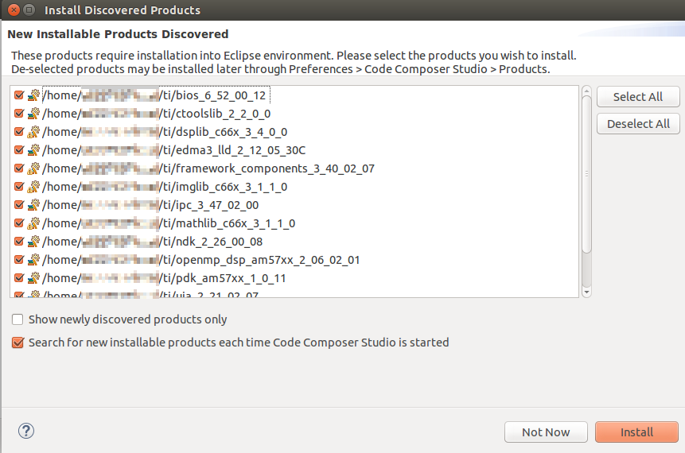{kind=link}
For more info on setting up CCS. Check out Setup CCS for EVM and Processor-SDK RTOS in the How To Guides.
9.1.4.2. Task 2 - Importing and Building the Template Application¶
We begin the lab by importing the RTOS or Bare-metal Template Application into CCS. The Template Application is delivered as a preconfigured CCS Project, making this process very simple. We will also use this as an opportunity to briefly dive into the structure of the SDK.
To import a project into CCS, go to the Project –> Import CCS Projects… menu. Typically, you will import SDK projects from either the pdk_<platform>_<version> or processor_sdk_rtos_<platform>_<version> directories. The pdk_<platform>_<version> directory contains Chip Support Library (CSL), Low Level Drivers (LLDs), Boot, Diagnostics, and other functions. It is also where LLD example projects are created. The processor_sdk_rtos_<platform>_<version> directory contains demos (including the Template App), documentation, and resources for creating bootable SD cards.
Now that you have an understanding of these directories, let us move on to importing the Template Application.
To import a project into CCS open the Project –> Import CCS Projects… menu. Then click Browse… to locate the template app which can be found at: processor_sdk_rtos_<platform>_<version>/demos/rtos_template_app/<soc_name>/<evm_name>/<core_name>. This will create a copy of the project in your CCS workspace.

After project import is complete you will see the Template Application under
the Project Explorer on the left side of CCS. Next, right click on the
project and select Build Project. You should get a message that says
**** Build Finished **** in the CCS Console.
9.1.4.3. Task 3 - Hardware Setup¶
Warning
The EVM board is sensitive to electrostatic discharges (ESD). Use a grounding strap or other device to prevent damaging the board. Be sure to connect communication cables before applying power to any equipment.
Hardware setup will vary depending on which EVM you are using. Generally, you need to make sure that the boot switches are set correctly and that serial, a JTAG debug probe, and power are connected to the board.
Refer to the Quick Start Guide that came with your board and the Hardware User’s Guide for more detailed hardware setup information.
AM335x EVM:
AM437x EVM:
AM572x EVM:
AM654x EVM - Quick Start Guide
Example connections for the AM572x EVM are provided below:
9.1.4.3.1. Front¶

9.1.4.3.2. Back¶

9.1.4.4. Task 4 - Loading and Running the Template Application¶
9.1.4.4.1. Creating a Target Configuration File¶
In order to connect to the target platform we first need to create a target configuration file. To do this, open CCS and go to the File –> New –> Target Configuration File menu and create a new target configuration file named after your board. For example, am572x-evm.ccxml. Next, you need to choose your connection and board on the target configuration file page. The connection is your chosen JTAG Debug Probe (for example, the XDS200) and the board is the name of your EVM (either EVMAM3358, EVMAM437X, or GPEVM_AM572x_SiRevA).
For example, here is the target configuration for the AM572x EVM using an XDS200 Debug Probe:

After setup is complete, clike the Save button to save your target configuration. Then click Test Connection to verify that you can connect to the board. If the test is successful you should receive the following message:
The JTAG DR Integrity scan-test has succeeded.
9.1.4.4.2. Connecting to the Target¶
With our target configuration confirmed, we can now move on to connecting to the target and loading our application.
First, set up the UART connection using the following host configuration in your favorite serial terminal program (e.g. Tera Term, screen, Minicom):
Baud Rate: 115200
Data Bits: 8
Parity: None
Flow Control: Off
Next, click on View –> Target Configurations in CCS. Then, right click on the target configuration that you created earlier and click Launch Selected Configuration. This action will switch CCS into the debug perspective. Your CCS instance should look similar to below:
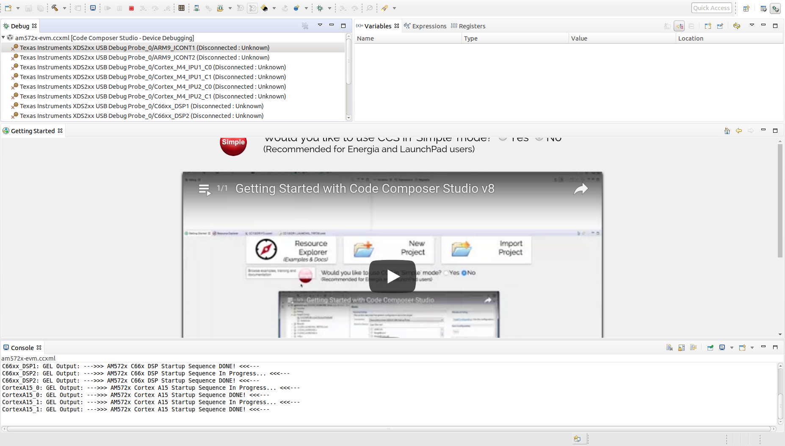{kind=link}
In the top left corner of CCS you should see a list of all of the available cores on your device. Right click on the primary core (listed below) and choose the Connect Target option. During this process you should see GEL output in the CCS console and the status of the core should change from “Disconnected” to “Suspended”.
Primary cores for each target:
AM335x |
AM437x |
AM572x |
AM654x |
|---|---|---|---|
A8 |
A9 |
A15_0 |
A53_0 |
Note
For AM572x EVM, the template application can also run on the M4 and DSP cores. If you intend to run the application on one of these cores you must still connect to the main A15_0 core first. After connecting to the A15_0 core you can then follow the same procedure as above to connect to the secondary core where you would like to run the application. Do not attempt to load and run the template application on two cores simultaneously as the Template Application is not designed to run this way.
Similar instructions apply to AM654x EVM, where you should connect to the M3 core first before running on your application core.
9.1.4.4.3. Running the Application¶
Now that we are connected to the target, it is time to load the application. To do this, go to the Run –> Load –> Load Program menu in CCS. Then, click the Browse project… button and choose the [rtos or baremetal]_template_app_<board>_<core>.out executable. Then click OK to load the executable.
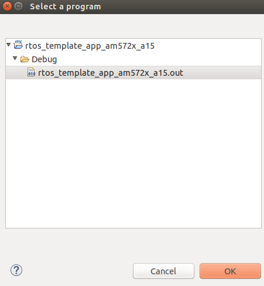You should now see the main.c file open in CCS and the program halted at
the beginning of the main() function. At this point you can click on the
Resume (F8)  button to start executing the Template Application.
button to start executing the Template Application.
The application will begin running and print progress over the UART. You should see the following text printed to your serial terminal:
Board Init complete
Uart Init complete
I2C Init complete
Gpio Init complete
MCSPI Init complete
======== Peripheral Initialization complete ========
======== Starting to create application tasks ========
gpio_toggle_led_task task created.
uart_task task created.
spi_test_task task created.
i2c_eeprom_read_and_display_task task created.
======== Application tasks created successfully ========
gpio_toggle_led task started
uart_task task started
i2c_eeprom_read_and_display task started
spi_test task started
Board Name read: AM572PM_
Board version read: A.30
spi_test task ended
i2c_eeprom_read_and_display task ended
uart_task :Enter a word or Esc to quit >
Type a word into the serial terminal. It should be echoed back to you. Then,
enter the ESC character to exit the Template Application. For example:
uart_task :Enter a word or Esc to quit >hello
Data received is:hello
uart_task :Enter a word or Esc to quit >test
Data received is:test
uart_task :Enter a word or Esc to quit >^[
uart_task task ended
Template app ended
Next, click the Terminate  button to disconnect from the target.
At this point you have successfully imported, built, and run the Template
Application.
button to disconnect from the target.
At this point you have successfully imported, built, and run the Template
Application.
9.1.4.5. Task 5 - Examining the Template Application¶
Now that you’re familiar with using the Template Application, let us look into the code to see how it all works.
9.1.4.5.1. The main.c File¶
Begin by opening the main.c file. At the top of this file, after the
copyright header, there are a series of #include statements gathering
the necessary header files for the application:
/* Standard header files */
#include <string.h>
/* XDCtools Header files (RTOS only) */
#include <xdc/std.h>
#include <xdc/cfg/global.h>
#include <xdc/runtime/System.h>
#include <xdc/runtime/Error.h>
/* BIOS Header files (RTOS only) */
#include <ti/sysbios/BIOS.h>
#include <ti/sysbios/knl/Task.h>
/* Board header file */
#include <ti/board/board.h>
/* Local template app header file */
#include "app.h"
(RTOS only) XDCtools provides configuration tools to create and build a static configuration as part of your application. These headers are necessary for the
*.cfgconfiguration files.(RTOS only) BIOS is a synonym for TI-RTOS. These headers are necessary for accessing common RTOS features such as tasks.
The Board Library is a thin utility layer on top of CSL and other board utilities. It provides uniform Application Programming Interfaces (APIs) for all supported boards. It aims to assist the user to quickly write portable applications for supported boards by hiding board level details from the user.
The
app.hheader file includes header files for drivers used in the application code as well as macros and function prototypes. Specifically,app.hincludes headers for the following LLDs which are used by the application:/* Low level driver header files */ #include <ti/drv/gpio/GPIO.h> #include <ti/drv/uart/src/UART_utils_defs.h> #include <ti/drv/uart/UART_stdio.h> #include <ti/drv/uart/UART.h> #include <ti/drv/i2c/I2C.h> #include <ti/drv/spi/MCSPI.h>
Next, we come across the main() function which demonstrates the common
procedure for initializing an RTOS or bare-metal application. You can read the comments in
the code for further clarification. Let’s break down the steps:
Initialize the board:
Board_initCfg boardCfg; boardCfg = BOARD_INIT_PINMUX_CONFIG | BOARD_INIT_MODULE_CLOCK | BOARD_INIT_UART_STDIO; Board_init(boardCfg);
Intialize the peripherals:
UART_init(); I2C_init(); GPIO_init(); MCSPI_init();
(RTOS only) Create the application tasks. We will discuss this further in the section covering the
app.cfile.Start BIOS (RTOS) or start the application tasks directly (Bare-metal):
BIOS_start(); or appRunTasks();
9.1.4.5.2. The app.c File¶
RTOS
Open the app.c file and take a look at the appTasksCreate()
function. You should recall that this function was called in step three
of main(). Inside of appTasksCreate() there are biosTaskCreate()
function calls for each peripheral task. biosTaskCreate() just wraps the
common task creation procudure into an easy-to-use function call. Navigate to
the bottom of the app.c file to check out biosTaskCreate().
The task creation procudure is as follows:
Create task variables
Task_Params taskParams; Error_Block eb; Task_Handle task;
Initialize
Error_BlockandTask_Paramsto their default valuesError_init(&eb); Task_Params_init(&taskParams);
Apply user arguments for stack name, priority, and stack size
taskParams.instance->name = taskName; taskParams.priority = taskPriority; taskParams.stackSize = stackSize;
Create the task
task = Task_create(taskFunctionPtr, &taskParams, &eb);
The tasks themselves are simply functions in your code following the format below:
void myTaskFunc(UArg arg0, UArg arg1)
Bare-metal
Open the app.c file and take a look at the appRunTasks() function.
Inside of appRunTasks() there are function calls for each peripheral task.
This file also contains setup code for a timer interrupt that controls
the LED blink task.
Note
The application functions are called “tasks” for naming consistency with the RTOS template application, but they are not actual SYS/BIOS tasks.
Next, let’s take a look at i2c_eeprom_read_and_display_task() to
see how to use TI Drivers. The procedure for opening a TI Driver generally
follows these steps:
Create driver handle and params structure
I2C_Handle handle; I2C_Params params;
Initialize and set the driver parameters
I2C_Params_init(¶ms); params.transferMode = I2C_MODE_CALLBACK; params.transferCallbackFxn = someI2CCallbackFunction; // etc...
Open the driver
handle = I2C_open(someI2C_configIndexValue, ¶ms); if (!handle) { System_printf("I2C did not open"); }
For more information on TI Drivers, check out the included documentation for each driver at pdk_<platform>_<version>/packages/ti/drv/<driver>/docs.
For more infomation on SYS/BIOS, check out the User Guide at bios_<version>/docs.
9.1.4.6. Task 6 - Modifying the RTOS Template Application¶
Note
The instructions below apply to the RTOS Template Application only.
Now that you have an understanding of how to use the drivers and create RTOS tasks, let us make some simple modifications to create our own application.
We will create a simple application which allows the user to control the LED blink rate over the UART terminal. The user should be able to enter an LED blink period (between 0 and 5 seconds) and the user LED should blink at that rate.
This part of the lab is broken down into several sections. In each section, you will be given general instructions for modifications to make to the source files. After you make your own modifications they will be verified against provided code examples. Try to make the modifications on your own before looking at the answers!
9.1.4.6.1. Delete the Code You Don’t Need¶
The Template Application has tasks for UART, I2C, GPIO, and MCSPI drivers. Some of these tasks will not be used by our application. Go ahead and remove any tasks that you do not think you will need to create the application. Hold off on modifying tasks that will be reused until later steps.
Attention
Don’t peek! The next section will discuss answers to the task above.
Since our application is only consuming user input and blinking the LEDs, we only need the UART and GPIO tasks. That means the I2C and SPI tasks can be removed.
9.1.4.6.2. Add Support for Additional Features¶
Our application will require that the UART task has a way to communicate the delay value it receives from the user to the LED task to modify the blink rate. While this could be accomplished with something as simple as a shared global variable, TI-RTOS provides many other ways to accomplish inter-process communication. Take a look at the BIOS User Guide, which is bundled with the SDK at bios_<version>/docs/Bios_User_Guide.pdf for ideas on how to share data between tasks. After you decide on a method, you can use the API documentation located at bios_<version>/docs/Bios_APIs.html to figure out how to use the API in your application.
Attention
Don’t peek! The next section will discuss answers to the task above.
A good choice for passing the LED blink rate is the ti.sysbios.knl.Mailbox
module. This module can be used to pass buffers from one task to another on the
same processor.
To include Mailbox in your project you first need to add the module to the
app.cfg file:
var Mailbox = xdc.useModule('ti.sysbios.knl.Mailbox');
Next, you need to include the ti/sysbios/knl/Mailbox.h header file in
app.h:
#include <ti/sysbios/knl/Mailbox.h>
To create a Mailbox, use the Mailbox_create() API which is defined below:
Mailbox_Handle Mailbox_create(SizeT bufsize,
UInt numBufs,
Mailbox_Params *params,
Error_Block *eb)
You are now set up to use Mailbox in your application code.
9.1.4.6.3. Add New Application Code¶
Modify the existing UART and LED task code to functions for the new application. If you run in to any issues, make sure to use CCS debug features such as breakpoints and variable watching to verify that the application is functioning in the way that you expect. Functional example code for the AM572x EVM will be provided at the end.
Attention
Don’t peek! The next section will discuss answers to the task above.
Create a global
Mailbox_Handleto be shared by theuart_task()andgpio_toggle_led_task(). Then create a Mailbox at the end of theappTasksCreate()function.Modify the
uart_task()code to scan for an unisgned integer delay value instead of a string. This value should then be placed in the Mailbox by using theMailbox_post()API.Modify
gpio_toggle_led_task()to retrieve a delay value from the Mailbox via theMailbox_pend()API. This delay value should be used in thetask_sleep()function calls.
Now, give your project a try. You should be able to type in LED delay values to
the UART terminal and see the blink rate of the LED change accordingly. To see
a functioning solution, you can download the modified source files from the
links below. Sections of the source files that were modified from the originals
are marked with a /* Modification: */ comment.
9.1.5. Additional Information¶
9.1.5.1. Porting to a Custom Board¶
The Template Application can be easily modified to run on a custom board. The
major change required is to link in a new Board Library. Modifying the
Template Application for your custom Board can be achieved by simply removing
the ti.board library and PATH from the project and replacing with your
specific board libraty and PATH under the linker build options in CCS by
right clicking on the project and selecting
Properties –> GNU Linker –> Libraries.
For example, currently the library linked for AM572x is specified in the .projectspec file as follows:
linkerBuildOptions=
-L${TI_PDK_INSTALL_DIR}/packages/ti/board/lib/evmAM572x/a15/release/
-l:ti.board.aa15fg
Note
Currently for AM572x EVM there is also a dependemcy on the GPIO_evmAM572x_board.c and GPIO_board.h files. These files can be modified for your custom board.
9.1.6. Next Steps¶
Thanks for taking the time to read through this getting started workshop. At this point you should be comfortable with the basic structure of the SDK, know how to import, build, modify, and run applications on the target, and know where to find various documentation in the SDK and Software Developer Guide.
Next, you can check out our various video training series in the TI training portal, check out our Examples and Demonstrations, and get started writing your own application!
If you have any questions along the way please remember to read the FAQ or reach out to our engineers on the E2E forums.
9.2. Image Processing Demo¶
9.2.1. Introduction¶
This page describes the image processing demo provided in the Processor-SDK for RTOS. This demo illustrates the integration of key components in the SDK and provides a framework for application development.
The use case implemented is the transfer of image data from/to DDR and internal memory. Typically, images are large and need to be stored in external memory. Key functions include
Operates on different segments of the same image in different cores
Operates across multiple cores executing different algorithms on the same image data
Transfers input/output image to a medium (SD card or external system)
Utilize IPC to communicate between cores to perform an image processing task parallel
This demo utilizes many SDK features/components:
Multi-core application utilizing ARM-A15 and DSP-C66x cores
IMGLIB for optimized C66x image processing
IPC for interprocessor communication
NDK application utilizing NDK for internet access
UIA for instrumentation logging
This demo is not available for all devices. Currently, the following devices and EVM are supported:
AM57x, on the AM572x GP EVM
C665x, on the C665x EVM
C667x, on the C667x EVM
K2H, on the K2H EVM
Note
For AM572x EVM, only the SD card boot option (via SBL) is current supported.
Note
This demo has been only verified with the Google Chrome along with the 100Mbit router with DHCP
9.2.2. Requirements¶
The following materials are required to run this demonstration:
Hardware
TI EVM (see list above)
Local Area Network with DHCP support
JTAG Emulator (on board or external)
Software
Processor-SDK RTOS
Code Composer Studio
9.2.3. Software Design¶
9.2.3.1. More about processing algorithms¶
The application will use IMGLIB APIs for its core image processing needs. The following steps are performed for edge detection:
Split input image into multiple overlapping slices
If it is a RGB image, separate out the Luma component (Y) for processing (See YCbCr for further details)
Run Sobel operator (IMG_sobel_3x3_8) to get the gradient image of each slices
Run the thresholding operation ( IMG_thr_le2min_8) on the slices to get the edges
Combine the slices to get the final output
9.2.3.2. Framework for multicore¶
The current framework for multicore is IPC (Message Queue). The following are the overall steps (the master and threads will be run on one or more cores):
The master thread will preprocess the input image to make a gray scale or luma image
The master thread signal each slave thread to start processing and wait for processing complete signal from all slave threads
The slave threads run edge detection function to generate output edge image of the slice
Then the slave threads signal master thread indicating the processing completed
Once master thread receives completion signal from all threads it proceeds with further user interface processing
9.2.3.3. How to Build the Demo¶
9.2.3.3.1. AM572x GP EVM¶
For Linux:
Under ~/ti/processor_sdk_rtos_am57xx_x_0x_xx_xx directory, run the following commands:
source ./setupenv.sh
make demo_clean
make demo
the OUT files for A15, DSP1 and DSP2 will be built at
~/ti/processor_sdk_rtos_am57xx_x_0x_xx_xx/demos/image_processing/ipc/evmam572x/host/build,
~/ti/processor_sdk_rtos_am57xx_x_0x_xx_xx/demos/image_processing/ipc/evmam572x/dsp1/build, and
~/ti/processor_sdk_rtos_am57xx_x_0x_xx_xx/demos/image_processing/ipc/evmam572x/dsp2/build respectively
For Windows:
Under C:\ti\processor_sdk_rtos_am57xx_x_0x_xx_xx directory, run the following commands:
setupenv.bat
gmake demo_clean
gmake demo
the OUT files for A15, DSP1 and DSP2 will be built at
C:\ti\processor_sdk_rtos_am57xx_x_0x_xx_xx\demos\image_processing\ipc\evmam572x\host\build,
C:\ti\processor_sdk_rtos_am57xx_x_0x_xx_xx\demos\image_processing\ipc\evmam572x\dsp1\build, and
C:\ti\processor_sdk_rtos_am57xx_x_0x_xx_xx\demos\image_processing\ipc\evmam572x\dsp2\build respectively
9.2.3.3.2. C6657 EVM¶
For Linux:
Under ~/ti/processor_sdk_rtos_c665x_x_0x_xx_xx directory, run the following commands:
source ./setupenv.sh
make demo_clean
make demo
the OUT files for DSPs will be built at
~/ti/processor_sdk_rtos_c665x_x_0x_xx_xx/demos/image_processing/ipc/evmc6657l/master/build,
~/ti/processor_sdk_rtos_c665x_x_0x_xx_xx/demos/image_processing/ipc/evmc6657l/slave/build respectively
For Windows:
Under C:\ti\processor_sdk_rtos_c665x_x_0x_xx_xx directory, run the following commands:
setupenv.bat
gmake demo_clean
gmake demo
the OUT files for DSPs will be built at
C:\ti\processor_sdk_rtos_c665x_x_0x_xx_xx\demos\image_processing\ipc\evmc6657l\master\build,
C:\ti\processor_sdk_rtos_c665x_x_0x_xx_xx\demos\image_processing\ipc\evmc6657l\slave\build respectively
9.2.3.3.3. C6678 EVM¶
For Linux:
Under ~/ti/processor_sdk_rtos_c667x_x_0x_xx_xx directory, run the following commands:
source ./setupenv.sh
make demo_clean
make demo
the OUT files for DSPs will be built at
~/ti/processor_sdk_rtos_c667x_x_0x_xx_xx/demos/image_processing/ipc/evmc6678l/master/build,
~/ti/processor_sdk_rtos_c667x_x_0x_xx_xx/demos/image_processing/ipc/evmc6678l/slave/build respectively
For Windows:
Under C:\ti\processor_sdk_rtos_c667x_x_0x_xx_xx directory, run the following commands:
setupenv.bat
gmake demo_clean
gmake demo
the OUT files for DSPs will be built at
C:\ti\processor_sdk_rtos_c667x_x_0x_xx_xx\demos\image_processing\ipc\evmc6678l\master\build,
C:\ti\processor_sdk_rtos_c667x_x_0x_xx_xx\demos\image_processing\ipc\evmc6678l\slave\build respectively
9.2.3.3.4. K2H EVM¶
For Linux:
Under ~/ti/processor_sdk_rtos_k2hk_x_0x_xx_xx directory, run the following commands:
source ./setupenv.sh
make demo_clean
make demo
the OUT files for A15, DSPs will be built at
~/ti/processor_sdk_rtos_k2hk_x_0x_xx_xx/demos/image_processing/ipc/evmk2hk/master/build,
~/ti/processor_sdk_rtos_k2hk_x_0x_xx_xx/demos/image_processing/ipc/evmk2hk/slave/build respectively
For Windows:
Under C:\ti\processor_sdk_rtos_k2hk_x_0x_xx_xx directory, run the following commands:
setupenv.bat
gmake demo_clean
gmake demo
the OUT files for A15, DSPs will be built at
C:\ti\processor_sdk_rtos_k2hk_x_0x_xx_xx\demos\image_processing\ipc\evmk2hk\master\build,
C:\ti\processor_sdk_rtos_k2hk_x_0x_xx_xx\demos\image_processing\ipc\evmk2hk\slave\build respectively
9.2.3.4. How to Run the Demo¶
9.2.3.4.1. AM572x GP EVM (Using CCS)¶
The CCS is used to load the program and run on ARM-A15 (HOST), C66x Core 1 (DSP1) and C66x Core 2 (DSP2) by following the steps below:
Launch CCS and connect to AM572 GP EVM using proper target configuration
Connect to CortexA15_0 (Host) [Push “Power” button right before connect to CortexA15_0]

Connect to C66xx_DSP1
Connect to C66xx_DSP2

Load image_processing_evmam572x_dsp1.out to C66xx_DSP1 using JTAG

Run image_processing_evmam572x_dsp1.out on C66xx_DSP1
Load image_processing_evmam572x_dsp2.out to C66xx_DSP2 using JTAG

Run image_processing_evmam572x_dsp2.out on C66xx_DSP2
Loaded image_processing_evmam572x_host.out to CortexA15_0

Run image_processing_evmc6678l_master.out on CortexA15_0
The HOST will display the IP address on CCS CIO

Users can use internet browser to access this IP address
The Image Processing Demo page will be displayed
Provide values for the “Number of Cores” and “Select Image to Process” fields

The HOST will read the image via NDK, partition it according to the number of cores, send the messages to DSP cores (Slaves) via IPC MessageQ. The DSP cores will start processing the partitioned images concurrently. The resulting output image will be stored in DDR and the HOST will be notified by DSP cores via IPC MessageQ. Subsequently, the HOST will write the input and output images to the Image Processing Demo page using NDK.

9.2.3.4.2. AM572x GP EVM (Using SBL)¶
The SBL is used to load the program from SD card and run on ARM-A15 (HOST), C66x Core 1 (DSP1) and C66x Core 2 (DSP2) by following the steps below:
Copy “app” and “MLO” from processor_sdk_rtos_am57xx_x_0x_00_0x\prebuilt-sdcards\evmAM572x\sd_card_files on Windows or processor_sdk_rtos_am57xx_x_0x_00_0x/prebuilt-sdcards/evmAM572x/sd_card_files on Linux to the root directory of a formatted micro SD card
Plug in the micro SD card into uSD slot on AM572x GP EVM
Connect “Serial Debug” on AM572x GP EVM to a PC USB port via a “Serial to USB” cable
Launch a terminal emulator like Tera Term and open the local COM port corresponding to the “Serial Debug” (Set it to 115200 bps, 8 bit, none parity, one bit stop, no flow control)
Plug power adapter (12V) into the AM572x GP EVM (DC-In) and power on the EVM
There the IP address will be displayed on the “Serial Debug”
Users can use internet browser to access this IP address
The Image Processing Demo page will be displayed
Provide values for the “Number of Cores” and “Select Image to Process” fields
The HOST will read the image via NDK, partition it according to the number of cores, send the messages to DSP cores (Slaves) via IPC MessageQ. The DSP cores will start processing the partitioned images concurrently. The resulting output image will be stored in DDR and the HOST will be notified by DSP cores via IPC MessageQ. Subsequently, the HOST will write the input and output images to the Image Processing Demo page using NDK.
9.2.3.4.3. C6678 EVM or C6657 EVM¶
CCS is used to load the program and Core 0 will be configured as the host. The following steps show C667x but a similar process applies for C665x.
Launch CCS and connect to C6678 EVM using proper target configuration
Connect to C66x Core 0 (Host)

Loaded image_processing_evmc6678l_master.out to C66x Core 0
Run image_processing_evmc6678l_master.out on C66xx_0
Group C66x Core 1-N into a group (Group 1, Slave)
Connect to Group 1
Load image_processing_evmc6678l_slave.out to Group 1 using JTAG

Run image_processing_evmc6678l_slave.out on Group 1
The HOST will display the IP address on CCS CIO

Users can use internet browser to access this IP address
The Image Processing Demo page will be displayed
Provide values for the “Number of Cores” and “Select Image to Process” fields

The HOST will read the image via NDK, partition it according to the number of cores, send the messages to DSP cores (Slaves) via IPC MessageQ. The DSP cores will start processing the partitioned images concurrently. The resulting output image will be stored in DDR and the HOST will be notified by DSP cores via IPC MessageQ. Subsequently, the HOST will write the input and output images to the Image Processing Demo page using NDK.

9.2.3.4.4. K2H EVM¶
CCS is used to load the program and arm_A15_0 will be configured as the master and C66xx_0 - C66xx_7 will be configured as slaves.
Launch CCS and connect to K2H EVM using proper target configuration
Connect to arm_A15_0 (Host)
Group C66xx_0 to C66xx_7 into a group (Group 1, Slaves)

Connect to Group 1

Load image_processing_evmk2hk_slave.out to Group 1 using JTAG

Run image_processing_evmk2hk_slave.out on Group 1

Loaded image_processing_evmk2hk_master_arm.out to arm_A15_0
Run image_processing_evmk2hk_master_arm.out on arm_A15_0

The HOST will display the IP address on CCS CIO
Users can use internet browser to access this IP address
The Image Processing Demo page will be displayed
Provide values for the “Number of Cores” and “Select Image to Process” fields

The HOST will read the image via NDK, partition it according to the number of cores, send the messages to DSP cores (Slaves) via IPC MessageQ. The DSP cores will start processing the partitioned images concurrently. The resulting output image will be stored in DDR and the HOST will be notified by DSP cores via IPC MessageQ. Subsequently, the HOST will write the input and output images to the Image Processing Demo page using NDK.

9.3. POSIX-SMP Demo¶
9.3.1. Introduction¶
This page describes the SMP/Posix demo provided in the Processor-SDK for RTOS and Linux. This demo uses Posix APIs together with a simple benchmark (Dhrystone) to automatically calculate the effective throughput of all the cores in each SMP cluster. SMP mode is only supported on Coretex-A15 cores.
This demo runs on:
AM572x (A15, C66, M4)
AM437x (A9)
AM335x (A8)
K2H (A15, C66)
K2E (A15, C66)
K2G (A15, C66)
K2L (A15, C66)
C6678 (C66)
C6657 (C66)
The sections below provide details of the application as well as build and run instructions.
9.3.2. Requirements¶
The following materials are required to run this demonstration:
Hardware
TI EVM (see list above)
Serial UART cable (provided in EVM kit)
Software
Processor-SDK RTOS
Code Composer Studio
9.3.3. Software Design¶
The demo is based on Dhrystone 2.1 from link.
The purpose of the demo is two-fold. First, it is to show easy scaling of throughput across cores in a SMP cluster when running TI-RTOS. Second, it shows easy portability of Posix threads between TI-RTOS and Linux.
The overall requirement is discover all parameters automatically without user input, and to minimize the amount of code that must be customized between TI-RTOS and Linux. This demonstrates that the same Posix threads as well as their setup/control code can be run on either TI-RTOS or Linux with minimal effort.
In order to accomplish this, several major modifications were made to Dhrystone in order to “threadify” it. Some of these changes slightly affect the results compared to an unmodified version. Thus this modified version should be run on all processors where comparisons will be drawn.
Removal of most printf() during normal operation. Original code dumped all final values for the user to verify. Changed to programmatic verification. Only printf() for actual results (DMIPS and Dhrystones) preserved.
Removal of all global variables. They are accessed through an “inst” pointer instead.
Adaptive discovery of iteration count. Original code used a #define. This version doubles iteration count until execution time is about 10M timer ticks.
Adaptive discovery of number of cores in SMP cluster. Original code didn’t use threads. This version doubled number of threads until cumulative DMIPS flattens out.
POSIX barriers are used inside the timed portion of the code. This is not to time the performance of the barrier, but is instead used to time how long all threads together take to complete. It is assumed the execution times of the threads (> 0.1 second) are orders of magnitude more than the barrier, so the barrier’s effect on results is negligible.
Processor SDK uses makefiles for TI-RTOS and Yocto recipes for Linux for the supported EVMs. The makefile can also be used to compile native builds for Linux (both for EVMs and x86).
For more information on TI-RTOS Posix, see POSIX Support.
9.3.4. How to Run the Demo¶
The processor SDK includes pre-built binaries which may be loaded and run using the SBL with UART or using CCS with UART or ROV (UART display for newer versions and ROV for older versions). To run using UART, hook up to the board using UART and run the .out file.

To run using CCS, use the following steps. Each binary has an associated \*.rov.xs file located in the same directory–enabling the CCS ROV tool. Newer versions will display directly to the UART console and any steps involving ROV may be skipped.
<SDK_INSTALL_PATH>/processor_sdk_rtos_<platform>_2_00_xx_xx/demos/posix-smp/bin/<platform>/<core>/debug/dhry.out
<SDK_INSTALL_PATH>/processor_sdk_rtos_<platform>_2_00_xx_xx/demos/posix-smp/bin/<platform>/<core>/debug/dhry_pa15fg.rov.xs
For all platforms and core types, the basic procedure for running the demo will be the same:
Using CCS, launch the target configuration for the EVM CCS-Target Configurations. Please ensure that the target configuration will load the appropriate CCS gel files found in the emupak. Make sure all Coretex-A15 cores in the SMP cluster have an appropriate CCS gel file.
The default ccxml file only loads a gel on connect for some of the cores. Modify the ccxml file to load the gel for all the corresponding cores.
In the CCS debug view, group and then connect to all cores of device that you wish to test on (i.e. - all of the clustered A15 cores).
For each, core load the dhry.out file. The principle core should halt at main while the SMP linked cores will begin auto-running upon load.
Once all cores have been loaded, run all the cores.
The output will be sent to the UART console in real time.
The demo should not take more than a few minutes to run. You must manually halt the cores to end the demo.
If using Processor-SDK 3.0 or later,
Open the ROV window (Tools > RTOS Object View (ROV)) and view the SysMin module to inspect the output of the demo. If you see the below message, please specify the XDC and SYSBIOS versions:

The output buffer shown in the ROV contains the different stages of the demo’s progression:
The demo finds an appropriate number of iterations for the device.
The demo begins to add threads.
The demo concludes when adding additional threads does not further increase the DMIPS.
The output takes the form of: “xxxxxxx iterations *n threads; dhrystones xxxxxxxx, dmips = xxxx”. In the screenshot above, moving from two threads to four threads does not appreciably improve the DMIPS, so the demo completes. This behavior is expected because the demo is only running on two cores in this example.
Note
A15 cores may usually be connected to directly; on the AM572x, the M4 IPUs must first be initialized by the gel scripts (Scripts > AM572x MULTICORE initialization > IPUxSSClkEnable_API)
If the K2 demo will not run, try updating to the latest emupack by doing “Help/Check For Updates” and selecting “Keystone2 device support” update (only). There are additional instructions for configuring groups, etc. at SMP Debug.
If the primary core of an SMP group will not allow running after loading the demo, try pausing the linked cores and then running all the cores in a group
For TI-RTOS documentation for enabling SMP, refer to SMP/BIOS. The POSIX demo in the Processor SDK RTOS packages with C66x does not support SMP. This is a POSIX pthread demo intended to run Dhrystone on one C66x core without SMP.
Some of the DMIPS values may not be accurate, but the values will increase proportionally with the number of cores
9.3.5. How to Build the Demo¶
9.3.5.1. Processor-SDK RTOS¶
To build the project manually, first navigate to the top level makefile:
<SDK_INSTALL_PATH>/processor_sdk_rtos_<platform>_2_00_xx_xx/demos/posix-smp/makefile
Edit the makefile to include the paths to BIOS, XDC, PDK packages, and the toolchains for the cores being used.
#DEPOT = <ROOT_INSTALL_PATH>
#### BIOS-side dependencies ####
#BIOS_INSTALL_PATH ?= $(DEPOT)\bios_n_nn_nn_nn
#XDC_INSTALL_PATH ?= $(DEPOT)\xdctools_n_nn_nn_nn_core
#### BIOS-side toolchains ####
#TOOLCHAIN_PATH_A15 ?= $(DEPOT)\ccsv6\tools\compiler\gcc-arm-none-eabi-n_n-xxxxqn
#TOOLCHAIN_PATH_M4 ?= $(DEPOT)\ccsv6\tools\compiler\ti-cgt-arm_x.x.x
Navigate to the demo directory and run “make”. The steps to run the demo will be the same.
9.4. Audio Benchmark Starterkit¶
9.4.1. Introduction¶
The Audio Benchmark Starterkit is intended to provide an easy and quick way to benchmark key audio functions on C66x and C674x DSP devices. This package is intended for users who are new to the TI DSP development environment and provides an easy path to compare core audio benchmarks to other implementations. For the purposes of benchmarking we have selected the following signal processing functions
Complex Fast Fourier transform (FFT)
Real Block FIR filters with 128 samples, 16 coefficients
Cascaded Biquad (2 channels, 3 stages) IIR filter for 128 Samples
The package is also a great way to get familiar with benchmarking functions on TI DSP with or without TI`s Code Composer Studio environment. It also intends to provide guidance on the compiler options and code/data memory placement that allows developers to obtain optimal performance on TI DSP architecture. The package also demonstrates use of signal processing functions from TI C6000 DSPLIB which contains several kernels optimized for TI DSP architectures.
9.4.2. Software Features¶
Benchmark applications for core signal processing functions
Makefile and CCS Project scripts to build applications
SD card bootable binaries [Supported on SOCs that support SD boot]
9.4.3. Directory Structure¶
The audio benchmark starterkit is located in the Processor SDK RTOS release under the directory path
<SDK_INSTALL_PATH>\processor_sdk_rtos_<soc>_x_xx_xx_xx\demos\audio-benchmark-starterkit
Detailed description of the directory structure is given below: .. Image:: ../images/Audben_dirStructure.png
prebuilt-binaries - directory contains prebuilt out files to run the benchmarks.
bootimages - SD card boot files to run the benchmarks using SD boot.
docs - directory contains ReadMe, Quick start guide and the software manifest for the package.
scripts - directory contains .txt script files that is used by BenchmarkProjectCreate script to create CCS projects
src - common - Contains linker command file and logging functions used by all benchmark tests. - singlePrecision_FFT - Source files for benchmark app for FFT - singlePrecision_FIR - Source files for benchmark app for FIR - singlePrecision_IIR - Source files for benchmark app for IIR
9.4.4. Software Dependencies¶
Note
For correct version of Code Composer Studio to download, please refer to the `Release Notes <index_release_specific.html#release-notes>`__ corresponding to the Processor SDK RTOS version that you have installed
9.4.5. Supported Hardware¶
Platforms supported in Processor SDK RTOS 3.3 and later
Platforms planned in Processor SDK RTOS 4.0
9.4.6. QuickStart with How-To-Video¶
For an easy and visual experience to build and run the benchmark tests, we have created a short How to video that demonstrates how the Benchmark Starterkit can be built and run on C66x DSP on the K2G EVM which you can check out from the link provided below:
9.4.7. How to Build the Benchmarks¶
The benchmark starterkit is designed to build with makefiles as well as with Code Composer Studio (CCS) IDE Environment. Both the approaches requires developers to setup the Processor SDK RTOS development environment. Developers can use either approach based on their familiarity with the chosen build environment. Let us take a closer look at both approaches.
9.4.7.1. Using Makefile¶
Step1 : Setup Processor SDK RTOS build Environment.
Developers are required to setup the Processor SDK RTOS build environment as described in Processor SDK RTOS Setup environment
set SDK_INSTALL_PATH = C:\ti\<Install directory>
setupenv.bat
Note
If developers install CCS or Processor SDK RTOS under Custom path then they need to refer to the setup instructions described under Setup environment when installing to a custom path
Step2 : Invoke Make from root directory
The make file in the root director of the audio-starterkit can be used to build the entire package. To build the benchmark examples:
cd <PROC_SDK_INSTALL_PATH>/demos/audio-benchmark-starterkit
make all
Note
The build picks up the SOC information from the SDK setup. Also, in the make environment the benchmark application is built to send benchmark logs to UART console so that there is no dependency on the CCS IDE environment
For Other supported options, please type
For Windows:
gmake help
For Linux :
make help
All available options are provided below:

9.4.7.2. Using CCS Projects¶
The audio benchmark starterkit does not provide pre-canned CCS Projects as it is difficult to set up projects to be portable across various developer build environments. To create CCS Projects with the benchmarks, developers are required to run the BenchmarkProjectCreate script provided in the root directory of the starterkit.
Step1 : Setup Processor SDK RTOS build Environment.
set SDK_INSTALL_PATH = C:\ti\<Install directory>
set TOOLS_INSTALL_PATH = C:\ti\<CCS Install directory>
setupenv.bat
Note
CCS by default is installed in the path C:\ti\ccsv7 so TOOLS_INSTALL_PATH=C:\ti
Developers are required to setup the Processor SDK RTOS build environment as described in Processor SDK RTOS Setup environment
If developers install CCS or Processor SDK RTOS under a Custom path then they need to refer to the setup instructions described under Setup environment when installing to a custom path
Step 2: Run BenchmarkProjectCreate script to generate CCS Projects
To generate the CCS Projects
cd $PROC_SDK_INSTALL_PATH/demos/audio-benchmark-starterkit
BenchmarkProjectCreate [Options]
The Project create script can be run using the following syntax
BenchmarkProjectCreate.bat <soc> <board> <all>
Description of arguments:
soc - K2G (Default) / K2H/ K2E/ C6678/ C6657/ AM572X/ AM571x/ OMAPL138
board - all (Default) / <SOC supported EVMs>
module - all / (FFT / FIR / IIR)
Example:
a) BenchmarkProjectCreate.bat
- Creates all module projects for the K2G soc for evmK2G platform
b) BenchmarkProjectCreate.bat AM572x
- Creates all module projects for AM572x soc for evmAM572x and idkAM572x platform
c) BenchmarkProjectCreate.bat C6657 evmC6657
- Creates all modules for C6657 DSP for evmC6657 platform
d) BenchmarkProjectCreate.bat K2H evmK2H FFT
- Creates FFT module project for K2H soc for evmK2H
Note
Known issue with Processor SDK RTOS 3.3 The BenchmarkProjectCreate script uses text files .txt from scripts folder to generate the CCS projects. The name for the demo folder was updated from “audio-benchmark-kit” to “audio-benchmark-starterkit”. This will require CCS users to update the name in the .txt file before generating the scripts.
For Example if you are using K2G platform locate file Benchmark_FFT_evmK2G_c66ExampleProject.txt, Benchmark_FIR_evmK2G_c66ExampleProject.txt and Benchmark_IIR_evmK2G_c66ExampleProject.txt and update the demo name in the text files from “audio-benchmark-kit” to “audio-benchmark-starterkit”
Step 3: Import Generated CCS Projects in CCS Workspace
Launch CCS and Import the CCS Project using the Project->Import Existing CCS Project and browse to the audio-benchmark-starterkit folder

Step 4: Build Imported CCS Benchmark Projects
Right click on the Benchmark Project File and Build the project as shown below:

9.4.8. How to Run the Benchmarks¶
The benchmark examples can be run by loading the built out files with an emulator using the CCS Debug functionality or the examples can be run on the DSP by creating SD card bootable images using out files. Let us take a look at both these approaches.
9.4.8.1. Using CCS¶
Step 1: Connect Emulator and UART to Hardware
Refer to the Hardware Setup guide and connect the onboard or external emulator to the Hardware and Host machine with CCS installed.
Connect the UART cable from the EVM to the Host machine and configure the Serial console with following settings:
Baud Rate: 115200
Data Bits: 8
Parity: None
Flow Control: Off
Step 2: Create Target configuration and connect to the DSP
To connect to the SOC, developers need to create a Target configuration by following the procedure described in wiki Create_Target_Configuration_File_for_EVM
Instructions specific to supported EVMs:
Note
Please refer to Hardware User Guide corresponding to each supported EVM so setup the boot switches to No boot if available
Step 3: Loading and Running Benchmark application on the DSP
Load the out file using Run -> Load -> Load Program and browse to the output binary.
After loading the out file, run the benchmark app by Pressing F8 or Run -> Resume

9.4.8.2. Using SD card (Supported only on AM57xx and K2G)¶
Step 1: Run Create SD script to generate SD bootable binaries
The root directory in the audio-benchmark-starterkit contains a create-sd.bat file that will convert the .out files installed int the bin folder into SD bootable images which will be installed in the path bin/sd_card_files/<EVM>
The syntax to run the create-sd script is as follows:
create-sd.bat <EVM>
EVM : refers to evaluation platfom on which the binaries are meant to be run
Eg: create-sd evmK2G - Creates SD bootable images for K2G EVM.
Step 2 : Format and copy the SD card binaries to the SD card
Create an SD card using the procedure described in Creating SD card in Windows and Create SD card in Linux
Copy the “MLO” and “Singleprecision_<Module>_app” to the boot partition on the SD card.
Step 3: Boot the Benchmark app by configuring SD boot on the EVM
Configure the boot switches on the evaluation hardware to SD boot.
Insert the SD card in the microSD or SD card slot on the board.
Connect the UART on the hardware to the Host and configure the host to Baud Rate= 115200, Data Bits= 8 , Parity= None, Flow Control= Off
Power on the EVM to view the output on the Serial console on the host
9.4.9. Benchmark App output on UART console¶

9.4.9.1. Benchmark Starterkit Implementation¶
Signal Processing functions used in Starterkit
Single Precision FFT: DSPF_sp_fftSPxSP (Mixed Radix Forward FFT )
The audio benchmark kit uses the FFT implementation(DSPF_sp_fftSPxSP)
from the TI DSP
Library.
The DSPF_sp_fftSPxSP kernel calculates the discrete Fourier transform of
complex input array ptr_x using a mixed radix FFT algorithm. The
result is stored in complex output array ptr_y in normal order. Each
complex array contains real and imaginary values at even and odd
indices, respectively. DSPF_sp_fftSPxSP kernel is implemented in
assembly to maximize performance, but a natural C implementation is also
provided. The demonstration app for this kernel includes the required
bit reversal coefficients, brev, and additional code to calculate
the twiddle factor coefficients, ptr_w.
Note
For implementation details of this FFT computation refer to documentation provided in Additional resources
For Real input sequences, efficient FFT Implementation is described here Efficient_FFT_Computation_of_Real_Input
Single Precision FIR: DSPF_sp_fir_cplx (Complex FIR Filter)
The audio benchmark kit uses the FFT implementation(DSPF_sp_fftSPxSP) from the TI DSP Library. The DSPF_sp_fir_cplx kernel performs complex FIR filtering on complex input array x with complex coefficient array h. The result is stored in complex output array y. For each complex array, real and imaginary elements are respectively stored at even and odd index locations.
The API reference and the implementation details can found in the TI DSPLIB documentation included in the Processor SDK.
Single Precision IIR : tisigCascadeBiquadSP_2c_3s_kernel (Cascade Biquad Filter for Multichannel input)
The Cascade biquad filtering function in the audio benchmark starterkit is an improved biquad infinite impulse response filter Patent US20160112033 Pending. The new filter structure modifies the feedback path in the filter, resulting in a significant reduction in execution cycles. One of the most-used digital filter forms is the biquad. A biquad is a second order (two poles and two zeros) Infinite Impulse Response (IIR) filter. It is high enough order to be useful on its own, and because of the coefficient sensitivities in higher order filters the biquad is often used as the basic building block for more complex filters. For instance, a biquad low pass filter has a cutoff slope of 12 dB/octave, useful for tone controls; if a 24 dB/octave filter is needed, you can cascade two biquads and it will have less coefficient sensitivity problems than a single fourth-order design.
For implementation details please check the USTO link
API reference:
int tisigCascadeBiquad32f_2c_3skernel(CascadeBiquad_FilParam *pParam)
where CascadeBiquad_FilParam is defined as
CascadeBiquad_FilParam {
float *restrict pin1; // Input Data Channel 1
float *restrict pin2; // Input Data Channel 2
float *restrict pOut1; // Output Data Channel 1
float *restrict pOut2; // Output Data Channel 1
float *restrict pCoef; // Filter Coefficients a, b for 3 stages
float *restrict pVar0; // Filter Variables d0, d1 for 3 stages channel 0
float *restrict pVar1; // Filter Variables d0, d1 for 3 stages channel 1
int sampleCount; // Number of samples
} CascadeBiquad_FilParam;
9.4.10. Memory placement of Instruction and Data¶
The best performance of the DSP can be obtained by placing all the data and instructions in L2 SRAM. Please refer to the linker command files include in the src/common folder to see how the instructions and data can be place in DSP internal L2 memory.
Note
In application use cases where audio data needs to be place in onchip shared memory (OCMC or MSMC) and DDR memory, we recommend that users move data from external memory to L2 for processing using EDMA or enable DSP cache using CSL to optimize performance.
9.4.11. Compiler Optimization Flags¶
All the projects in the Audio Benchmark starterkit are built using C6000 compiler with -o3 optimization that allows the source code to be compiled with highest compiler optimization settings. User can refer to the compiler Build settings in the Makefiles or go to Build Settings in CCS Project settings to modify the compiler options.
Note
For more Details on recommended C6000 Compiler options refer C6000_Compiler:_Recommended_Compiler_Options
C6000 compiler documentation: C6000 Compiler v8.x User Guide
9.4.12. SOC Integration and Optimization¶
9.4.12.1. Configuring device clocks¶
Every SOC with TI DSP requires users to enable the DSP clocks by setting up the PLL and or enabling the DSP through Power Sleep Controller or Power and Control (PRCM) module. The way the clocks are set up differs depending on the environment setup
Development environment with emulator:In this case the SOC clocks are setup using GEL files which are added to the target configuration file. For audio benchmark starterkit, this done using GEL files setup explained in the Hardware Setup section
Application Boot from boot mediaIf you are booting application from a boot media like SD/MMC or flash device, the ROM bootloader or a secondary level bootloader performs the clock configuration. For audio starterkit, this initialization is done using board library which is linked to the secondary bootloader and the benchmark tests.
Note
If the clocks are not configured the DSP will run at speed of the input clock rather than at the device speed grade. Hence if the clocks are not configured correctly the benchmarks will run much slower than anticipated but the cycle count will show the same.
9.4.13. Benchmarking using DSP TSCH/TSCL registers¶
For C66x+ and C674x members of the C6000 family, there is a pair of registers, TSCL and TSCH, which together provide a 64-bit clock value. You can create your own clock function to take advantage of these registers. Simply add this function to your program and it will override the clock function from the library.
The Bench mark test application, use the following functions to capture cycle count using the TSCH and TSCL regsiters.
/* ---------------------------------------------------------------- */
/* Initialize timer for clock */
TSCL= 0,TSCH=0;
/* Compute the overhead of calling _itoll(TSCH, TSCL) twice to get timing info */
/* ---------------------------------------------------------------- */
t_start = _itoll(TSCH, TSCL);
t_stop = _itoll(TSCH, TSCL);
t_overhead = t_stop - t_start;
t_start = _itoll(TSCH, TSCL);
<Algorithm to be bechmarked>
t_stop = _itoll(TSCH, TSCL);
t_measured = (t_stop - t_start) - t_overhead;
9.4.14. Benchmark logging¶
The Audio benchmarks demonstrates two ways to log benchmark numbers. One approach that can be used when code is loaded and run from Code composer studio is to use standard printf messages from the standard IO RTS libraries and the other approach is to use UART based logging that can send the benchmark logs to serial console on the host at the baud rate of 115.2 kbps.
All the benchmark test application include a file Benchmark_log.h and Benchmark_log.c, that are used to log messages based on the definition of macro IO_CONSOLE. If IO_CONSOLE is defined the output will be directed to CCS console. If it is not defined, the logs are sent to the UART console.
Makefiles and scripts that build binaries to boot from SD card will not have IO_CONSOLE defined hence the benchmark logs will be directed to the UART serial console. In the CCS projects, we define the IO_CONSOLE macro so that the output can be observed on the CCS console.
9.4.15. Cache configuration for Code/data sections in SRAM/DDR¶
The best performance of the DSP can be obtained by placing all the data and instructions in L2 SRAM. If developer application use cases places audio data in onchip shared memory (OCMC or MSMC) and DDR memory then the user will need to enable L1 and L2 cache using CSL API.
To enable and utilize cache in the application, please refer to the csl_cacheAux.h file in the pdk_<soc>_x_x_x/packages/ti/csl folder in the SDK and link the CSL library for the soc into the application code.
9.4.16. Benchmark results¶
AlgorithmDSP Architecture |
C66x DSP |
C674x DSP |
|---|---|---|
Single Precision FFT (256 samples) |
1808 cycles |
2314 cycles |
Single Precision FIR (128 samples, 16 coefficients) |
2652 cycles |
4465 cycles |
Single Precision IIR (1k samples from 2 channel with 3 stage cascade biquad) |
8258 cycles |
12381 cycles |
Note
All code and data for the benchmark tests is placed in L2 Memory.
C6000 compiler version used was CGTools v8.1.3
Bench marks were obtained from C66x DSP on K2G and C674x DSP on OMAPL138 LCDK
FFT and FIR benchmarks were obtained using the DSPLIB functions.
9.4.17. Support¶
For questions, feature requests and bug reports, please use the TI E2E Forum provided below:
9.4.18. Additional resources¶
White papers:
9.5. Audio Pre-Processing Demo¶
9.5.1. Introduction¶
This page describes the audio pre-processing for speech recognition framework provided in the Processor-SDK for RTOS. This demo illustrates the integration of Beamforming (BF), Adaptive Spectral Noise Reduction (ASNR), Multiple Source Selection (MSS) and Dynamic Range Compression (DRC) components and provides a framework for application development.

The key functions in this use case include:
Read 7 canned audio input files from hard drive into buffers in DDR using GEL function
Generate 12 virtual mics using BF (Beamforming) (30° apart)
Apply ASNR (Adaptive Spectral Noise Reduction) on each virtual mic
Use MSS (Multiple Source Selection) to select the best virtual mic from the 12 virtual mics
Do DRC (Dynamic Range Compression) on the best virtual mic
Display performance data
Write one processed audio channel from buffer in DDR to hard drive using GEL function
This demo utilizes other Processor SDK features/components:
SYS/BIOS application utilizing TI-RTOS features for DSP-C66x/C674x core
UIA for instrumentation logging
The audio components are available in AER and VOLIB packages, which are optimized for C66x cores, so this demo not available for all devices. Currently, the following devices and EVMs are supported:
AM57x, on the AM572x GP EVM
K2G, on the K2G EVM. See TIDEP-0088 (http://www.ti.com/tool/TIDEP-0088) for details
OMAP-L137, on the OMAP-L137 EVM. See TIDEP-0099 (http://www.ti.com/tool/TIDEP-0099) for details
9.5.2. Requirements¶
The following materials are required to run this demonstration:
Hardware
TI EVMs (see list above)
CMB for K2G and OMAP-L137, if using circular microphone
Blackhawk USB560 JTAG Emulator (BH-USB-560m)
Software
Processor-SDK RTOS (4.0 or greater)
Code Composer Studio
AER 17.0.0.0 (C64P) (http://www.ti.com/tool/telecomlib)
VOLIB 2.1.0.1(C64P for OMAP-L137, C66 for K2G and AM572x) (http://www.ti.com/tool/telecomlib)
9.5.3. Software Design¶
9.5.3.1. More about processing algorithms¶
The application will use AER & VOLIB APIs for its noise reduction processing needs. The following steps are performed for noise reduction:
Use 7 canned audio inputs to generate 12 virtual mics using BF(Beamforming) (30° apart)
Apply ASNR(Adaptive Spectral Noise Reduction) on each virtual mic
Use MSS(Multiple Source Selection)to select the best virtual mic from the 12 virtual mics
Do VAD(Voice Activity Detection) on the best virtual mic
Write 1 processed audio channel into the buffer in DDR
9.5.3.2. Framework for Audio Pre-processing¶
The current framework is based on SYS/BIOS. The following are the overall steps:
The CLK object in SYS/BIOS will be configured to generate a Software Interrupt(SWI) every 10 ms
The SWI will prepare the audio frame buffer pointers for further processing
The SWI will also send a semaphore to wake up the main thread
When woke up, the main thread will perform the BF, ASNR, MSS and DRC
The main thread will also output the final processing audio frame to the DDR
After completed the audio frame processing, the main thread will wait on semaphore for next audio frames to come
9.5.4. File Based Demo¶
9.5.4.1. How to Build the Demo¶
Note
In order to make the following build procedure to work, AER and VOLIB have to be installed at the same location as the Processor SDK RTOS and make sure the AER 17.0.0.0 (C64P) is installed at aer_c64Px_obj_17_0_0_0
9.5.4.1.1. AM572x GP EVM¶
For Linux:
Under processor_sdk_rtos_am57xx_4_xx_xx_xx directory, run the following commands:
source ./setupenv.sh
make audio_preproc_clean
make audio_preproc
the OUT files for DSP1 will be built at
processor_sdk_rtos_am57xx_4_xx_xx_xx/demos/audio-preprocessing/file_demo_bios/am572x/build
For Windows:
Under processor_sdk_rtos_am57xx_4_00_xx_xx directory, run the following commands:
setupenv.bat
gmake audio_preproc_clean
gmake audio_preproc
the OUT files for DSP1 will be built at
processor_sdk_rtos_am57xx_4_xx_xx_xx\demos\audio-preprocessing\file_demo_bios\am572x\build
9.5.4.1.2. K2G EVM¶
For Linux:
Under processor_sdk_rtos_k2g_4_xx_xx_xx directory, run the following commands:
source ./setupenv.sh
make audio_preproc_clean
make audio_preproc
the OUT files for DSP will be built at
processor_sdk_rtos_k2g_4_xx_xx_xx/demos/audio-preprocessing/file_demo_bios/k2g/build
For Windows:
Under processor_sdk_rtos_k2g_4_00_xx_xx directory, run the following commands:
setupenv.bat
gmake audio_preproc_clean
gmake audio_preproc
the OUT files for DSP will be built at
processor_sdk_rtos_k2g_4_xx_xx_xx\demos\audio-preprocessing\file_demo_bios\k2g\build
9.5.4.1.3. OMAP-L137 EVM¶
For Linux:
Under processor_sdk_rtos_omapl137_4_xx_xx_xx directory, run the following commands:
source ./setupenv.sh
make audio_preproc_clean
make audio_preproc
the OUT files for DSP will be built at
processor_sdk_rtos_omapl137_4_xx_xx_xx/demos/audio-preprocessing/file_demo_bios/omapl137/build
For Windows:
Under processor_sdk_rtos_omapl137_4_xx_xx_xx directory, run the following commands:
setupenv.bat
gmake audio_preproc_clean
gmake audio_preproc
the OUT files for DSP will be built at
processor_sdk_rtos_omapl137_4_xx_xx_xx\demos\audio-preprocessing\file_demo_bios\omapl137\build
9.5.4.2. How to Run the Demo¶
The demo along with the audio input files will be loaded onto the target using JTAG. After executing, the output file can be read from target. Play both input and output audio files to compare effect of audio pre-processing.
The following sections provide detailed steps for each EVM.
9.5.4.2.1. AM572x GP EVM¶
Follow this link Setup CCS for EVM and Processor-SDK RTOS to get target configuration setup correctly.
Then in CCS tools –> Gel file to load the modified gel file – audio-preprocessing/file_demo_bios/am572x/files_io_7.gel
Connect the Blackhawk USB 560M JTAG to P4 on AM572x GP EVM
Plug power adaptor(12V) into the AM572x GP EVM (Do not press the Power Button(S1) yet)
Launch the target configuration created in step 1 using “Launch Selected Configuration” from CCS 6.1.3
Press the Power Button(S1) and “Connect to CortexA15_0” immediately (Due to the EVM will be auto power off in 10 secs)
Then “Connect to C66xx_DSP1”
Load the AM572x_bf.out from audio-preprocessing\file_demo_bios\am572x\build
Execute GEL function Scripts–>Microphone Load Functions–>BFMicLoadAll to load all 7 microphone input files (audio-preprocessing\common\t8\y16L7g3m7090_x.pcm) into external memory buffers
Run the program (loaded previously) by pressing F8
The program will print out the statistics and “EOF reached” when the program completes processing
Execute GEL function Scripts–>Microphone Save Functions–>BFSaveOutput to save the processed audio output from external memory buffer to a file (audio-preprocessingcommont8fileOutput7.bin)
9.5.4.2.2. K2G EVM¶
Follow this link Setup CCS for EVM and Processor-SDK RTOS to get target configuration setup correctly.
Then in CCS tools –> Gel file to load the modified gel file – audio-preprocessing/file_demo_bios/k2g/files_io_7.gel
Connect to the on board emulator (J1 on K2G EVM) to your PC USB
Plug power adaptor(12V) into the K2G EVM and power on the EVM
Launch the target configuration created in step 1 using “Launch Selected Configuration” from CCS 6.1.3
Then “Connect to C66xx_DSP”
Load the K2G_bf.out from audio-preprocessing\file_demo_bios\k2g\build
Execute GEL function Scripts–>Microphone Load Functions–>BFMicLoadAll to load all 7 microphone input files ((audio-preprocessing\common\t8\y16L7g3m7090_x.pcm)) into external memory buffers
Run the program (loaded previously) by pressing F8
The program will print out the statistics and “EOF reached” when the program completes processing
Execute GEL function Scripts–>Microphone Save Functions–>BFSaveOutput to save the processed audio output from external memory buffer to a file (audio-preprocessing\common\t8\fileOutput7.bin)
9.5.4.2.3. OMAP-L137 EVM¶
Follow this link Setup CCS for EVM and Processor-SDK RTOS to get target configuration setup correctly.
Then in CCS tools –> Gel file to load the modified gel file – audio-preprocessing/file_demo_bios/k2g/files_io_7.gel
Connect to the on board emulator (J201 on OMAP-L137 EVM) to your PC USB
Plug power adaptor(5V) into the OMAP-L137 EVM and power on the EVM
Launch the target configuration created in step 1 using “Launch Selected Configuration” from CCS 6.1.3
Then “Connect to C674x_0”
Load the DA830_bf.out from audio-preprocessing\file_demo_bios\omapl137\build
Execute GEL function Scripts–>Microphone Load Functions–>BFMicLoadAll to load all 7 microphone input files ((audio-preprocessing\common\t8\y16L7g3m7090_x.pcm)) into external memory buffers
Run the program (loaded previously) by pressing F8
The program will print out the statistics and “EOF reached” when the program completes processing
Execute GEL function Scripts–>Microphone Save Functions–>BFSaveOutput to save the processed audio output from external memory buffer to a file (audio-preprocessing\common\t8\fileOutput7.bin)
9.5.5. Circular Microphone Board Demo¶
9.5.5.1. How to Build the Demo¶
Note
In order to make the following build procedure to work, AER and VOLIB have to be installed at the same location as the Processor SDK RTOS and make sure the AER 17.0.0.0 (C64P) is installed at aer_c64Px_obj_17_0_0_0
9.5.5.1.1. K2G EVM¶
For Linux:
Under processor_sdk_rtos_k2g_4_xx_xx_xx directory, run the following commands:
source ./setupenv.sh
make audio_preproc_clean
make audio_preproc
the OUT files for DSP will be built at
processor_sdk_rtos_k2g_4_xx_xx_xx/demos/audio-preprocessing/realtime_demo_bios/k2g/build
For Windows:
Under processor_sdk_rtos_k2g_4_00_xx_xx directory, run the following commands:
setupenv.bat
gmake audio_preproc_clean
gmake audio_preproc
the OUT files for DSP will be built at
processor_sdk_rtos_k2g_4_xx_xx_xx\demos\audio-preprocessing\realtime_demo_bios\k2g\build
9.5.5.1.2. OMAP-L137 EVM¶
For Linux:
Under processor_sdk_rtos_omapl137_4_xx_xx_xx directory, run the following commands:
source ./setupenv.sh
make audio_preproc_clean
make audio_preproc
the OUT files for DSP will be built at
processor_sdk_rtos_omapl137_4_xx_xx_xx/demos/audio-preprocessing/realtime_demo_bios/omapl137/make
For Windows:
Under processor_sdk_rtos_omapl137_4_00_xx_xx directory, run the following commands:
setupenv.bat
gmake audio_preproc_clean
gmake audio_preproc
the OUT files for DSP will be built at
processor_sdk_rtos_omapl137_4_xx_xx_xx\demos\audio-preprocessing\realtime_demo_bios\omapl137\make
9.5.5.2. How to Run the Demo¶
The demo works with the real time audio input from CMB. After processing is complete, the audio output will be sent to the line-out(left channel) of the K2G EVM on-board audio codec. For the purpose of comparison, the unprocessed center microphone (mic 8) will be sent out to the line-out (right channel) of the K2G EVM on-board audio codec.
The following sections provide detailed steps for each EVM.
9.5.5.2.1. K2G EVM (using CCS)¶
Follow this link Setup CCS for EVM and Processor-SDK RTOS to get target configuration setup correctly.
Connect to the on board emulator (J1 on K2G EVM) to your PC USB
Plug power adaptor(12V) into the K2G EVM and power on the EVM
Launch the target configuration created in step 1 using “Launch Selected Configuration” from CCS 6.1.3
Then “Connect to C66xx_DSP”
Load the K2G_bf_rt.out from audio-preprocessing\realtime_demo_bios\k2g\build
Run the program (loaded previously) by pressing F8
The program will run the real time demo forever, taking the input from CMB and output to the on-board line-out
9.5.5.2.2. OMAP-L137 EVM (using CCS)¶
Follow this link Setup CCS for EVM and Processor-SDK RTOS to get target configuration setup correctly.
Connect to the on board emulator (J201 on OMAP-L137 EVM) to your PC USB
Plug power adaptor(5V) into the OMAP-L137 EVM and power on the EVM
Launch the target configuration created in step 1 using “Launch Selected Configuration” from CCS 6.1.3
Then “Connect to C674X_0”
Load the OMAPL137_bf_rt.out from audio-preprocessing\realtime_demo_bios\omapl137\make
Run the program (loaded previously) by pressing F8
The program will run the real time demo forever, taking the input from CMB and output to the on-board line-out
9.5.5.2.3. K2G EVM (Boot from SD card)¶
Copy “app” and “MLO” from audio-preprocessing\realtime_demo_bios\k2g\pre-built\mmcsd on Windows or audio-preprocessing/realtime_demo_bios/k2g/pre-built/mmcsd on Linux to the root directory of a formatted micro SD card
Plug in the micro SD card into uSD Card slot on K2G EVM
Connect “USB TO SOC UART0” on K2G EVM to a PC USB port via USB cable
Launch a terminal emulator like Tera Term and open the local COM port corresponding to the UART0 (Set it to 115200 bps, 8 bit, none parity, one bit stop, no flow control)
Plug power adapter (12V) into the K2G EVM and power on the EVM and Power on the K2G EVM
There will be some information displayed on the SOC UART0
The program will run the real time demo forever, taking the input from CMB and output to the on-board line-out
9.5.6. How to Read the Input/output Audio Files¶
Both the input/output audio files are in raw PCM format (*.pcm or *.bin) 16 bit per sample, big endian, mono, at 16Khz. They can be imported either by Adobe Audition or Audacity as the raw audio data.
9.5.6.1. Import Raw Audio Data File using Adobe Audition¶
Launch the Adobe Audition CS5.5
File –> Import –> Raw Data…
The following dialog will pop up
Select the raw audio file and input the correct parameters
Click OK
9.5.6.2. Before and After Comparison¶
Before audio pre-processing (t8/y16L7g3m7090_1.pcm)

After audio pre-processing (t8/fileOutput.bin)

9.6. Performance Audio Demo¶
9.6.1. Introduction¶
This page describes the performance audio demo, developed within Processor SDK RTOS on 66AK2Gx platform. This demo implements and integrates audio I/O, framework, auto-detection, decoding, audio stream processing (ASP) and encoding - the foundational building blocks of any performance audio application. The system block diagram below shows the structure of the demo.
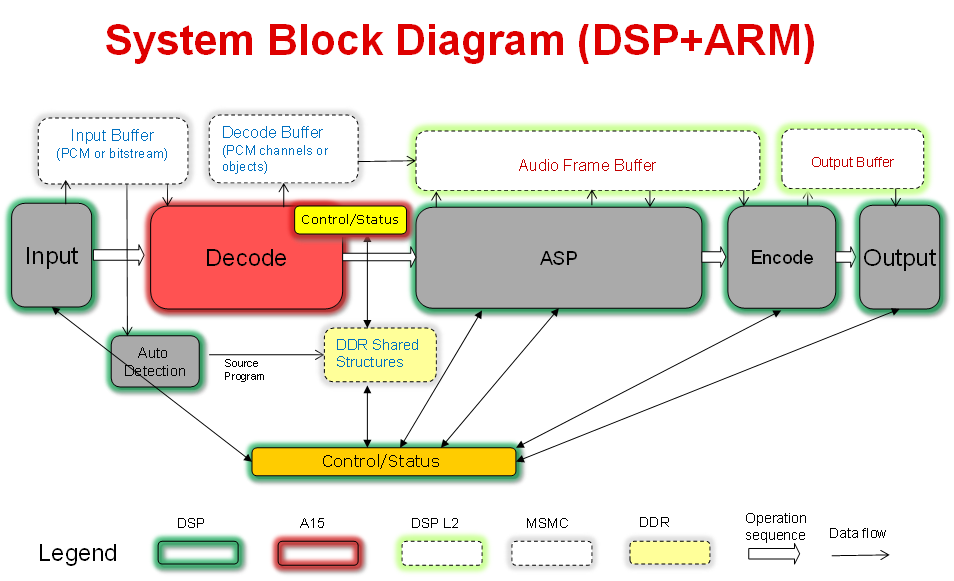{kind=link}
This demo utilizes Processor SDK features/components:
SYS/BIOS application utilizing TI-RTOS features for DSP-C66x core and ARM-A15 core
McASP LLD from PDK for audio input/output
IPC for inter-processor communications between DSP and ARM
UIA for instrumentation logging
9.6.2. Requirements¶
Hardware
Momentum Data Systems (MDS) HDMI repeater kit (optional). Contact contactsales@mds.com for more information.
Software
Code Composer Studio (CCS)
Python 2.7.14 and Sed 4.2.1 for Windows only
9.6.3. How to Run the Demo¶
9.6.3.1. Hardware Setup¶
Setup K2G EVM according to the Quick Start Guide
Setup Audio Daughter Card according to the Quick Start Guide and attach it to the K2G EVM. The Audio Daughter Card connects to the EVM through the JP1 “Audio Expansion” and J12 “Serial Expansion” connectors on EVM.
Connect an analog player output to the ADC_IN0-3 input jacks on the Audio Daughter Card.
Connect a DVD/Blue-Ray player digital output (S/PDIF) to the MOD1 Digital Input (Optical) connector on the Audio Daughter Card.
Connect speakers to DAC_OUT0-3 output jacks on the Audio Daughter Card.
Connect a COM port on PC to UART0 port on K2G EVM using a RS-232 cable.
Connect XDS2xx USB Onboard Debug Probe to a PC USB port using the USB cable delivered with the EVM.

9.6.3.2. Optional Setup for HDMI¶
Connect the MDS HSR41P to the MDS IFB.
Connect HSR41P J4 “Main” header to the IFB J5 “Main” header using the short 26-wire ribbon cable. Ensure the red wire on the ribbon cable is connected between HSR41P J4 Pin1 and IFB J5 Pin1.
Connect HSR41P J7 “Sec” header to the IFB J2 “Sec” header using the short 34-wire ribbon cable. Ensure the red wire on the ribbon cable is connected between HSR41P J7 Pin1 and IFB J2 Pin1.
Connect the MDS IFB to the Audio Daughter Card. Connect IFB J3 “McASP0” header to Audio Daughter Card “I2S Header” using the supplied long 34-wire ribbon cable. Ensure the red wire on the ribbon cable is connected between IFB J3 Pin1 and Audio Daughter Card “I2S Header” Pin1 (note the “I2S Header” is only 32 pins, so the two wires on the ribbon cable opposite Pin1 are unused).
Connect HDMI cable from audio source (e.g. Blu-ray player) to HSR41P J6 “IN”. Connect HDMI cable to audio sink (e.g. HDMI enabled monitor) from HSR41P J8 “HDMI OUT”.
Connect 5V AC to USB power supply to IFB power connector J1.
{kind=link}
9.6.3.3. Software and Tools Setup¶
CCS is required to load the binaries and run the demo. Sed and Python are required for run time reselection of input/output, control and reconfiguration of decoding and/or audio stream procesing, etc. One may choose to run the demo first and then install Sed and Python for run-time reconfiguration.
Download and Install CCS (download link available at Processor SDK download page)
Obtain Sed 4.2.1 from http://gnuwin32.sourceforge.net/packages/sed.htm, executable installer, sed-4.2.1-setup.exe (click on Setup next to “Complete package, except sources” and download will start). Install it to c:/PA_Tools/GnuWin32 (or change installation location in <process-sdk installation root>/demos/performance-audio/src/setup_build_env/setup_env.bat.
Obtain Python 2.7.14 from https://www.python.org/downloads/release/python-2714/ (click on Windows x86 MSI installer, and the installer python-2.7.14.msi will be downloaded automatically). Install it to c:/PA_Tools/Python27 (or change installation location in <process-sdk installation root>/demos/performance-audio/src/setup_build_env/setup_env.bat.
Once Python is installed, open a Command Prompt and go to <process-sdk installation root>/demos/performance-audio/src/setup_build_env. Run setup_env.bat, and then go to <process-sdk installation root>/demos/performance-audio/tools/ and run setup.bat to install PyAlpha dependencies. Note: since tools/setup.bat will download Python packages from the web, one needs to make sure that the proxy environment variables are set properly.
9.6.3.4. Load and Run Pre-built Binaries¶
This demo can be run by loading and running the DSP and ARM binaries through CCS:
Click View -> Target Configurations.
In the Target Configurations window, right click and then click Import Target Configurations.
Browse to <process-sdk installation root>/demos/performance-audio/src/pasrc/test_dsp/targetConfigs, click K2GEVM.ccxml and then click Open.
In the Target Configurations window, right-click on K2GEVM.ccxml and select Launch Selected Configuration.
In the Debug window, right-click on the C66x and select Connect Target. The output from the GEL code invoked on the target connection can be observed in the Console output window. The final line of this output should read “C66xx: GEL Output: DDR3A initialization complete”.
In the Debug window, right-click on the CortexA15 and select Connect Target. The output from the GEL code invoked on the target connection can be observed in the Console output window. The final line of this output should read “CortexA15: GEL Output: A15 non secure mode entered”.
In the Debug Window, click on the C66x. Then open Run->Load->Load Program. In the Load Program window, click on Browse and double click <process-sdk installation root>/demos/performance-audio/prebuilt-binaries/test_dsp.xe66. Then click OK to load the C66x binary.
In the Debug Window, click on the CortexA15. Then open Run->Load->Load Program. In the Load Program window, click on Browse and double click <process-sdk installation root>/demos/performance-audio/prebuilt-binaries/test_arm.xa15fg. Then click OK to load the CortexA15 binary.
In the Debug window, click on the C66x. Then Open Run->Resume to execute the C66x code.
In the Debug window, click on the CortexA15. Then Open Run->Resume to execute the CortexA15 code.
The CIO Console output window should display memory usage statistics. The final line of output should display the memory usage summary for the EXT NC SHM heap.
Default input interface is S/PDIF. Play music on the media player with S/PDIF output. Sound should come out of speakers connected to analog out DAC_OUT0.
Limitations:
If code needs to be reload and rerun, one must terminate the CCS debugging session, power cycle the EVM, and start a new CCS debugging session. Then repeat from step 4 listed above.
9.6.3.5. Run-time Reconfiguration (in Windows only)¶
Please make sure src/setup_build_env/setup_env.bat and tools/setup.bat have both been run to setup the tools path.
Output volume can be changed at run-time via Python scripts through UART:
Open a windows command prompt, go to tools folder and use the following command to change output volume:
python.exe pyalpha -I alpha -h pa_i13_evmk2g_io_a -p COM1 writeVOLControlMasterN(<volume level>), where <volume level> is level adjustment from default in units of 0.5dB. For example, python.exe pyalpha -I alpha -h pa_i13_evmk2g_io_a -p COM1 writeVOLControlMasterN(-24) lowers the level by 12dB from default.
Input interface is S/PDIF by default and can be reslected at run-time (Note: interface can be reselected only when playing is stopped):
Switch to HDMI input:
Stop playing
Issue command to change to HDMI input: python.exe pyalpha -I alpha -h pa_i13_evmk2g_io_a -p COM1 execPAIInHDMI
Play again using digital player with HDMI output
Switch to analog input:
Stop playing
Issue command to change output to ADC slave: python.exe pyalpha -I alpha -h pa_i13_evmk2g_io_a -p COM1 execPAIOutAnalogSlave
Issue command to change input to analog: python.exe pyalpha -I alpha -h pa_i13_evmk2g_io_a -p COM1 execPAIInAnalog
Play again using analog player
Limitations of run-time reconfiguration as of this release:
Input interface reselection can only be done when input is mute.
Once analog input is selected, S/PDIF can NOT be selected anymore. One must reload the code and rerun the demo.
9.6.4. How to Rebuild the Demo¶
The performance audio demo can be rebuilt from the source code, following the instructions given below.
9.6.4.1. Setup Environment Variables in Linux¶
A bash shell script, <process-sdk installation root>/demos/performance-audio/src/setup_build_env/setup_env.sh, can be used to set up the environment variables:
set the TI tools path and performance audio demo path in setup_env.sh properly.
set version numbers of each component to what’s going to be used for the build (default is what’s delivered in PRSDK).
run the shell script using command “source setup_env.sh”.
9.6.4.2. Setup Environment Variables in Windows¶
Batch file <process-sdk installation root>/demos/performance-audio/src/setup_build_env/setup_env.bat can be used to set up the environment variables.
set variable TI_TOOLS_DIR in setup_env.bat properly (default is C:ti).
set version numbers of each component to what’s going to be used for the build (default is what’s delivered in PRSDK).
go to folder <process-sdk installation root>/demos/performance-audio/src/setup_build_env and run setup_env.bat (Note: this script MUST be run in the setup_build_env folder.)
after running setup_env.bat, run setup_paf.bat in the same folder (Note: setup_env.bat MUST be run before setup_paf.bat).
9.6.4.3. Rebuild the Demo¶
Go to source folder: <process-sdk installation root>/demos/performance-audio/src
Issue command “make clean” and “make install” for Linux
Issue command “gmake clean” and “gmake install” for Windows
The rebuilt binaries are placed in src/install/pasdk/debug. They can also be found at src/pasdk/test_dsp/bin/debug and src/pasdk/test_arm/bin/debug
9.6.5. Trouble Shooting¶
Problems may be encountered when setting up or running the demo. Here are some common problems and the corresponding solutions:
Sound doesn’t come out of the speakers:
Make sure the audio daughter card (and HDMI repeater card if used) is connected well. The PDK addon audio loopback test can be run to verify the setup of EVM and audio daughter card.
In CCS Expressions window, enter variable “asipLoopCount1” and check if it is incrementing. If not, terminate the debug session, power cycle the EVM, and restart.
The Python command times out:
Make sure to use UART0 COM port on the EVM. The Python scripts may not work well if J23 USB connector is used for UART communications.
The source code doesn’t build:
Make sure the environment variables are set correctly. The default tools location in setup.env may not be where the tools are installed. Change TI_TOOLS_DIR to where tools and Proc-SDK components are installed.
Python setup can’t install PyAlpha dependencies.
Make sure proxy environment variables, HTTP_PROXY and HTTPS_PROXY, are set properly.
9.7. Big Data IPC Example¶
9.7.1. Introduction¶
High Performance Computing applications and other Data intensive applications often require passing of Big data buffers between the multi-core processors in an SOC.
The Big Data IPC examples are created mainly to show exchange of big data buffers between cores and is part of the Processor SDK RTOS package.
Currently the example named “simple_buffer_example”, captures the details of exchange of big buffers with both host A15 core and a DSP cores.
9.7.2. Architecture Overview¶
The following block diagram shows the various functional blocks used in the example on the cores running TI-RTOS/BIOS.

For the small message IPC, sharedRegion and Heap, the modules in the Standard TI IPC package are used.
The BigDataXlat module, which is part of the example code, provides a high level abstraction to take care of Address translation and Cache sync on the big data buffers.
9.7.3. Simple Buffer example: Program Sequence¶
This section describes the program sequence captured in the example.
The main aim of the overall program is to show the exchange of big data buffers. The sequence is described in words here to sort of walk through the main application code.
Initially, the host sends first message with shared memory init information followed by two more dummy messages to slave core ( all three messages sent in sequence without waiting for reply).
The shared memory region init message conveys the details about the shared memory expected to hold the big data buffers.
Independently, the slave processor receives messages and sends back reply back for each of the messages to the host.
Then the host receives one message from the slave and sends a message with Big data buffer allocated from the Big data heap and filled with an incrementing pattern. (This process is repeated with 10 Big data Buffer messages). Each of these Messages are received by slave and the values in the buffers are updated with a modified incrementing pattern and sent back to the host.
Note the Slave and Host processors checks the expected incrementing pattern for errors.
At this point only 7 Big data buffer messages would have been received. Then the host sends two dummy messages plus one shutdown message to the slave core when receiving the remaining three Big data buffer messages. Totally 10 Big data buffers are exchanged between the cores. The slave core on receiving the shutdown message, shuts itself down and reinitializes itself for future runs.
Then the host receives back the remaining returned messages before shutting down.
Note
The size of the big data buffer is configurable compile time by changing value of the define BIGDATA_SIZE in shared/AppCommon.h
9.7.4. Host Linux example¶
Note
Host linux example is only available starting from Processor SDK 4.0.0 release for AM57xx platform
Under the host_linux directory the simple_buffer_example is implemented for Host A15 running Linux and DSP core running TI-RTOS.
9.7.4.1. Architecture Updates for Linux¶
The following block diagram shows the various functional blocks used in the example on the host running linux.
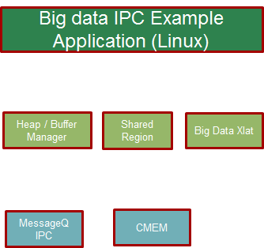The SharedRegion and HeapMem modules are not currently supported for Linux in the TI Standard IPC package.
The example provides these modules with same/similar API implemented for Linux with some limitations.
The CMEM APIs provide user space allocation of contiguous memory for the Big data buffers.
9.7.4.2. How to Run the Example¶
The Processor SDK Linux release includes the pre-built binaries for the host_linux example as part of the tisdk-rootfs-image filesystem.
Step 1 : To run the demo, the first step is to make sure there is no other default applications using the same resources. For example, the following command is needed to disable the default OpenCL applications.
systemctl stop ti-mct-daemon.service
Step 2: Switch the firmware running in the DSP. This can be done by using the following steps. Unbind dsp
echo 40800000.dsp > /sys/bus/platform/drivers/omap-rproc/unbind
Note
May need to unbind all the other cores as well to avoid issues.
Update firmware symbolic link
ln -sf /usr/bin/simple_buffer_example/release/server_dsp.xe66 /lib/firmware/dra7-dsp1-fw.xe66
Bind dsp
echo 40800000.dsp > /sys/bus/platform/drivers/omap-rproc/bind
Step 3: Now the Host side application can be run using the following command
/usr/bin/simple_buffer_example/release/app_host
The DSP side log can be checked by typing the following command to dump the trace.
cat /sys/kernel/debug/remoteproc/remoteproc2/trace0
Here is a sample log.
root@am57xx-evm:~# /usr/bin/simple_buffer_example/release/app_host DSP1
--> main:
[523682.897761] omap_hwmod: mmu0_dsp2: _wait_target_disable failed
[523682.903751] omap-iommu 41501000.mmu: 41501000.mmu: version 3.0
[523682.911797] omap-iommu 41502000.mmu: 41502000.mmu: version 3.0
--> Main_main:
--> App_create:
App_create: Host is ready
<-- App_create:
--> App_exec:
CMEM_init success
CMEM_getPool success
CMEM_allocPool success: Allocated buffer 0xaa641000
SharedRegion_setup success
App_taskFxn: SR_1, base 0xaa641000, len=1000000
HeapMem_setup success
HeapMem_create success
App_taskFxn: SR_1 heap, totalSize=16777216,totalFreeSize=16777216,largestFreeSize=16777216
App_taskFxn: SR_1 heap, buf=0x0xaa641080,size=16777216
App_exec: sending message 1
Shared memory phys Addr ffffffffa0000000
App_exec: sending message 2
App_exec: sending message 3
App_exec: message received 1
App_exec: Preparing message 4
App_exec: Sending message 4
App_exec: message received 2
App_exec: Preparing message 5
App_exec: Sending message 5
App_exec: message received 3
App_exec: Preparing message 6
App_exec: Sending message 6
App_exec: message received 4
App_exec: Preparing message 7
App_exec: Sending message 7
App_exec: message received 5
App_exec: Preparing message 8
App_exec: Sending message 8
App_exec: message received 6
App_exec: Preparing message 9
App_exec: Sending message 9
App_exec: message received 7
App_exec: Preparing message 10
App_exec: Sending message 10
App_exec: message received 8
App_exec: Preparing message 11
App_exec: Sending message 11
App_exec: message received 9
App_exec: Preparing message 12
App_exec: Sending message 12
App_exec: message received 10
App_exec: Preparing message 13
App_exec: Sending message 13
App_exec: message received 11
App_exec: Preparing message 14
App_exec: Sending message 14
App_exec: message received 12
App_exec: Preparing message 15
App_exec: Sending message 15
App_exec: message received 13
App_exec: Preparing message 16
App_exec: Sending message 16
App_exec: message received: 14
App_exec: message received: 15
App_exec: message received: 16
App_exec: Data check clean
<-- App_exec: 0
--> App_delete:
<-- App_delete:
<-- Main_main:
Host: Test Passed
<-- main:
root@am57xx-evm:~#
root@am57xx-evm:~# cat /sys/kernel/debug/remoteproc/remoteproc2/trace0
[ 0.000] 18 Resource entries at 0x95000000
[ 0.000] [t=0x0002122e] xdc.runtime.Main: --> main:
[ 0.000] registering rpmsg-proto:rpmsg-proto service on 61 with HOST
[ 0.000] [t=0x003c5d7b] xdc.runtime.Main: NameMap_sendMessage: HOST 53, port=61
[ 0.000] [t=0x003d5186] xdc.runtime.Main: --> smain:
[ 0.000] [t=0x003e8259] Server: Server_create: server is ready
[ 0.000] [t=0x003ecc97] Server: <-- Server_create: 0
[ 0.000] [t=0x003f04a4] Server: --> Server_exec:
[ 51.571] [t=0x00000008:a56e6a9a] Server: Message received...1
[ 51.571] [t=0x00000008:a56f9b77] Server: Shared region entry configured...
[ 51.571] [t=0x00000008:a5700cb1] Server: Server_exec: processed id 1, cmd=0x1
[ 51.571] [t=0x00000008:a570aea5] Server: Message received...2
[ 51.571] [t=0x00000008:a57119fd] Server: Server_exec: processed id 2, cmd=0x0
[ 51.571] [t=0x00000008:a571b1e9] Server: Message received...3
[ 51.571] [t=0x00000008:a5721eac] Server: Server_exec: processed id 3, cmd=0x0
[ 51.571] [t=0x00000008:a5755f6b] Server: Message received...4
[ 51.573] [t=0x00000008:a583e61b] Server: Server_exec: processed id 4, cmd=0x2
[ 51.573] [t=0x00000008:a584a087] Server: Message received...5
[ 51.574] [t=0x00000008:a592c2cc] Server: Server_exec: processed id 5, cmd=0x2
[ 51.574] [t=0x00000008:a5937d8c] Server: Message received...6
[ 51.575] [t=0x00000008:a5a19aeb] Server: Server_exec: processed id 6, cmd=0x2
[ 51.575] [t=0x00000008:a5a2543d] Server: Message received...7
[ 51.577] [t=0x00000008:a5b07d15] Server: Server_exec: processed id 7, cmd=0x2
[ 51.577] [t=0x00000008:a5b137c0] Server: Message received...8
[ 51.578] [t=0x00000008:a5bf5d83] Server: Server_exec: processed id 8, cmd=0x2
[ 51.578] [t=0x00000008:a5c019cc] Server: Message received...9
[ 51.579] [t=0x00000008:a5ce3dca] Server: Server_exec: processed id 9, cmd=0x2
[ 51.579] [t=0x00000008:a5cef75e] Server: Message received...10
[ 51.581] [t=0x00000008:a5dd247a] Server: Server_exec: processed id 10, cmd=0x2
[ 51.581] [t=0x00000008:a5dde2d9] Server: Message received...11
[ 51.582] [t=0x00000008:a5ec04df] Server: Server_exec: processed id 11, cmd=0x2
[ 51.582] [t=0x00000008:a5ecc1a3] Server: Message received...12
[ 51.583] [t=0x00000008:a5fae91c] Server: Server_exec: processed id 12, cmd=0x2
[ 51.583] [t=0x00000008:a5fba4c6] Server: Message received...13
[ 51.585] [t=0x00000008:a609d1c1] Server: Server_exec: processed id 13, cmd=0x2
[ 51.585] [t=0x00000008:a60a8dd4] Server: Message received...14
[ 51.585] [t=0x00000008:a60af96e] Server: Server_exec: processed id 14, cmd=0x0
[ 51.585] [t=0x00000008:a60b9229] Server: Message received...15
[ 51.585] [t=0x00000008:a60bffd3] Server: Server_exec: processed id 15, cmd=0x0
[ 51.585] [t=0x00000008:a60e179b] Server: Message received...16
[ 51.585] [t=0x00000008:a60e9727] Server: Server_exec: processed id 16, cmd=0x2000000
[ 51.585] [t=0x00000008:a60f3fb7] Server: Server_exec: Data check clean
[ 51.585] [t=0x00000008:a60fb280] Server: <-- Server_exec: 0
[ 51.585] [t=0x00000008:a6101708] xdc.runtime.Main: DSP: Test Passed
[ 51.585] [t=0x00000008:a6109170] Server: --> Server_delete:
[ 51.585] [t=0x00000008:a6114fa2] Server: <-- Server_delete: 0
[ 51.586] [t=0x00000008:a6127d48] Server: Server_create: server is ready
[ 51.586] [t=0x00000008:a612ff93] Server: <-- Server_create: 0
[ 51.586] [t=0x00000008:a613620c] Server: --> Server_exec:
root@am57xx-evm:~#
9.7.4.3. How to Re-Build the example¶
Also source code for the example is included in the Processor SDK Linux release. Once installed the source files can be found in the directory example-applications/big-data-ipc-demo-linux_<version>.
Prerequisites: Also need to have the Processor SDK RTOS release installed to build the DSP side RTOS image. See the instruction in RTOS SDK Getting Started Guide
The example can be rebuilt by using the following commands.
export TI_RTOS_PATH=<TI_RTOS_PROC_SDK_INSTALL_DIR>
make big-data-ipc-demo
(e.g)
export TI_RTOS_PATH=$HOME/ti
make big-data-ipc-demo
The test binaries can be installed into the default filesystem using the command.
make big-data-ipc-demo_install
Note
Rules.make file can be edited to change the DESTDIR where the binaries will be installed.
9.7.4.3.1. Source files¶
The source files for the example are located at
<processor-sdk_linux-<platform>-<version>/example-applications/big-data-ipc-demo-linux-<version>/host_linux/simple_buffer_example.
The host directory and dsp directory has the corresponding sources. The shared folder contains some common sources. The main sequence for big data IPC can be followed by looking at host/App.c and dsp/Server.c. |
9.7.4.3.2. Memory layout details¶
The DSP side memory layout can be found in the file host_linux/simple_buffer_example/shared/<platform>/config.bld. Also note the addition of the following section in host_linux/simple_buffer_example/shared/<platform>/rsc_table_dsp.h. Please note the reserved carve-out in the DSP resource table
Note
Make sure this matches what is configured in the linux device tree
define DSP_CMEM_IOBUFS 0xA0000000
define PHYS_CMEM_IOBUFS 0xA0000000
define DSP_CMEM_IOBUFS_SIZE (SZ_1M * 192)
The CMEM area allocated from this region is used for the big data buffers.
9.7.5. Host RTOS example¶
Under the host_bios directory the simple_buffer_example is implemented for Host A15 and DSP both running TI RTOS/BIOS.
9.7.5.1. How to Run the Example¶
The Processor SDK RTOS release include the pre-built binaries for the host_bios example under:
processor_sdk_<platform>_<version>/demos/bigdataipc/prebuilt-binaries/<board-name>/simple_buffer_example/release/
Also for the platforms that support boot through SDcard, pre-built boot image or ‘app’ bootable through SBL is located under:
processor_sdk_<platform>_<version>/demos/bigdataipc/prebuilt-binaries/bootimages/host_bios/simple_buffer_example/<board-name>/app
9.7.5.1.1. AM57xx & K2G boards¶
Pre-requisites
1. Create a bootable SDCard using the procedure here: Creating SD card in Windows or Create SD card in Linux
2. Connect the UART on the hardware to the Host. ( Configure the terminal/console to Baud Rate= 115200, Data Bits= 8 , Parity= None, Flow Control= Off )
Procedure
Copy/overwrite the pre-built boot image ‘app’ corresponding to the board to a bootable SD Card
Insert the SD card into the board
Boot/Reboot the board
The application will be loaded and run automatically and the “Host: Test Passed” message will be printed to the UART console.

9.7.5.1.2. K2H, K2K, K2L, K2E Boards¶
The prebuilt elf binaries of Host and DSP images can be loaded through CCS to the appropriate cores and run.
9.7.5.2. How to Re-Build the Example¶
The bigdata ipc examples can be built from the Processor SDK top level directory using the following steps
1. Build environment setup
Linux host
cd <processor_sdk_<platform>_<version>
export SDK_INSTALL_PATH=<Base directory where Processor SDK is installed>
source setupenv.sh
Windows host
cd <processor_sdk_<platform>_<version>
set SDK_INSTALL_PATH=<Base directory where Processor SDK is installed>
setupenv.bat
2. Build
make bigdataipc_examples
This creates the elf binaries for both the host and DSP cores. And the binaries can be installed using
make bigdataipc_examples_install
(NOTE: The above command installs the elf binaries under the prebuilt-binaries location mentioned above. Need to convert the prebuilt elf binaries into bootable images refer to Processor SDK RTOS Boot)
Source files
The source files for the example are located at
<processor_sdk_<platform>_<version>/demos/bigdataipc/host_bios/simple_buffer_example.
The host directory and dsp directory has the corresponding sources. The shared folder contains some common sources. The main sequence for big data IPC can be followed by looking at host/App.c and dsp/Server.c.
9.8. TI-RTOS Kernel Example¶
9.8.1. Overview¶
The SYS/BIOS examples gets user started with development of code using a real-time operating system. These are simple examples that does not get into details of software components provided in the SDK.
9.8.2. ARM Cortex-A53¶
The hello example serves as a basic sanity check program for SYS/BIOS. It demonstrates how to print the string ‘hello world’ to stdout. As a sample we will use the AM65x device to describe the steps for the Cortex-A53.
Note
For future Device Support Package releases, the Hello World example for the Cortex-A53 will be added to CCS as an out-of-box experience.
1. Create a work space folder (/ti/am65x_am53_hello_workspace) under ti folder to be used for Hello Example project, and start CCS. You may be prompted with New Products Discovered, so select all and click on Finish
2. In CCS, go to File –> New –> CCS Project
3. Enter a project name and configure the new CCS project as follows:
Target: GPEVM_AM65x
Cortex A
Compiler: GNU v7.2.1 (Linaro aarch64) (or higher)
Device Endianness: little
Linker Command File: (PDK INSTALL PATH)/packages/ti/build/am65xx/linker_a53.lds
4. Select the Empty Project (with main.c) template and click Finish.
5. Remove startup_ARMCA53.S from the project. Add the file sysbios_a53.cfg located in the folder (PDK INSTALL PATH)/packages/ti/build/am65xx/.
You will be prompted to enable XDCtools, click yes.
6. In Project Properties –> CCS General –> Products, set Target to gnu.targets.arm.A53F and Platform to ti.platforms.cortexA:AM65X. Uncheck all products except for SYS/BIOS and XDCtools. Refer to the Release Notes for the recommended package verisons. Click Apply and Close.
7. Add the file InitMmu.c located under (IPC INSTALL PATH)/examples/AM65XX_bios_elf/ex02_messageq/host to the project.
8. In Project Properties –> CCS Build –> XDCtools –> Package Repositories, add the path ${BIOS_CG_ROOT}/packages
9. In Project Properties –> GNU Linker –> Libraries, add the gcc and rdimon libraries, and the library search path “${xdc_find:gnu/targets/arm/libs/install-native/arm-none-eabi/lib:${ProjName}}”
10. In Project Properties –> GNU Linker –> Basic, check the option “Do not use the standard system startup files when linking (-nostartfiles).”
11. Navigate to Project Properties –> GNU Compiler –> Debugging and uncheck “Do not emit DWARF additions beyong selected version” and set the gdwarf version to 2 or lower.
12. Finally, add the following code to main.c and build the project.
#include "stdio.h"
int main(void)
{
printf("hello world");
return 0;
}
13. Launch the target configuration using the appropriate emulator to connect to AM65x EVM as described in the AM65x EVM Hardware Setup Guide.
14. Right click on DMSC_Cortex_M3_0 and click Connect Target.
15. Connect to the CortexA53_0_0 core. Load and run Hello Example out file. You should see Hello World string displayed on console window.
9.8.3. ARM Cortex-A15¶
The hello example serves as a basic sanity check program for SYS/BIOS. It demonstrates how to print the string ‘hello world’ to stdout. As a sample we will use the AM572x device to describe the steps. The same steps can be used for create hello world examples for A15 cores in Keystone 2 family of devices.
Note
The K2G, K2E and K2H devices, can be located under Unclassified devices in the Resource Explorer. Refer below Screenshot for Keystone II

1. Create a work space folder (tiam_572x_hello_workspace) under ti folder to be used for Hello Example project, and start CCS. You may be prompted with New Products Discovered, so select all and click on Finish
On CCS click View –> Resource Explorer (Examples).
3. On SYS/BIOS scroll down to AM572X –> Cortex A –> Generic Example –> click on Hello Example.

4. To import Hello Example, on the right window click on step 1. Import The Example to CCS Project.
On New CCS Project window enter project name and then click Next.

6. On RSTC window select platform name: ti.platforms.evmAM572X and check that the target is set to gnu.targets.arm.A15F
Click Finish. Your project should show up on Project Explorer window.
8. To get log message to print on console add this variable to hello.cfg file:
var SemiHostSupport = xdc.useModule('ti.sysbios.rts.gnu.SemiHostSupport');
Note
You also need to replace the nosys library in linker with rdimon which is the Semi-Hosting enabled BSP library.
Right click on project –> Show Build Settings… –> Build –> GNU Linker –> Libraries
9. Build Hello Example project by Right click on Hello Project and click Build project.
10. Create new target configuration (if one doesn`t exist) as described in here Create Target Configuration File for EVM
11. Right click on the target configuration and Launch target configurations.
Right click CortexA15_0 and connect target.
13. Load and run Hello Example out file. You should see Hello World string displayed on console window.
9.8.4. ARM Cortex-A9¶
The hello example serves as a basic sanity check program for SYS/BIOS. It demonstrates how to print the string ‘hello world’ to stdout.
1. Create a work space folder (\ti\am_437x_hello_workspace) under ti folder to be used for Hello Example project, and start CCS. You may be prompted with New Products Discovered, so select all and click on Finish
On CCS click View –> Resource Explorer (Examples).
3. On SYS/BIOS scroll down to AM4378 –> Cortex A –> Generic Example –> click on Hello Example.

4. To import Hello Example, on the right window click on step 1. Import The Example to CCS Project.
On New CCS Project window enter project name and then click Next.

6. On RSTC window select platform name: ti.platforms.evmAM437X and check that the target is set to gnu.targets.arm.A9F
Click Finish. Your project should show up on Project Explorer window.
8. To get log message to print on console add this variable to hello.cfg file:
var SemiHostSupport = xdc.useModule('ti.sysbios.rts.gnu.SemiHostSupport');
Note
You also need to replace the nosys library in linker with rdimon which is the Semi-Hosting enabled BSP library.
Right click on project –> Show Build Settings… –> Build –> GNU Linker –> Libraries
9. Build Hello Example project by Right click on Hello Project and click Build project.
10. Create new target configuration (if one doesn`t exist) as described here Create Target Configuration File for EVM
11. Right click on the target configuration and Launch target configurations.
Right click CortexA9_0 and connect target.
13. Load and run Hello Example out file. You should see Hello World string displayed on console window.
9.8.5. ARM Cortex-A8¶
The hello example serves as a basic sanity check program for SYS/BIOS. It demonstrates how to print the string ‘hello world’ to stdout.
1. Create a work space folder (\ti\am_335x_hello_workspace) under ti folder to be used for Hello Example project, and start CCS. You may be prompted with New Products Discovered, so select all and click on Finish
2. On CCS click View –> Resource Explorer (Examples).
3. On SYS/BIOS scroll down to AM3352 –> Cortex A –> Generic Example –> click on Hello Example.

4. To import Hello Example, on the right window click on step 1. Import The Example to CCS Project.
5. On New CCS Project window enter project name and then click Next.
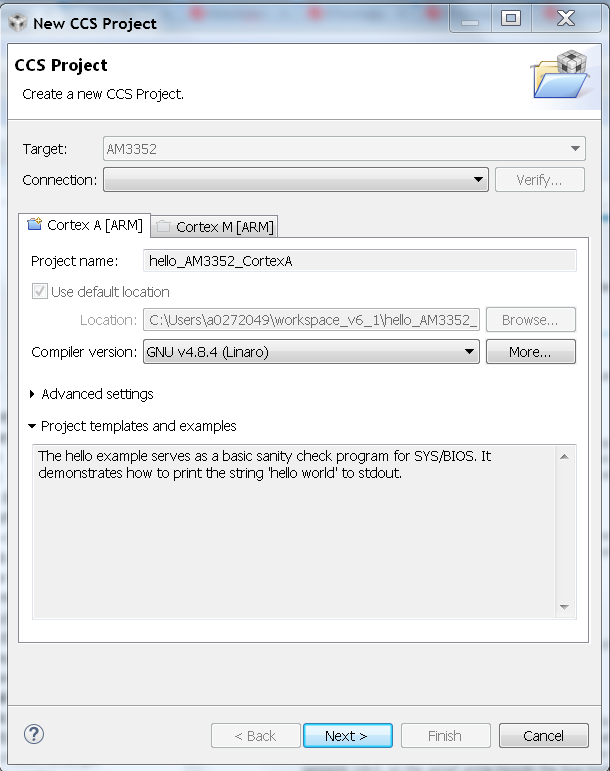6. On RSTC window select platform name: ti.platforms.evmAM335X and check that the target is set to gnu.targets.arm.A8F
7. Click Finish. Your project should show up on Project Explorer window.
8. To get log message to print on console add this variable to hello.cfg file:
var SemiHostSupport = xdc.useModule('ti.sysbios.rts.gnu.SemiHostSupport');
Note
You also need to replace the nosys library in linker with rdimon which is the Semi-Hosting enabled BSP library.
Right click on project –> Show Build Settings… –> Build –> GNU Linker –> Libraries
9. Build Hello Example project by Right click on Hello Project and click Build project.
10. Create new target configuration (if one doesn`t exist) as described here Create Target Configuration File for EVM
11. Right click on the target configuration and Launch target configurations.
Right click CortexA8_0 and connect target.
13. Load and run Hello Example out file. You should see Hello World string displayed on console window.
9.8.6. ARM Cortex-R5¶
The hello example serves as a basic sanity check program for SYS/BIOS. It demonstrates how to print the string ‘hello world’ to stdout.
1. Create a work space folder (/ti/am65x_r5_hello_workspace) under ti folder to be used for Hello Example project, and start CCS. You may be prompted with New Products Discovered, so select all and click on Finish
2. On CCS click View –> Resource Explorer Classic.
3. On SYS/BIOS scroll down to AM65x - Cortex A53 –> AM6548 –> Cortex R –> TI Target Examples –> Generic Examples –> click on Hello Example.

4. To import Hello Example, on the right window click on step 1. Import The Example to CCS Project.
5. On New CCS Project window enter project name, set the device endianness to little, and add the linker command file located at (PDK INSTALL PATH)/packages/ti/build/am65xx/linker_r5_sysbios.lds and click Next.
6. On RSTC window, make sure the correct XDCtools version is selected and select the correct versions of the SYS/BIOS and PDK packages.
7. Set the platform to ti.platforms.cortexR:AM65X and set the target to ti.targets.arm.elf.R5F.

Click Finish. Your project should appear in Project Explorer window.
Launch the target configuration using the appropriate emulator to connect to AM65x EVM as described in the AM65x EVM Hardware Setup Guide.
Right click on DMSC_Cortex_M3_0 and click Connect Target.
Connect to the MCU_PULSAR_Cortex_R5_0 core. Load and run Hello Example out file. You should see Hello World string displayed on console window.
9.8.7. ARM Cortex-M4¶
The hello example serves as a basic sanity check program for SYS/BIOS. It demonstrates how to print the string ‘hello world’ to stdout.
1. Create a work space folder (/ti/am_572x_hello_workspace) under ti folder to be used for Hello Example project, and start CCS. You may be prompted with New Products Discovered, so select all and click on Finish
2. On CCS click View –> Resource Explorer (Examples).
3. on SYS/BIOS scroll down to AM572X –> Cortex M –> Generic Example –> click on Hello Example.

4. To import Hello Example, on the right window click on step 1. Import The Example to CCS Project.
Go to Project Explorer window and click on project properties.
6. On RSTC window select platform name: ti.platforms.evmAM572X and check that the target is set to gnu.targets.arm.elf.M4
7. Click Finish. Your project should show up on Project Explorer window.
8. Build Hello Example project by Right click on Hello Project and click Build project.
9. Launch target configurations using appropriate emulator to connect to AM572X EVM.
10. Right click CortexA15_0 and connect target. From the Scripts menu select AM572x Multicore Initialization->IPU1SSClkEnable_API.
11. Connect to the Cortex_M4_IPU1_C0. Load and run Hello Example out file. You should see Hello World string displayed on console window.
9.8.8. DSP C66x¶
The hello example serves as a basic sanity check program for SYS/BIOS. It demonstrates how to print the string ‘hello world’ to stdout. As a sample we will use the AM572x device to describe the steps but the same steps can be used for create hello world examples for C66x cores in Keystone I and Keystone 2 family of devices.
Note
The C66x examples corresponding Keystone I devices can be located under C66x Multi-core DSP devies in the Resource Explorer. Refer below screenshot
Note
The K2G, K2E and K2H devices, can be located under Unclassified devices in the Resource Explorer. Refer below screen shot
1. Create a work space folder (tiam_572x_hello_workspace) under ti folder to be used for Hello Example project, and start CCS. You may be prompted with New Products Discovered, so select all and click on Finish
On CCS click View –> Resource Explorer (Examples).
3. on SYS/BIOS scroll down to AM572X –> C66x –> Generic Example –> click on Hello Example.
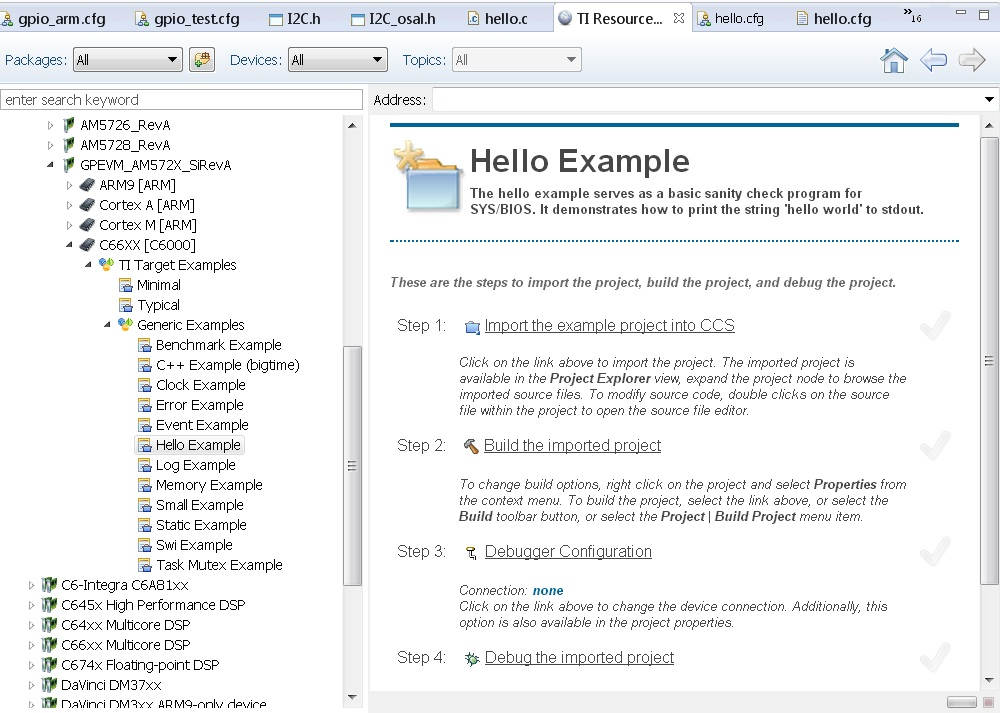4. To import Hello Example, on the right window click on step 1. Import The Example to CCS Project.
On New CCS Project window enter project name and then click Next.
6. On RSTC window select platform name: ti.platforms.evmAM572X and check that the target is set to ti.targets.elf.C66 (Auto populated)
Click Finish. Your project should show up on Project Explorer window.
8. Build Hello Example project by Right click on Hello Project and click Build project.
10. Create new target configuration (if one doesn`t exist) as described here.
11. Right click on the target configuration and Launch target configurations.
12. Right click CortexA15_0 and connect target. From the Scripts menu select AM572x Multicore Initialization->DSP1SSClkEnable_API.
13. Route the GPTimer5 suspend ctrl signal to the DSP using the Scripts menu GP timer Suspend Ctrl -> GPTimer5SuspendCtl_DSP1SS_BIOS as described here.
14. Connect to C66x_DSP1 Load and run Hello Example out file. You should see Hello World string displayed on console window.
9.8.9. DSP C674x¶
The hello example serves as a basic sanity check program for SYS/BIOS. It demonstrates how to print the string ‘hello world’ to stdout. As a sample we will use the C6748 device to describe the steps but the same steps can be used for create hello world examples for C674x cores in OMAPL1x/DA8x family of devices.
Note
Locate the appropriate device that you are using to make sure the correct SYSBIOS platform definiition gets used in the build
1. Create a work space folder ( Eg. tirtos_hello_workspace) that can be used for Hello Example project, and start CCS. You may be prompted with New Products Discovered, so select all and click on Finish Note: at this stage the version of SYSBIOS and corresponding dependencies are assumed to be discovered by CCS. If not please follow the steps described here: Discovering_SDK_products
On CCS click View –> Resource Explorer Classic (Examples).
3. on SYS/BIOS scroll down to C6748 /OMAPL1x and select –> C674x –> Generic Example –> click on Hello Example.
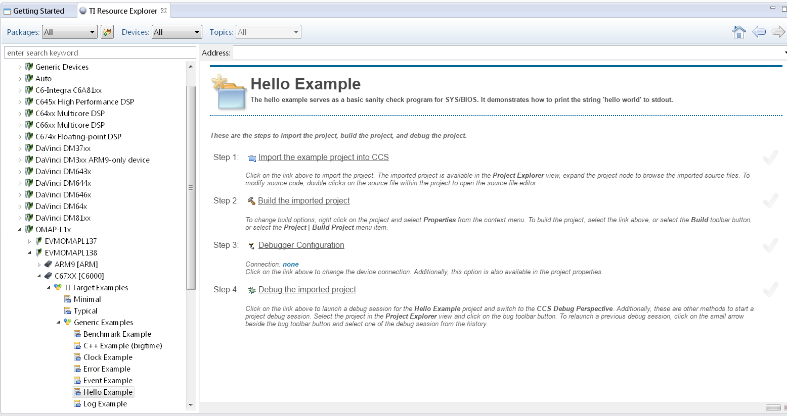4. To import Hello Example, on the right window click on step 1. Import The Example to CCS Project.
On New CCS Project window enter project name and then click Next.

6. On RSTC window select platform name: ti.platforms.evmc6748 and check that the target is set to ti.targets.elf.C674 (Auto populated)

Click Finish. Your project should show up on Project Explorer window.
8. Build Hello Example project by Right click on Hello Project and click Build project.
10. Create new target configuration (if one doesn`t exist) as described here.
11. Right click on the target configuration and Launch target configurations.
12. Developers can Connect to the C674x on OMAPL137/C6747/C6748 can connect directly to the DSP. For OMAPL138 device, you will need to connect to the ARM as this is ARM master boot device and ARM needs to power up the DSP You should see the following log in the Console
C674X_0: Output: Target Connected.
C674X_0: Output: ---------------------------------------------
C674X_0: Output: Memory Map Cleared.
C674X_0: Output: ---------------------------------------------
C674X_0: Output: Memory Map Setup Complete.
C674X_0: Output: ---------------------------------------------
C674X_0: Output: PSC Enable Complete.
C674X_0: Output: ---------------------------------------------
C674X_0: Output: PLL0 init done for Core:300MHz, EMIFA:25MHz
C674X_0: Output: DDR initialization is in progress....
C674X_0: Output: PLL1 init done for DDR:150MHz
C674X_0: Output: Using DDR2 settings
C674X_0: Output: DDR2 init for 150 MHz is done
C674X_0: Output: ---------------------------------------------
13. Connect to C674x_DSP1 Load and run Hello Example out file. You should see Hello World string displayed on console window.

9.8.10. Usage Notes¶
After execution of the hello world examples on the core, the CCS Editor may report “Can’t find a source file” error messages when you pause or the application exits/aborts after completion. This occurs due to source files from SYSBIOS or XDC packages not being in the default search path of the CCS Editor. when you run into this issue, you can navigate to the file using Locate file option in the Editor. Once you provide the location the CCS Editor will be able to locate all the other required files from that package based on relative path.
For example, when running SYS/BIOS Hello Example using AM57x-GP EVM if you see the message
Can't find a source file at "/db/ztree/library/trees/xdctargets/xdctargets-i02/src/gnu/targets /arm/rtsv7A/syscalls.c"
Locate the file or edit the source lookup path to include its location. The above file is located under file path ${PROC_SDK_DIR}\bios_6_42_02_29\packages\gnu\targets\arm\rtsv7A
You can also prevent these issues by adding the Processor SDK components to file search path under Windows->Preferences options in CCS GUI.
9.8.11. Known Issues¶
SYS/BIOS examples for Cortex-A15 generate linker errors due to the FPU related flags
Some versions of CCS are impacted by linker setting used in CCS RTOS templates and may need some manual modification to set the correct -mfpu, -mcpu and -march. If you are seeing VFP errors in the link step, you are most likely running into this issue. To correct this issue please check the resolution here: https://e2e.ti.com/support/development_tools/code_composer_studio/f/81/t/539973
9.9. No OS (Bare Metal) Example¶
9.9.1. Overview¶
The bare-metal examples gets user started with development of code without an operating system. These are simple examples that does not get into details of software components provided in the SDK. Consequently, make sure there are no SD cards installed on the EVM with an OS prior to exploring the following examples.
If you face any problems with CCS or JTAG, try these troubleshooting steps.
9.9.2. ARM Cortex-A53¶
In this article, we take a look at creating bare-metal hello world examples for the Cortex-A53 core in CCS. We will be using the AM654x device as an example.
Note
For future Device Support Package releases, the Hello World examples will be added to CCS as an out-of-box experience.
1. Start CCS and create a workspace for generating the project.
2. Navigate to File -> New -> CCS Project.
3. Select Target as AM65x - Cortex A53 and GPEVM_AM65x as shown in the image below.
4. Select Cortex A setting in the options below and provide a name for the project. Use the default advanced settings for the project. Select GNU v7.2.1 (Linaro aarch64) (or higher) for the Compiler Version. Under Tool-chain, for the Linker Command file, select the file (PDK INSTALL PATH)/packages/ti/build/am65xx/linker_a53.lds.
Under Project templates and examples, select Empty Project (with main.c).
Click Finish after you are done to allow CCS to auto generate the project from the template.

5. The generated CCS project contains source file main.c, ARM assembly code startup_ARMCA53.S and a linker command file AM65X.lds. Remove startup_ARMCA53.S and AM65X.lds from the project.
6. Add the following linker command file to the project.
(PDK INSTALL PATH)/packages/ti/build/am65xx/linker_a53.lds
7. Modify main.c to include the following:
/* Header files */
#include <stdint.h>
#include "stdio.h"
int main(void)
{
printf("Hello World\n");
while(1);
}
Navigate to Project Properties -> CCS Build -> GNU Linker and add “Entry” to the “Set start address” field.
9. Navigate to CCS Build -> GNU Linker -> Libraries and add the following libraries.
ti.csl.init.aa53fg
ti.csl.aa53fg
rdimon
stdc++
gcc
c
m
10. Add the following library search path.
(PDK INSTALL PATH)/ti/csl/lib/am65xx/a53/release
11. Save all changes, and right click on the project and select Build Project to build the project and generate hello_world.out.
12. Launch the target configuration using your emulator to connect to the AM65x EVM as described in the Processor SDK RTOS Getting Started Guide.
13. Right click on DMSC_Cortex_M3_0 and click connect to target. After connecting to the M3, right click on CortexA53_0_0 and connect to it.
14. Load and run hello_world.out example file on the Cortex-A53. You should see a Hello_world string displayed in the CCS console window.

9.9.3. ARM Cortex-A15¶
In this article, we take a look at creating bare-metal hello world examples for Cortex A15 core using pre-built templates in CCS. As a sample we will use the AM572x device to describe the steps but the same steps can be used for create hello world examples for Cortex A15 cores in the Keystone 2 family of devices.
Note
Only major difference between A15 examples for AM572x and Keystone 2 is that the Keystone 2 device contain MSMC memory instead of OCMC memory as the shared memory.
For K2G devices, the hello world template will be created with the .lds file that specifies MSMC and DDR memory sections. For K2E and K2H, the CCS template doesn`t populate the .lds file. K2H & K2E users can choose to use 66AK2G02.lds located at ccsv6ccs_basearminclude as reference to add .lds file to their hello world projects.
Start CCS and create a work space for generating the project.
Click on File menu option and select New–> CCS Project.
3. Select Target as AM572x -Cortex A15 and GPEVM_AM572x as shown in the image
4. Select Cortex A setting in the options below and provide name of the project as “hello_world” and use default Advanced settings for the project. If the Default settings uses “TI ARM compiler 5.x.x” switch to GNU Linaro 4.8.4 (or higher) tool chain for A15 and check the build little endian ELF binary for the A15 core. Under Project templates and examples, select Basic Examples-> Hello World
Click Finish after you are done to allow CCS to auto generate the project from the template Basic Examples-> Hello World.
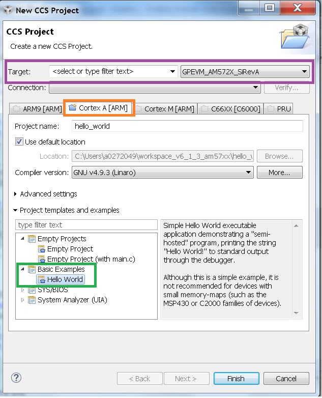5. The generated CCS project contains source file main.c, ARM assembly code startup_ARMCA15.S and a linker command file AM572x.lds. Please modify the main.c file by adding the following highlighted code lines and save main.c file.
/*
* hello.c
*/
#include <stdio.h>
int main(void) {
printf("Hello_world\n");
return 0;
}
Note
For Keystone2 users, the startup_ARMCA15.S and .lds file is not auto populated by CCS. To add these file, right click the project and add files and locate the 66AK2Gxx.lds and startup_ARMCA15.S under the file path ccsvX/ccs_base/arm/include and add them to the project
6. Ensure that CCSv6 generated linker command file AM572x.lds contains the following Memory configurations.
MEMORY
{
OCMC_RAM1 : o = 0x40300000, l = 0x00080000 /* 512kB L3 OCMC RAM1 */
OCMC_RAM2 : o = 0x40400000, l = 0x00100000 /* 1MB L3 OCMC RAM2 */
OCMC_RAM3 : o = 0x40500000, l = 0x00100000 /* 1MB L3 OCMC RAM3 */
DDR0 : o = 0x80000000, l = 0x40000000 /* 1GB external DDR Bank 0 */
DDR1 : o = 0xC0000000, l = 0x40000000 /* 1GB external DDR Bank 1 */
}
Note
For Keystone 2 devices, replace all the OCMC_RAM# regions in the lds file and replace it with MSMC memory section as shown below. Refer to 66AK2G02.lds file in ccs installation under directory path ccsv6ccs_basearminclude
MSMC : o=0x0c000000, l = 0x00600000 /* 6MB Muticore shared memory */
Note
The .lds file expects users to provide STACKSIZE and HEAPSIZE from linker settings. To provide these settings got to Build Settings GNU Linker add the following to the Symbols section. Keystone II devices require this to be done explicitly in the linker settings
STACKSIZE=10000
HEAPSIZE=400
7. Right click on the project and select Build Project, to build the project and generate hello_world.out.
8. Launch target configuration using your emulator to connect to AM572X EVM as described in the Processor SDK RTOS Getting Started Guide.
Right click CortexA15_0 and select connect target.
10. Initialize DDR configuration. On CCS –> Scripts –> DDR configurations –> AM572_DDR3_532MHz_config
11. Load and run hello_world.out example file. You should see Hello_world string displayed on CCS console window.

Note
If the example does not load correctly in the first attempt, reload and ensure ARM core starts at main.
If the ARM loads correctly but you don`t see any output then check to see if the GNU linker is linking to Semihosting library (librdimon) in the linker setting. If it is not linked go to GNU linker settings in CCS project and add “rdimon” to the libraries that are linked
9.9.4. ARM Cortex-A9¶
Start CCSv6 and create a work space for generating the project.
Note
CCSv6.1.1 doesn`t contain a hello world project template for Cortex A9 core using GNU Linaro 4.8.x tool chain. Due to code compatibility of Cortex A8 and cortex A9 platforms, We recommend that you create a project for Cortex A8 platform like AM335x using the GNU Linaro tool chain and then use the code to test hello world application on the Cortex A9 on the AM437x platform. If you wish to use TI ARM compiler 5.2.x, then you can use the default hello world template in CCSv6 for the Cortex A9 on AM437x
2. Click on File menu option and select New–> CCS Project. Steps assume that user is using GN Linaro tool chain for Cortex A9.
3. Select Target as AM33xx -Cortex A8 and appropriate target Board setting as shown in the image
4. Select Cortex A8 setting in the options below and provide name of the project as “hello_world_a9” and use default Advanced settings for the project. If the Default settings uses “TI ARM compiler 5.x.x” switch to GNU Linaro 4.8.4 (or higher) tool chain for A9 and check the build little endian ELF binary for the A9 core. Click Finish after you are done to allow CCS to auto generate the project from the template Basic Examples-> Hello World.

5. The generated CCS project contains source file main.c, ARM assembly code startup_ARMCA8.S and a linker command file AM335x.lds. The startup file does some basic setup and there is no difference between A8 and A9, so it can be used directly on A9 target. Ensure the main.c file contains the following code
/*
* hello.c
*/
#include <stdio.h>
int main(void) {
printf("Hello_world\n");
return 0;
}
Ensure that CCSv6 generates the linker command file AM335x.lds.
MEMORY
{
SRAM : o = 0x402F0400, l = 0x0000FC00 /* 64kB internal SRAM */
L3OCMC0 : o = 0x40300000, l = 0x00010000 /* 64kB L3 OCMC SRAM */
M3SHUMEM : o = 0x44D00000, l = 0x00004000 /* 16kB M3 Shared Unified Code Space */
M3SHDMEM : o = 0x44D80000, l = 0x00002000 /* 8kB M3 Shared Data Memory */
DDR0 : o = 0x80000000, l = 0x40000000 /* 1GB external DDR Bank 0 */
}
Note
An optional step is to modify the section definition in AM437x.lds file if you wish to introduce more sections or partition the existing sections. If you renamed the startup file from startup_ARMCA8.S to startup_ARMCA9.S in your project, then the linker command file needs to be updated as well for code section placement: from startup_ARMCA8.o (.text) to startup_ARMCA9.o (.text)
Now build the project to generate hello_world.out file.
8. Launch target configurations using your emulator to connect to AM335X EVM as described in the Getting Started Guide.
9. Right click CortexA9 and connect target. The on target functionality in the GEL will initialize the clocks and DDR.
10. Load and run hello_world_a9.out file. You should see Hello World! string displayed on CCS console window.

Note
If the example does not load correctly in the first attempt, reload and ensure ARM core starts at main.
9.9.5. ARM Cortex-A8¶
Start CCSv6 and create a work space for generating the project.
Click on File menu option and select New–> CCS Project.
3. Select Target as AM33xx -Cortex A8 and appropriate target Board setting as shown in the image
4. Select Cortex A8 setting in the options below and provide name of the project as “hello_world_a8” and use default Advanced settings for the project. If the Default settings uses “TI ARM compiler 5.x.x” switch to GNU Linaro 4.8.4 (or higher) tool chain for A8 and check the build little endian ELF binary for the A8 core. Click Finish after you are done to allow CCS to auto generate the project from the template Basic Examples-> Hello World.

5. The generated CCS project contains source file hello.c, ARM assembly code startup_ARMCA8.S and a linker command file AM335x.lds. Ensure the main.c file contains the following code
/*
* hello.c
*/
#include <stdio.h>
int main(void) {
printf("Hello_world\n");
return 0;
}
Ensure that CCSv6 generates the linker command file AM335x.lds.
MEMORY
{
SRAM : o = 0x402F0400, l = 0x0000FC00 /* 64kB internal SRAM */
L3OCMC0 : o = 0x40300000, l = 0x00010000 /* 64kB L3 OCMC SRAM */
M3SHUMEM : o = 0x44D00000, l = 0x00004000 /* 16kB M3 Shared Unified Code Space */
M3SHDMEM : o = 0x44D80000, l = 0x00002000 /* 8kB M3 Shared Data Memory */
DDR0 : o = 0x80000000, l = 0x40000000 /* 1GB external DDR Bank 0 */
}
Note
An optional step is to modify the section definition in AM335x.lds file if you wish to introduce more sections or partition the existing sections.
Now build the project to generate hello_world_a8.out file.
8. Launch target configurations using your emulator to connect to AM335X EVM as described in the Getting Started Guide.
9. Right click CortexA8 and select connect target. The on target functionality in the GEL will initialize the clocks and DDR.
10. Load and run hello_world_a8.out file. You should see Hello World! string displayed on CCS console window.
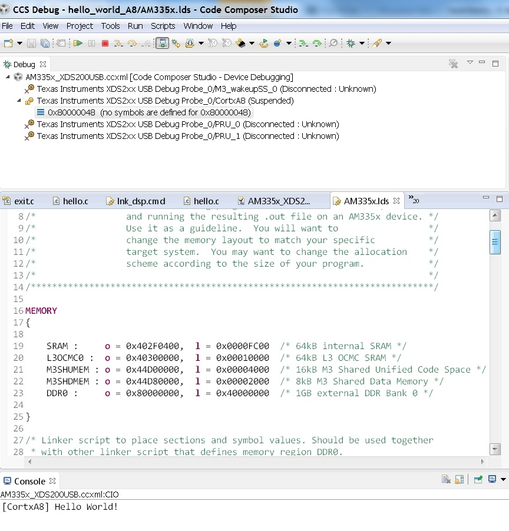Note
If the example does not load correctly in the first attempt, reload and ensure ARM core starts at main.
9.9.6. ARM Cortex-R5¶
In this article, we take a look at creating bare-metal hello world examples for the Cortex-R5 core in CCS. We will be using the AM654x device as an example.
Note
For future Device Support Package releases, the Hello World examples will be added to CCS as an out-of-box experience.
1. Start CCS and create a workspace for generating the project.
2. Navigate to File -> New -> CCS Project.
3. Select Target as AM65x - Cortex R5 and GPEVM_AM65x as shown in the image below.
4. Select the Cortex R tab and provide a name for the project. Select TI v16.9.4.LTS (or higher) for the Compiler Version. Under Tool-chain, set the Device Endianness to little, and for the Linker Command file, select linker_r5.lds located in the folder (PDK INSTALL PATH)/packages/ti/build/am65xx/.
Note
Please refer to the Release Notes for the recommended Compiler version.
Under Project templates and examples, select Basic Examples -> Hello World
Click Finish after you are done to allow CCS to auto generate the project from the template.

5. The generated CCS project contains source file hello.c, and linker command file linker_r5.lds.
6. Navigate to CCS Build -> ARM Linker -> File Search Path and add the following libraries.
ti.csl.aer5f
ti.csl.init.aer5f
libc.a
7. Add the following library search path.
(PDK INSTALL PATH)/ti/csl/lib/am65xx/r5f/release
8. Save all changes, and right click on the project and select Build Project to build the project and generate hello_world.out.
9. Launch the target configuration using your emulator to connect to the AM65x EVM as described in the Processor SDK RTOS Getting Started Guide.
10. Right click on DMSC_Cortex_M3_0 and click connect to target. After connecting to the M3, right click on MCU_PULSAR_Cortex_R5_0 and connect to it.
11. Load and run hello_world.out example file on the Cortex-R5. You should see a Hello_world string displayed in the CCS console window.

9.9.7. ARM Cortex-M4¶
Start CCSv6 and create a work space for generating the project.
Click on File menu option and select New–> CCS Project.
3. Select Target as AM572x -Cortex M4 and GPEVM_AM572x as shown in the image
4. Select Cortex M setting in the options below and provide name of the project as “hello_world_m4” and use default Advanced settings for the project. Click Finish after you are done to allow CCS to auto generate the project from the template Basic Examples-> Hello World. The Default settings uses “TI ARM compiler 5.x.x” tool chain for cortex M4 and sets the build for little endian ELF binary for the M4 core.

5. The generated CCS project contains only one source file hello.c. Ensure the main.c file contains the following code
/*
* hello.c
*/
#include <stdio.h>
int main(void) {
printf("Hello_world\n");
return 0;
}
6. CCSv6 includes a default linker command file(AM57xx_CM4.cmd) for the M4 (IPU) core which will place code into appropriate device memory. The linker command file has the following memory sections.
MEMORY
{
IRAM: o = 0x00000000 l = 0x00001000 /* 4kB internal SRAM */
OCMC_RAM1: o = 0x40300000 l = 0x00080000 /* 512kB L3 OCMC SRAM1 */
OCMC_RAM2: o = 0x40400000 l = 0x00100000 /* 1MB L3 OCMC SRAM2 */
OCMC_RAM3: o = 0x40500000 l = 0x00100000 /* 1MB L3 OCMC SRAM3 */
DDR0: o = 0x80000000 l = 0x40000000 /* 1GB external DDR Bank 0 */
}
The linker command file is designed to place code in OCMC memory with interrupt vectors and .intc_txt generated by the compiler being place in device internal memory.
Note
Please note that if the device GEL files are setting up MMU for the core then the code will not load correctly on the core and will cause a CPU exception. We recommend that you modify the linker command file appropriately to match the MMU settings in the GEL file. The linker command file in all CCS releases prior to CCS 6.1.3 don`t account for this MMU Setting in AM57xx GEL files. Please modify the OCMC addresses to the logical address set in the GEL file
An optional step is to modify the section definition in AM57xx_CM4.cmd file if you wish to introduce/partition existing sections or place the code in different memory section.
Now build the project to generate hello_world_m4.out.
8. Launch target configurations using your emulator to connect to AM572X EVM as described in the Getting Started Guide
9. In order to wake up the M4 core from A15, Go to Menu option Scripts->AM572x_Multicore_Initialization->IPU1SSClkEnable_API. Refer to the Processor_SDK_RTOS_Setup_CCS.
You should see the following log in the Console
CortexA15_0: GEL Output: --->>> IPU1SS Initialization is in progress ... <<<---
CortexA15_0: GEL Output: --->>> IPU1SS Initialization is DONE! <<<---
11. Select and Connect to Cortex_M4_IPU1_C0. Load and run Hello_Example_m4.out file. You should see Hello World string displayed on console window.

Note
If the example does not load correctly in the first attempt, reload and ensure ARM core starts at main.
9.9.8. DSP C66x¶
In this article, we take a look at creating bare-metal hello world examples for C66x core using pre-built templates in CCS. As a sample we will use the AM572x device to describe the steps but the same steps can be used for create hello world examples for C66x cores in the Keystone 2 family of devices.
Note
Only major difference C66x examples for AM572x and Keystone 2 is that the Keystone 2 device contain MSMC memory instead of OCMC memory as the shared on chip memory.
Start CCSv6 and create a work space for generating the project.
Click on File menu option and select New–> CCS Project.
Select Target as AM572x -C66xx and GPEVM_AM572x as shown in the image
4. Select C66XX [C6000] DSP setting in the options below and provide name of the project as “hello_world_dsp” and use default Advanced settings for the project. Click Finish after you are done to allow CCS to auto generate the project from the template Basic Examples-> Hello World. The Default settings uses “TI CG Tools compiler 8.x.x” tool chain for C66x and sets the build for little endian ELF binary for the C66x core.
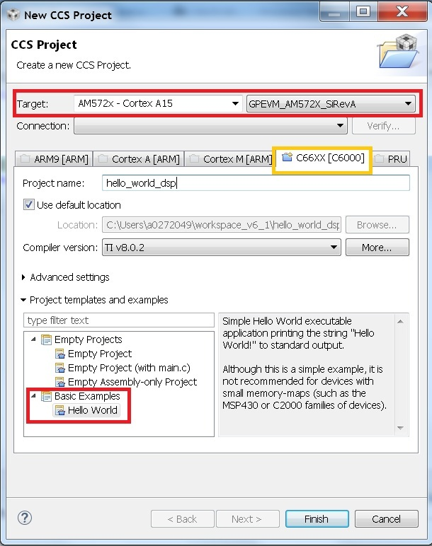5. The generated CCS project contains only one source file hello.c. Ensure the main.c file contains the following code
/*
* hello.c
*/
#include <stdio.h>
int main(void) {
printf("Hello_world\n");
return 0;
}
6. CCSv6 includes a default linker command file(AM57xx_C66.cmd) for the C66x DSP core which will place code into appropriate device memory. The linker command file has the following memory sections.
MEMORY
{
IRAM_MEM: o = 0x00800000 l = 0x00008000 /* 32kB internal SRAM */
OCMC_RAM1: o = 0x40300000 l = 0x00080000 /* 512kB L3 OCMC SRAM1 */
OCMC_RAM2: o = 0x40400000 l = 0x00100000 /* 1MB L3 OCMC SRAM2 */
OCMC_RAM3: o = 0x40500000 l = 0x00100000 /* 1MB L3 OCMC SRAM3 */
DDR0: o = 0x80000000 l = 0x40000000 /* 1GB external DDR Bank 0 */
}
The linker command file is designed to place code in OCMC memory.
Note
For Keystone 2 devices, replace all the OCMC_RAM# regions in the lds file and replace it with MSMC memory section as shown below.
MSMC : o=0x0c000000, l = 0x00600000 /* 6MB Muticore shared memory */
Note
An optional step is to modify the section definition in linker command file if you wish to introduce/partition existing sections or place the code in different memory section.
Now build the project to generate hello_world_dsp.out.
8. Launch target configurations using your emulator to connect to AM572X EVM as described in the Getting Started Guide
9. In order to wake up the DSP1 core from A15, Go to Menu option Scripts->AM572x_Multicore_Initialization->DSP1SSClkEnable_API. Refer to the Processor_SDK_RTOS_Setup_CCS.
You should see the following log in the Console
CortexA15_0: GEL Output: --->>> DSP1SS Initialization is in progress ... <<<---
CortexA15_0: GEL Output: DEBUG: Clock is active ...
CortexA15_0: GEL Output: DEBUG: Checking for data integrity in DSPSS L2RAM ...
CortexA15_0: GEL Output: DEBUG: Data integrity check in GEM L2RAM is sucessful!
CortexA15_0: GEL Output: --->>> DSP1SS Initialization is DONE! <<<---
10. Select and Connect to C66x_DSP1. Load and run hello_world_dsp.out file. You should see Hello World string displayed on console window.

9.9.9. DSP C674x¶
In this article, we take a look at creating bare-metal hello world examples for C674x core using pre-built templates in CCS. As a sample we will use the C6748 LCDK device to describe the steps but the same steps can be used for create hello world examples for C674x cores in the OMAPL13x/C647x/DA8x family of devices.
Note
All the C674x DSP cores on in OMAPL13x/C674x/DA8x have the same memory map so modification are limited to selecting the correct platform when generating the project
Start CCS and create a work space for generating the project.
Click on File menu option and select New–> CCS Project.
Select Target as OMAPLx -C674xx and LCDK674x as shown in the image
4. Select C67XX [C6000] DSP setting in the options below and provide name of the project as “hello_world_lcdk674x” and use default Advanced settings for the project. Click Finish after you are done to allow CCS to auto generate the project from the template Basic Examples-> Hello World. The Default settings uses “TI CG Tools compiler 8.x.x” tool chain for C674x and sets the build for little endian ELF binary for the C674x core.

5. The generated CCS project contains only one source file hello.c. Ensure the main.c file contains the following code
/*
* hello.c
*/
#include <stdio.h>
int main(void) {
printf("Hello_world\n");
return 0;
}
6. CCS includes a default linker command file(C6748.cmd) for the C674x DSP core which will place code into appropriate device memory. The linker command file has the following memory sections.
MEMORY
{
DSPL2ROM o = 0x00700000 l = 0x00100000 /* 1MB L2 Internal ROM */
DSPL2RAM o = 0x00800000 l = 0x00040000 /* 256kB L2 Internal RAM */
DSPL1PRAM o = 0x00E00000 l = 0x00008000 /* 32kB L1 Internal Program RAM */
DSPL1DRAM o = 0x00F00000 l = 0x00008000 /* 32kB L1 Internal Data RAM */
SHDSPL2ROM o = 0x11700000 l = 0x00100000 /* 1MB L2 Shared Internal ROM */
SHDSPL2RAM o = 0x11800000 l = 0x00040000 /* 256kB L2 Shared Internal RAM */
SHDSPL1PRAM o = 0x11E00000 l = 0x00008000 /* 32kB L1 Shared Internal Program RAM */
SHDSPL1DRAM o = 0x11F00000 l = 0x00008000 /* 32kB L1 Shared Internal Data RAM */
EMIFACS0 o = 0x40000000 l = 0x20000000 /* 512MB SDRAM Data (CS0) */
EMIFACS2 o = 0x60000000 l = 0x02000000 /* 32MB Async Data (CS2) */
EMIFACS3 o = 0x62000000 l = 0x02000000 /* 32MB Async Data (CS3) */
EMIFACS4 o = 0x64000000 l = 0x02000000 /* 32MB Async Data (CS4) */
EMIFACS5 o = 0x66000000 l = 0x02000000 /* 32MB Async Data (CS5) */
SHRAM o = 0x80000000 l = 0x00020000 /* 128kB Shared RAM */
DDR2 o = 0xC0000000 l = 0x20000000 /* 512MB DDR2 Data */
}
The linker command file is designed to place code in OCMC memory.
Note
For OMAPL13x/C674x devices, the linker command file places code in the SHRAM memory section as shown below.
SECTIONS
{
.text > SHRAM
.stack > SHRAM
.bss > SHRAM
.......
}
Note
An optional step is to modify the section definition in linker command file if you wish to introduce/partition existing sections or place the code in different memory section.
7. Now build the project by right clicking on the Project and selecting “Build Project” to generate hello_world_lcdk674x.out.
8. Launch target configurations using your emulator to connect to OMAPLx/C674x LCDK as described in the Getting Started Guide.
9. Developers on OMAPL137/C6747/C6748 can connect directly to the DSP. For OMAPL138 device, you will need to connect to the ARM as this is ARM master boot device and ARM needs to power up the DSP. You should see the following log in the console.
C674X_0: Output: Target Connected.
C674X_0: Output: ---------------------------------------------
C674X_0: Output: Memory Map Cleared.
C674X_0: Output: ---------------------------------------------
C674X_0: Output: Memory Map Setup Complete.
C674X_0: Output: ---------------------------------------------
C674X_0: Output: PSC Enable Complete.
C674X_0: Output: ---------------------------------------------
C674X_0: Output: PLL0 init done for Core:300MHz, EMIFA:25MHz
C674X_0: Output: DDR initialization is in progress....
C674X_0: Output: PLL1 init done for DDR:150MHz
C674X_0: Output: Using DDR2 settings
C674X_0: Output: DDR2 init for 150 MHz is done
C674X_0: Output: ---------------------------------------------
11. Select and Connect to C674x. Load and run hello_world_dsp.out file. You should see Hello World string displayed on console window.

9.10. Gravity Simulator Demo¶
9.10.1. Overview¶
This demo showcases a simple video display with Processor SDK RTOS. This demo uses Gravit, a GPL-licensed open-sourced library, to simulate gravity of particles in space.
9.10.2. Version Details¶
Latest version: 1.0.0
Supported platforms: idkAM572x
Available in: Processor SDK RTOS 4.0.0.4
9.10.3. Components Used¶
Open Sourced Libraries:
Gravit
RTOS Components:
SYSBIOS
XDC
Processor SDK RTOS Drivers:
VPS
PM
I2C
UART
Board
OSAL
CSL
9.10.4. Building the Demo¶
The demo is available pre-built for Processor SDK RTOS version 4.0.0.4 or higher. You must first set up your development environment. Refer to the Processor SDK RTOS Building page for information on setting up your build environment.
The following are steps to clean the demo:
cd [SDK Install Path]/processor_sdk_rtos_[soc]_[version]/demos/gravit
make clean BOARD=idkAM572x
The following are steps to compile the demo:
cd [SDK Install Path]/processor_sdk_rtos_[soc]_[version]/demos/gravit
make BOARD=idkAM572x
9.10.5. Running the Demo¶
You will need the following:
Code Composer Studio to load and run the demo. Refer to Processor SDK RTOS Getting Started Guide for installing CCS.
idkAM572x board with attached LCD screen
USB cable for JTAG and serial terminal (micro USB port)
To load and run the demo:
Connect the USB cable from your computer to the idkAM572x’s JTAG port
Power on the idkAM572x board. Ensure that no boot mode is entered (do not have SD card loaded or QSPI flashed)
Open up a serial terminal for UART communication (Refer to Processor SDK RTOS Getting Started Guide, setup EVM hardware)
Open CCS and launch target config file for idkAM572x (Refer to Processor SDK RTOS Setup CCS for setting up CCS)
Connect to CortexA15_0
Load and launch the demo executable:
[SDK Install Path]/processor_sdk_rtos_[soc]_[version]/demos/gravit/bin/idkAM572x/gravit_a15_0_release.xa15fg
9.10.6. Terminal Screenshot¶
When launched, you will be prompt for number of particles to simulate. Enter a value up to 1000.
Use w-a-s-d for display rotation
Use i-j-k-l for display translation
Press Esc to end current simulation and display accumulated statistics
Frames per second (FPS) and floating point operations per second (FLOPS) are displayed on the terminal
Below is a screenshot of the terminal after one simulation:

9.10.7. Display Output¶
Particles are set to rotate around a gravity center positioned at the center of the LCD screen
Particles are represented with 3D coordinates, projected to a 2D LCD screen. The projection is simplified such that the camera (or the viewer) does not change display angles.
Below is an example display of a 500-particle simulation:

9.10.8. Useful References¶
Main Gravit website: https://gravit.slowchop.com/
Gravit github: https://github.com/gak/gravit
Physics algorithm behind gravit, Barnes-hut: https://en.wikipedia.org/wiki/Barnes-Hut_simulation
Bresenham’s line algorithm: https://en.wikipedia.org/wiki/Bresenham’s_line_algorithm
9.11. Jailhouse Hypervisor¶
Overview
Jailhouse is a static partitioning hypervisor that runs bare metal binaries. It cooperates closely with Linux. Jailhouse doesn’t emulate resources that don’t exist. It just splits existing hardware resources into isolated compartments called “cells” that are wholly dedicated to guest software programs called “inmates”. One of these cells runs the Linux OS and is known as the “root cell”. Other cells borrow CPUs and devices from the root cell as they are created.

*The picture above shows the jailhouse on a system a) before the jailhouse is enabled; b) after the jailhouse is enabled; c) after a cell is created. *
Jailhouse consists of three parts: kernel module, hypervisor firmware and tools, which a user uses to enable the hypervisor, create a cell, load inmate binary, run and stop it. Jailhouse is an example of Asynchronous Multiprocessing (AMP) architecture. When we boot Linux on AM57XX-EVM, which has 2 ARM cores, Linux uses the both cores. After we enable hypervisor it moves Linux to the root-cell. The root cell still uses the both ARM cores. When we create a new cell, hypervisor calls cpu_down() for the ARM1 core, leaving for Linux ARM0 only. The new cell will use the ARM1 core and hardware resources dedicated for this cell in the cell configuration file.
Jailhouse is an open source project, which can be found on https://github.com/siemens/jailhouse.
Demo
2) use **am572x-evm-jailhouse.dtb* for AM572x-EVM or am572x-idk-jailhouse.dtb for AM572x-IDK *
Pre-built components
jailhouse.ko kernel module located at /lib/modules/4.9.28-<gitid>/extra/driver directory;
jailhouse.bin - hypervisor itself located at /lib/firmware directory;
Jailhouse management tools are located at /usr/local/libexec/jailhouse and /usr/sbin directories;
In order to create the root-cell and an inmate cell we need to provide cell configuration files. Those configuration files and example binaries are located at /usr/share/jailhouse/examples directory:
root@am57xx-evm:/usr/share/jailhouse/examples# ls -1
am572x-rtos-icss.cell
am572x-rtos-pruss.cell
am57xx-evm-ti-app.cell
am57xx-evm.cell
am57xx-pdk-leddiag.cell
icss_emac.bin
led_test.bin
linux-loader.bin
pruss.bin
ti-app.bin
where
am57xx-evm.cell - root cell configuration file;
ti-app.bin and am57xx-evm-ti-app.cell - bare metal inmate and its cell configuration;
led_test.bin and am57xx-pdk-leddiag.cell - PDK led_test inmate example and its cell configuration (led_test.bin can be run on AM572x-EVM only);
pruss.bin and am572x-rtos-pruss.cell - TI-RTOS PRUSS inmate examples and its cell configuration (pruss.bin can be run on AM572x-IDK only);
icss_emac.bin and am572x-rtos-icss.cell - TI-RTOS ICSS-EMAC inmate example and its cell configuration (icss_emac.bin can be run on AM572x-IDK only);
linux-loader.bin - loader required to run inmates, which start address is not 0x0;
Running the Demo on AM572x-EVM
Running bare-metal ti-app.bin
Here are the steps to run the demo:
Boot the Linux
Insert jailhouse.ko kernel module
root@am57xx-evm:~# modprobe jailhouse
Enable the hypervisor using am57xx-evm.cell root-cell configuration file
root@am57xx-evm:~# jailhouse enable /usr/share/jailhouse/examples/am57xx-evm.cell
Initializing Jailhouse hypervisor v0.6 on CPU 1
Code location: 0xf0000030
Page pool usage after early setup: mem 30/4073, remap 32/131072
Initializing processors:
CPU 1... OK
CPU 0... OK
Page pool usage after late setup: mem 39/4073, remap 38/131072
Activating hypervisor
[ 4155.880217] The Jailhouse is opening.
Create a cell for the inmate
root@am57xx-evm:~# jailhouse cell create /usr/share/jailhouse/examples/am57xx-evm-ti-app.cell
[ 5270.449687] CPU1: shutdown
[ 5270.453221] NOHZ: local_softirq_pending 20
Created cell "AM57XX-EVM-timer8-demo"
Page pool usage after cell creation: mem 51/4073, remap 38/131072
[ 5270.487970] Created Jailhouse cell "AM57XX-EVM-timer8-demo"
Load the ti-app.bin inmate binary
root@am57xx-evm:~# jailhouse cell load 1 /usr/share/jailhouse/examples/ti-app.bin
Cell "AM57XX-EVM-timer8-demo" can be loaded
Start the binary
root@am57xx-evm:~# jailhouse cell start 1
Hey, I'm working !!!!!!!!!!!
timer id 4fff2b01
timer value fffffc17; irq status 00000002; raw 00000002
min 00000017; avr 0000001b; max 000002c1
min 00000017; avr 0000001b; max 000000f3
min 00000017; avr 0000001b; max 000002c8
min 00000017; avr 0000001b; max 00000148
min 00000017; avr 0000001b; max 000002d4
min 00000017; avr 0000001b; max 00000158
NOTE: becase all of the components: root-cell, hypervisor and demo inmate use the same UART, there is a conflict. Once the inmate started to use the UART, Linux stops getting any input from console. To workaround this and continue to control the hypervisor, you may telnet to the EVM and issue all commands from the telnet shell. Hypervisor still will use Linux console to print it sdebug messages
Stop the binary
root@am57xx-evm:~# jailhouse cell shutdown 1
NOTE: You may restore Linux console by killing the “/bin/login –” process from telnet session.
destroy cell
root@am57xx-evm:~# jailhouse cell destroy 1
Closing cell "AM57XX-EVM-timer8-demo"
Page pool usage after cell destruction: mem 39/4073, remap 38/131072
[ 6201.111168] Destroyed Jailhouse cell "AM57XX-EVM-timer8-demo"
disable hypervisor
root@am57xx-evm:~# jailhouse disable
Shutting down hypervisor
Releasing CPU 0
Releasing CPU 1
[ 6248.149728] The Jailhouse was closed.
NOTES:
You may shutdown and start the same binary multiple times. Every time you start the binary, it starts from the beginning.
If you have different binaries which use the same cell resources, you may reuse the created cell to run them. You need just shutdown the cell, load another binary and start it. If you need to run different binaries that requires different resources, you need to shutdown the running cell, destroy it, create a new one with required resources, load a new binary and start it.
Running PDK led_test.bin example
After you enable hyprevisor, create a pdk cell
root@am57xx-evm:~# jailhouse cell create /usr/share/jailhouse/examples/am57xx-pdk-leddiag.cell
[ 312.419978] CPU1: shutdown
Created cell "AM57XX-EVM-PDK-LED"
Page pool usage after cell creation: mem 54/4075, remap 38/131072
[ 312.470723] Created Jailhouse cell "AM57XX-EVM-PDK-LED"
root@am57xx-evm:~#
root@am57xx-evm:~# jailhouse cell load 1 /usr/share/jailhouse/examples/led_test.bin
Cell "AM57XX-EVM-PDK-LED" can be loaded
and start it
root@am57xx-evm:~# jailhouse cell start 1
Started cell "AM57XX-EVM-PDK-LED"
root@am57xx-e
*********************************************
* LED Test *
*********************************************
Testing LED
Blinking LEDs...
Press 'y' to verify pass, 'r' to blink again,
or any other character to indicate failure: r
Blinking again
Press 'y' to verify pass, 'r' to blink again,
or any other character to indicate failure: y
Received: y
Test PASSED!
You may see blinking leds, press “r” to repeat the test.
Running the Demo on AM572x-IDK
Two TI-RTOS example applications were ported for Jailhouse hypervisor: pruss.bin and icss_emac.bin. In contrast to led_test.bin, which has its own startup code, linker script and was linked to start from address 0x0, the pruss.bin and icss_emac.bin used the TI-RTOS building infrustructure as much as possible. Therefore they are linked to EVM’s DDR address space (starting from 0x80000000 ) and their entry points are not 0x0. To support loading and running such applicaiton a special command shell be used.
To run the pruss.bin applicaton enable the hypervisor the same way as for other examples.
cd /usr/share/jailhouse/examples/
root@am57xx-evm:/usr/share/jailhouse/examples# modprobe jailhouse
root@am57xx-evm:/usr/share/jailhouse/examples# jailhouse enable ./am57xx-evm.cell
Initializing Jailhouse hypervisor on CPU 0
Code location: 0xf0000030
Page pool usage after early setup: mem 30/4075, remap 32/131072
Initializing processors:
CPU 0... OK
CPU 1... OK
Page pool usage after late setup: mem 39/4075, remap 38/131072
Activating hypervisor
[ 710.008555] The Jailhouse is opening.
Create a cell for pruss.bin
root@am57xx-evm:/usr/share/jailhouse/examples# jailhouse cell create ./am572x-rtos-pruss.cell
[ 745.067783] CPU1: shutdown
Created cell "AM572X-IDK-PRUSS"
Page pool usage after cell creation: mem 54/4075, remap 38/131072
[ 745.107324] Created Jailhouse cell "AM572X-IDK-PRUSS"
root@am57xx-evm:/usr/share/jailhouse/examples#
Use cell load command to load several required components:
root@am57xx-evm:/usr/share/jailhouse/examples# jailhouse cell load 1 linux-loader.bin -a 0 -s "kernel=0x80005128" -a 0x100 pruss.bin -a 0x80000000
Cell "AM572X-IDK-PRUSS" can be loaded
where
linux-loader.bin is a small application provided and built by jailhouse source tree. As you can see (-a 0) it is loaded to virtual address 0x0;
“-s “kernel=0x80005128” -a 0x100” - is the linux_loader argument loaded as string to virtual address 0x100, which instructs the linux-loader to branch to the pruss.bin 0x80005128 entry point;
pruss.bin itself, loaded to the virtual address 0x80000000 - the address where this application is lined to;
root@am57xx-evm:/usr/share/jailhouse/examples# jailhouse cell start 1
Started cell "AM572X-IDK-PRUSS"
root@am57xx-evm:/usr/share/jailhouse/examples# passed verify constant tbl entry for instance 1: pruNum: 0
eventwait: waiting for the INTC event from PRU
sending the INTC event to the PRU for instance: 1 , pru num: 0
eventwait: got the INTC event from PRU, count: 1
eventwait: waiting for the INTC event from PRU
sending the INTC event to the PRU for instance: 1 , pru num: 0
eventwait: got the INTC event from PRU, count: 2
eventwait: waiting for the INTC event from PRU
sending the INTC event to the PRU for instance: 1 , pru num: 0
eventwait: got the INTC event from PRU, count: 3
eventwait: waiting for the INTC event from PRU
sending the INTC event to the PRU for instance: 1 , pru num: 0
eventwait: got the INTC event from PRU, count: 4
eventwait: waiting for the INTC event from PRU
sending the INTC event to the PRU for instance: 1 , pru num: 0
eventwait: got the INTC event from PRU, count: 5
eventwait: waiting for the INTC event from PRU
Testing for instance: 1, pru num: 0 is complete
passed verify constant tbl entry for instance 1: pruNum: 1
sending the INTC event to the PRU for instance: 1 , pru num: 1
eventwait: got the INTC event from PRU, count: 1
eventwait: waiting for the INTC event from PRU
sending the INTC event to the PRU for instance: 1 , pru num: 1
eventwait: got the INTC event from PRU, count: 2
eventwait: waiting for the INTC event from PRU
sending the INTC event to the PRU for instance: 1 , pru num: 1
eventwait: got the INTC event from PRU, count: 3
eventwait: waiting for the INTC event from PRU
sending the INTC event to the PRU for instance: 1 , pru num: 1
eventwait: got the INTC event from PRU, count: 4
eventwait: waiting for the INTC event from PRU
sending the INTC event to the PRU for instance: 1 , pru num: 1
eventwait: got the INTC event from PRU, count: 5
Testing for instance: 1, pru num: 1 is complete
passed verify constant tbl entry for instance 2: pruNum: 0
eventwait2: waiting for the INTC event from PRU
sending the INTC event to the PRU for instance: 2 , pru num: 0
eventwait2: got the INTC event from PRU, count: 1
eventwait2: waiting for the INTC event from PRU
sending the INTC event to the PRU for instance: 2 , pru num: 0
eventwait2: got the INTC event from PRU, count: 2
eventwait2: waiting for the INTC event from PRU
sending the INTC event to the PRU for instance: 2 , pru num: 0
eventwait2: got the INTC event from PRU, count: 3
eventwait2: waiting for the INTC event from PRU
sending the INTC event to the PRU for instance: 2 , pru num: 0
eventwait2: got the INTC event from PRU, count: 4
eventwait2: waiting for the INTC event from PRU
sending the INTC event to the PRU for instance: 2 , pru num: 0
eventwait2: got the INTC event from PRU, count: 5
eventwait2: waiting for the INTC event from PRU
Testing for instance: 2, pru num: 0 is complete
passed verify constant tbl entry for instance 2: pruNum: 1
sending the INTC event to the PRU for instance: 2 , pru num: 1
eventwait2: got the INTC event from PRU, count: 1
eventwait2: waiting for the INTC event from PRU
sending the INTC event to the PRU for instance: 2 , pru num: 1
eventwait2: got the INTC event from PRU, count: 2
eventwait2: waiting for the INTC event from PRU
sending the INTC event to the PRU for instance: 2 , pru num: 1
eventwait2: got the INTC event from PRU, count: 3
eventwait2: waiting for the INTC event from PRU
sending the INTC event to the PRU for instance: 2 , pru num: 1
eventwait2: got the INTC event from PRU, count: 4
eventwait2: waiting for the INTC event from PRU
sending the INTC event to the PRU for instance: 2 , pru num: 1
eventwait2: got the INTC event from PRU, count: 5
Testing for instance: 2, pru num: 1 is complete
All tests have passed
Jailhouse Performance on AM5728
To verify the real-time performance of Jailhouse Sitara AM5728 was setup to run Linux on one of the ARM Cortex A15 cores, and a TI-RTOS inmate on the other A15 core. A test was run to measure interrupt latency. Poll mode driver based application performance of an inmate should be identical to a system without virtualizationion in a static partitioning system like Jailhouse. Anything interrupt based is required to share the interrupt controller (GIC) which will introduce some interference from Linux to the real-time application. The measurements shown below over a million interrupts clearly shows the interference, and captures the upper bound at 8.8us. For the first run of interrupt latency test an unloaded Linux running on core 0 is in the first column. In the second column Linux on core 0 is running STREAM. STREAM is an external memory access benchmark that fully utilizes the number of outstanding reads and writes to memory. It is scalable from individual processors to clusters supercomputers, here it is used at the processor level. It was chosen as representative of a worst case memory access behaviour of a Linux based application on a Cortex A15, essentially with a memory access profile like an optimized memorytomemory copy. In AM5728 the two Cortex A15 cores share L2 cache and access to the rest of the SoC, which the STREAM benchmark running on core 0 stresses while core 1 access GIC registers to respond to the interrupt.
Unloaded Linux on core 0 |
Linux Running STREAM benchmark on core 0 |
|
|---|---|---|
Interrutp count
Bucket 1.6 us - 3.2
us
|
99.3756% |
33.9323% |
Interrutp count
Bucket 3.2 us - 6.4
us
|
0.6244% |
66.0632% |
Interrutp count
Bucket 6.4 us -
12.8 us
|
none |
0.0045% |
Minimum interrupt latency |
2.2 microseconds |
1.8 microseconds |
Maximim interrupt latency |
5.0 microseconds |
8.8 microseconds |
Building Jailhouse from Sources
Jailhouse sources are located at $TI_SDK_PATH/board-support/extra-drivers/jailhouse-0.7 directory. The directory contains the following subdirectories:
Documentation
ci - configuration files for different platforms. *Copy the jailhouse-config-am57xx-evm.h file into hypervisor/include/jailhouse directory and rename it to config.h*
configs - cell configuration files.
driver - jailhouse.ko kernel module code
hypervisor - hypervisor code
inmates - inmates demos. It also contains code for ti_app inmate example.
scripts
tools - jailhouse management utility
The top level SDK Makefile has the jailhouse_clean, jailhouse and jailhouse_install targets which can be used to clean, build and install jailhouse to the target file system.
Building and Running the Ethercat Slave Demo
To build and run the Ethercat Slave Demo, you need to install the PLSDK-RT, PRSDK and PRU-ICSS-ETHERCAT-SLAVE builds. We assume that you already have the first two SDKs installed. The PRU-ICSS-ETHERCAT-SLAVE can be downloaded from http://software-dl.ti.com/processor-industrial-sw/esd/PRU-ICSS-ETHERCAT-SLAVE/01_00_05_00/index_FDS.html.
Once you have this SDK installed you may build Ethercat slave components.
If the am572x-ethercat.cell is not installed on target filesystem yet, build it from PLSDK-RT top level makefile “make jailhouse” and copy it to target under /usr/share/jailhouse/examples.
To build the ethercat_slave_demo.bin:
Modify the IA_SDK_HOME at ~/ti/processor_sdk_rtos_am57xx_[version]/demos/jailhouse-inmate/rtos/ethercat_slave_demo/Makefile to point to the install directory of PRU-ICSS-ETHERCAT-SLAVE.
At ~/ti/processor_sdk_rtos_am57xx_[version]/demos/jailhouse-inmate/makefile: add ethercat_slave_demo* entries as pruss-test/icss-emac-test to the end of the makefile
ethercat_slave_demo:
$(MAKE) -C ./rtos/ethercat_slave_demo
ethercat_slave_demo_clean:
$(MAKE) -C ./rtos/ethercat_slave_demo clean
ethercat_slave_demo_install:
$(MAKE) -C ./rtos/ethercat_slave_demo install
cd ~/ti/processor_sdk_rtos_am57xx_[version]/
source setupenv.sh
cd ~/ti/processor_sdk_rtos_am57xx_[version]/demos/jailhouse-inmate
source setenv.sh
make ethercat_slave_demo
After the steps above, copy ethercat_slave_demo.bin to target under /usr/share/jailhouse/examples.
To run the inmate refer to the instructions for **Running the Demo on AM572x-IDK** . Be aware that the inmate start address is 0x80000000. So, you need to use it as a parameter at the “jailhouse cell load” command:
jailhouse cell load 1 linux-loader.bin -a 0 -s "kernel=0x80000000" -a 0x100 ethercat_slave_demo.bin -a 0x80000000
Refer to http://processors.wiki.ti.com/index.php/PRU_ICSS_EtherCAT#Running_EtherCAT_Slave_Application to setup Ethercat master.
Master: Online write [data] to RxPDO 32Bit Output. After this, the slave should report the corresponding value via Board_setDigOutput. The value can be checked with “devmem2 0xeef00000” also.
Slave: devmem2 0xeef00004 b [data]. After this, Master should display the corresponding value in TXPDO 32Bit Input.
Jailhouse Internals
This section gives some Jailhouse details and required kernel modifications.
Linux Kernel Modifications
In order to run hypervisor itself and inmates Jailhouse requires additional nodes in kernel dtb. See the am572x-evm-jailhouse.dts and am572x-idk-jailhouse.dts. They add required nodes or modify existing nodes of the default am57xx-evm-reva3.dts and am57xx-idk.dts DTS files.
Memory Reservation
Linux kernel has to reserve some memory for jailhouse hypervisor and for inmate. This memory has to be reserver statically. In this release we reserved 16MB of physical memory for hypervisor and 16MB for inmates.
/ {
reserved-memory {
jailhouse: jailhouse@ef000000 {
reg = <0x0 0xef000000 0x0 0x1000000>;
no-map;
status = "okay";
};
jh_inmate: jh_inmate@ee000000 {
reg = <0x0 0xee000000 0x0 0x1000000>;
no-map;
status = "okay";
};
};
};
Hardware Modules Reservation
Linux kernel enables all SOC HW modules which are required for its configuration. Appropriate drivers configure required clocks and initialize HW registers. For all unused IPs clocks are not configured. Also kernel power management can put a module into the sleep mode. A jailhouse inmate doesn’t share the same hardware module with Linux kernel (except debug UART). But the inmate doesn’t configure required clocks and doesn’t deal with power domains. So, we still relay on Linux kernel (at least at the current release) to configure clocks to inmate HW modules. If we want to use some hardware modules for an inmate, we have to tell kernel about this in advance.
The following nodes disable using of the timer8 and uart9 by kernel. Also this restricts kernel to put those IPs to sleep mode.
&timer8 {
status = "disabled";
ti,no-idle;
};
&uart9 {
status = "disabled";
ti,no-idle;
};
You may see other nodes in the jailhouse DTSes which reserve other IPs to be used for inmates. Thus IDK’s DTS disables nodes, which IPs are used for icss_emac and pruss inmates.
GIC Interrupt Inputs Reservation
Interrupt lines from hardware modules don’t go to ARM interrupt controller (GIC) directly. They go to a crossbar register, which selects a GIC distributor input. The selection is done dynamically by Linux kernel. Linux keeps track of all used and unused GIC inputs. If a jailhouse inmate has to use an interrupt, it has to configure the crossbar register by itself. To prevent conflicts between the Linux crossbar manager and the inmate, and give to the inmate some unused GIC input lines, which it can use, we need to reserve some of them in the kernel dts.
This can be done by adding GIC input numbers to the “ti,irqs-skip” property of the “crossbar_mpu:” node. Lines 134 and 135 are added to the following node.
crossbar_mpu: crossbar@4a002a48 {
ti,irqs-skip = <10 133 134 135 139 140>;
};
crossbar_mpu: crossbar@4a002a48 {
ti,irqs-skip = <10 44 127 129 133 134 135 136 137 139 140>;
};
Root-cell configuration
When hypervisor is being enabled it creates a cell for Linux and moves it to that cell. The cell is called as “root-cell”. The cell configuration as a “.c” file which is compiled to a special binary format “.cell” file. The hypervisor uses the “cell” file to create a cell. The cell configuration describes memory regions and their attributes which will be used by the cell,
.mem_regions = {
/* OCMCRAM */ {
.phys_start = 0x40300000,
.virt_start = 0x40300000,
.size = 0x80000,
.flags = JAILHOUSE_MEM_READ | JAILHOUSE_MEM_WRITE |
JAILHOUSE_MEM_IO,
},
/* 0x40380000 - 0x48020000 */ {
.phys_start = 0x40380000,
.virt_start = 0x40380000,
.size = 0x7ca0000,
.flags = JAILHOUSE_MEM_READ | JAILHOUSE_MEM_WRITE |
JAILHOUSE_MEM_IO,
},
/* UART... */ {
.phys_start = 0x48020000,
.virt_start = 0x48020000,
.size = 0xe0000,//0x00001000,
.flags = JAILHOUSE_MEM_READ | JAILHOUSE_MEM_WRITE |
JAILHOUSE_MEM_IO,
},
...
/* RAM */ {
.phys_start = 0x80000000,
.virt_start = 0x80000000,
.size = 0x6F000000,
.flags = JAILHOUSE_MEM_READ | JAILHOUSE_MEM_WRITE |
JAILHOUSE_MEM_EXECUTE,
},
/* Leave hole for hypervisor */
/* RAM */ {
.phys_start = 0xF0000000,
.virt_start = 0xF0000000,
.size = 0x10000000,
.flags = JAILHOUSE_MEM_READ | JAILHOUSE_MEM_WRITE |
JAILHOUSE_MEM_EXECUTE,
},
bitmap of CPU cores dedicated for the cell,
.cpus = {
0x3,
},
bitmap of interrupt controller SPI interrupts
.irqchips = {
/* GIC */ {
.address = 0x48211000,
.pin_base = 32,
.pin_bitmap = {
0xffffffff, 0xffffffff, 0xffffffff, 0xffffffff
},
},
/* GIC */ {
.address = 0x48211000,
.pin_base = 160,
.pin_bitmap = {
0xffffffff, 0, 0, 0
},
},
},
and some other parameters. That is for all cells.
In addition to that the root cell also allocates the physical memory for the hypervisor.
.hypervisor_memory = {
.phys_start = 0xef000000,
.size = 0x1000000,
},
The “memory regions” section is used by hypervisor to create the second stage MMU translation table. Usually for root-cell the identical mapping is being used - “VA = PA”.
See the am57xx-evm.c file is the complete am57xx-evm root cell configuration.
Bare Metal Inmate Example
Jailhouse comes with inmate demos located at the inmates/demos directory. Current (v0.6) version has two demo inmates: gic-demo and uart-demo. Those are very simple bare-metal applications that demonstrates a uart and arm-timer interrupt. Those demos are common for all jailhouse platforms.
More interesting may be the ti-app, a demo made especially for AM572x SOC. The code is located at the inmate/ti_app directory.
Basically this application is a sandbox to make some experiments. The current version demonstrates of using a uart, timer and a GIC SPI interrupt (timer generates periodic interrupts). The application also has some extra code, which was used to measure interrupt latency.
As any inmate the ti-app inmate works in a cell. The am57xx-evm-ti-app.c is the cell configuration file. For this cell only ARM1 core will be used:
.cpus = {
0x2,
},
NOTE: Actually on am572 SOC, which has only 2 ARM core and Linux always uses the ARM0 core only ARM1 can be taken for an inmate.
The cell configuration has 5 memory regions:
/* UART... */ {
.phys_start = 0x48020000,
.virt_start = 0x48020000,
.size = 0x1000,
.flags = JAILHOUSE_MEM_READ | JAILHOUSE_MEM_WRITE |
JAILHOUSE_MEM_IO | JAILHOUSE_MEM_ROOTSHARED,
},
/* UART... */ {
.phys_start = 0x48424000,
.virt_start = 0x48424000,
.size = 0x1000,
.flags = JAILHOUSE_MEM_READ | JAILHOUSE_MEM_WRITE |
JAILHOUSE_MEM_IO | JAILHOUSE_MEM_ROOTSHARED,
},
/* TIMER... */ {
.phys_start = 0x48826000,
.virt_start = 0x48826000,
.size = 0x1000,
.flags = JAILHOUSE_MEM_READ | JAILHOUSE_MEM_WRITE |
JAILHOUSE_MEM_IO | JAILHOUSE_MEM_ROOTSHARED,
},
/* L4_CFG */ {
.phys_start = 0x4a000000,
.virt_start = 0x4a000000,
.size = 0xE00000,
.flags = JAILHOUSE_MEM_READ | JAILHOUSE_MEM_WRITE |
JAILHOUSE_MEM_IO | JAILHOUSE_MEM_ROOTSHARED,
},
/* RAM */ {
.phys_start = 0xee000000,
.virt_start = 0,
.size = 0x800000,
.flags = JAILHOUSE_MEM_READ | JAILHOUSE_MEM_WRITE |
JAILHOUSE_MEM_EXECUTE | JAILHOUSE_MEM_LOADABLE,
},
Two for UARTs. The first one for UART3, which is a standard EVM debug uart. The second for UART9, using of which requires some board modifications. But UART9 doesn’t conflict with Linux or hypervisor and may be more useful if the inmate needs a dedicated UART. One region for timer9 and one for access multiple configuration registers.
The last region is for RAM allocated for the inmate. Similar to root-cell memory regions configuration memory mapping for all regions except for RAM are identical (VA = PA). For the RAM region virtual address has to be ‘0’. The physical addresses of the region must be inside of the physical memory reserved for inmates in the Linux DTS file.
In the .irqchip section of the cell configuration file we reserve GIC interrupt line #134 (One of two lines reserved in the kernel DTS).
/* GIC */ {
.address = 0x48211000,
.pin_base = 160,
.pin_bitmap = {
0x00000040,
},
},
Here where #134 comes from. The 0x00000040 is the bitmask of the sixth bit. So, .pin_base(160) + .pin_bitmap(6) - 32(number of SWI and PPI interrupt) = 134.
As other jailhouse demos the ti-app uses the jailhouse startup code, which sets the inmate vector table, zeros BSS segment, sets the stack up and calls the inmate_main(). The initialization of the GIC controller is done by hypervisor. Also the hypervisor remaps GICC interface to GICV interface and intercepts all inmates accesses to GICD. It allows to read/write only GICD registers, related to the lines given in the .irq_chips section. In our case for the line #134 only.
In the inmate_main() the inmate initializes uart, sets the crossbar and calls the gic_setup() to set the inmate’s interrupt handler. The jailhouse provides inmate interrupt controller API. This can be used by inmate.
The ti-app initializes the timer and enters to the infinite loop.
Actually the inmate code has only about 100 lines and doesn’t require any more explanation.
RTOS PDK Inmates
The jailhouse demo applications and the “ti_app” are built by jailhouse’s makefile inside the jailhouse’s source tree. It is more interesting to build an inmate outside of the jailhouse source tree, using independent makefile and third party libraries. This release provides led_test, a simple example of a bare-metal application, which uses prebuilt RTOS PDK libraries and is built independently on Jailhouse. It also has ports of two TI RTOS SYSBIOS test applications - pruss and icss_emac. There are two other examples: 1) bare-metal memcp_bm - a simple application to measure memory bandwidth; 2) Ethercat_slave_demo - ported to Jailhouse example from “PRU-ICSS Industrial Software for Sitara™ Processors”. The example requires some modifications of the PRU-ICSS Industrial Software, which is not published yet. That is why the ethercat_slave_demo included here as a reference only.
The code of the applications is located on the $(SDK_INSTALL_PATH)/processor_sdk_rtos_am57xx_4_01_00_04/demos/jailhouse-inmate directory, which contains:
├── baremetal
│ ├── led
│ │ ├── led_test.c
│ │ └── makefile
│ ├── memcp_bm
│ │ ├── makefile
│ │ └── memcp_bm.c
│ └── soc
│ └── am572x
│ ├── evmAM572x
│ │ ├── entry.S
│ │ ├── gic.c
│ │ ├── linker.cmd
│ │ └── make.inc
│ └── rules.mk
├── makefile
├── rtos
│ ├── ethercat_slave_demo
│ │ ├── bios
│ │ │ ├── am572x_app.cfg
│ │ │ └── makefile
│ │ ├── Makefile
│ │ └── src
│ │ └── board_jh.c
│ ├── icss_emac
│ │ ├── bios
│ │ │ ├── icss_emac_arm_wSoCLib.cfg
│ │ │ └── makefile
│ │ ├── lnk_pruss_fw.cmd
│ │ ├── Makefile
│ │ └── src
│ │ ├── idkAM572x_ethernet_config_jh.c
│ │ └── idkAM572x_jh.c
│ ├── pru-icss
│ │ ├── bios
│ │ │ ├── makefile
│ │ │ └── pruss_arm_wSoCLib.cfg
│ │ ├── Makefile
│ │ └── src
│ │ └── idkAM572x_jh.c
│ └── Rules.mk
└── setenv.sh
Bare-metal example
The bare-metal directory has three subdirectories: soc - has common for bare-metal applications soc specific code; led - led_test application code; memcp_bm - memcp_bm code;
The soc/am572x/evmAM572x sub-directory contains:
entry.S - startup file for an inmate;
gic.c - has the dummy _weak_ INTCCommonIntrHandler(), which can be overridden by an actual application handler.
linker.cmd - jailhouse requires that an inmate shall start from address “0”. It also requires that all inmates segments be located in contiguous memory. This linker.cmd is to meet these requirements.
The led directory contains:
The main inmate led_test.c code. This file is based on $(SDK_INSTALL_PATH)/pdk_am57xx_1_0_6/packages/ti/board/diag/led/src/led_test.c diagnostic application. Because the inmate works as a virtual machine in order to use caches MMU has to be enabled. So, the application creates the MMU translation table with identical mapping and enables MMU. It also has the gic_init(), which is now used at this relese.
makefile is to build the inmate. As you can see, it links number of brebuilt PDK libraries.
cd to $(SDK_INSTALL_PATH)/processor_sdk_rtos_am57xx_4_01_00_04 drectory
source setupenv.sh
cd to $(SDK_INSTALL_PATH)/processor_sdk_rtos_am57xx_4_01_00_04/demos/jailhouse-inmates
source setenv.sh
run make led_test
That should build the led_test.bin binary, that can be loaded to the jailhouse cell and run. As any other inmate it has to be run in a cell, created with appropriate cell configuration. In contrast to the led_test.bin, which is compiled independently on jailhouse, a corresponding cell configuration is compiled by jailhouse makefile.
The am57xx-pdk-leddiag.c cell configuration file is located in the $TI_SDK_PATH/board-support/extra-drivers/jailhouse-0.7/configs directory. Use the compiled am57xx-pdk-leddiag.cell file when you create the cell for led_test.bin inmate.
See Running the Demo to run the inmate.
The memcp_bm is very similar to led_test. It is built in the same way as the led_test. Use the am57xx-bm.cell file from $TI_SDK_PATH/board-support/extra-drivers/jailhouse-0.7/configs to create the jailhouse cell for the memcp_bm inmate.
RTOS BIOS Examples
The jailhouse-inmate/Makefile has the “pruss_test” and “icss_emac_test” targets to build the BIOS inmates.
The structure of the ethercat_slave_demo example is very similar to the pruss and icss_emac examples. As far as it depends on a particular version of the “PRU-ICSS Industrial Software”, which has to be installed independently, building of the demo is not included into the top level makefile.
RTOS BIOS Porting Notes
As you can see in the previous section, the RTOS BIOS inmates has only few new files. Almost all files were reused from RTOS SDK examples. But following notes have to be considered when porting an RTOS BIOS application to a Jailhouse inmate.
Jailhouse inmate runs in a small cell. The cell is created by hypervisor, which was started from already booted Linux OS. That says that the SOC, board and most clocks are already initialized and the inmate don’t need and usually cannot touch any resources not listed in the inmate cell configuration file.
Thus the using of board and i2c libraries were removed from cponfiguration file. Also OCRAM was removed from MMU configuration.
Jailhouse hypervisor allows inmate to access certain GICD registers, but only for those interrupt lines, which are listed in the cell configuration file. The cell creating routine reconfigures GICD target registers by itself. The standard gic_init() BIOS API configures target registers for all interrupt lines. That is not permitted for an inmate. To avoid this the latest SYSBIOS release has a special feature, which allows to disable target configuration from GIC initialization function. See the following fragment at the configuration file:
var Hwi = xdc.useModule('ti.sysbios.family.arm.gic.Hwi');
Hwi.initGicd = false;
The RTOS BIOS applications are built to *.out format. RTOS loader may load this file to the board even if the image has multiple sections with their addresses spread across the entire SOC address range. The Jailhouse supports only *.bin format, and inmate may use only allocated for it memory carved out from Linux. Therefore the ported application shall use only limited memory.
Jailhouse may start an inmate that start from virtual address 0x0, but an usual RTOS application is linked to the 0x80000000 address and with different from that entry point. The Jailhouse allows to start such applications (see above). But using the linux-loader required additional node in the inmate cell configuration.
/* RAM loader */ {
.phys_start = 0xed000000,
.virt_start = 0x0,
.size = 0x10000,
.flags = JAILHOUSE_MEM_READ | JAILHOUSE_MEM_WRITE |
JAILHOUSE_MEM_EXECUTE | JAILHOUSE_MEM_LOADABLE,
},
/* RAM RTOS 224MB*/ {
.phys_start = 0xe0000000,
.virt_start = 0x80000000,
.size = 0xd000000,
.flags = JAILHOUSE_MEM_READ | JAILHOUSE_MEM_WRITE |
JAILHOUSE_MEM_EXECUTE | JAILHOUSE_MEM_LOADABLE,
},
small one with virtual address 0x0 for the linux-loader;
main region for the icss_emac test itself;
General Porting Notes
When you start porting your RTOS or bare-metal application to Jailhouse inmate, you have to consider several things. They are listed below. This list is not complete and has just recommendations based on common sense and previous porting experience.
Linux always starts first before hypervisor. Linux initializes all (or almost all) common resources of SOC. Thus it initializes memory controller, clocks, interrupt controller etc. It configures PINMUX registers. In most cases it takes care about board configuration as well.
Inmate Cell Configuration defines resources, which are available for the inmate. The ported application can use only those resources and responsible for theirs initialization only. The ported application will not run on the board it used to run, but on a different virtual board, defined by the cell configuration. Thats is why the application cannot use any common board_init or soc_init functions that may touch used by Linux resources. Inmate is a guest only.
As it mentioned above Linux initializes Interrupt Controller and dynamically configures crossbar registers. It has to be planned ahead which interrupts inmate may use. Those interrupts has to be reserved at Linux’s dts file. Also used by the inmate interrupts have to listed in the inmate cell configuration. Hypervisor configures GIC target registers for those interrupt. Inmate is responsible only for enabling, disabling and acknowledging the interrupts.
Linux owns I2C buses. Inmate cannot has its owe driver to control I2C bus. It is not practicable even if the both root-cell and inmate cell configurations share I2C region and Linux and the Inmate have an agreement not to use I2C at the same time. The problem is that the Linux I2C driver works in interrupt mode and if the Inmate issues an I2C transaction, Linux’s interrupt handler will be called. It brakes the Linux’s and Inmate’s I2C drivers state machines (or whatever they have).
Using GPIO may have the same as I2C problem. It is easy to disable an entire GPIO bank from using by Linux and use it for the Inmate. But it is not practical to share the same bank by the both Linux and Inmate.
9.12. K2G AUDIO DC AddOn¶
Introduction
This page describes the unit test for the Audio Daughter Card for K2G (AUDK2G) AddOn provided in the Processor-SDK for RTOS. This unit test implemented the audio loopback between the ADC_IN1-4 to DAC_OUT1-4 on AUDK2G.
The key functions in this unit test include:
Use board library to initialize the K2G EVM
Setup the PinMux for K2G EVM and the AUDK2G
Allocate the data buffers needed
Initialize the McASP and EDMA
Start the infinite loop for continious loopback
This unit test utilizes other Processor SDK features/components:
Board Library for K2G platform initialization
AUDK2G Library for PinMux, McASP/EDMA setups
Currently, the following device and EVM are supported:
K2G, on the K2G EVM with AUDK2G
Requirements
The following materials are required to run this unit test:
Hardware
K2G EVM
Audio Daughter Card (AUDK2G)
Software
Processor-SDK RTOS (3.2 or greater)
Code Composer Studio 6.1.3
How to Build the Unit Test
K2G EVM
For Linux:
Under pdk_k2g_<version>/packages directory, run the following commands:
source pdksetupenv.sh
cd pdk_k2g_<version>/packages/ti/addon/aud/
make clean
make all
The OUT file (audioAnalogLoopbackTest.out) for DSP will be built at pdk_k2g_<version>/packages/ti/addon/aud/test/analog/loopback/build/make
For Windows:
Under pdk_k2g_<version>\packages directory, run the following commands:
pdksetupenv.bat
cd pdk_k2g_<version>\packages\ti\addon\aud\
gmake clean
gmake all
The OUT file (audioAnalogLoopbackTest.out) for DSP will be built at pdk_k2g_<version>\packages\ti\addon\aud\test\analog\loopback\build\make
How to Run the Unit Test
The unit test works on the K2G EVM with an AUDK2G connected.
The following section provide detailed steps for K2G EVM
Follow this link Processor SDK RTOS Setup CCS to get target configuration setup correctly
Connect to the on board emulator (J1 on K2G EVM) to your PC USB
Plug power adaptor(12V) into the K2G EVM and power on the EVM
Launch the target configuration file using “Launch Selected Configuration” from CCS 6.1.3
Then “Connect to C66xx_DSP”
Load the audioAnalogLoopbackTest.out from pdk_k2g_<version>/packages/ti/addon/aud/test/analog/loopback/build/make
Run the program (loaded previously) by pressing F8
The program will print out the instructions on how to verify the loopback physically
[C66xx]
******************************************
Audio DC Analog Loopback Test
******************************************
Test Verifies ADC and DAC Channels 0 to 3
Test Runs in Audio Loopback Mode
Confirm that ADC Input Audio is Played at DAC Channels 0 to 3
Audio Connection Details
**************************************
ADC_IN 0 ==> DAC_OUT 0
ADC_IN 1 ==> DAC_OUT 1
ADC_IN 2 ==> DAC_OUT 2
ADC_IN 3 ==> DAC_OUT 3
**************************************
9.13. CMB AddOn¶
Introduction
This page describes the Circular Microphone Board (CMB) Addon library and the unit test provided in the Processor-SDK for RTOS.
The key functions in the CMB Addon library include:
Initialize the board connects to the CMB
Initialize/configure the McASP, EDMA, I2C and GPIO
Set up the CMB and on-board audio codec to the correct sample rate and format
The unit test demo utilizes other Processor SDK features/components:
SYS/BIOS application utilizing TI-RTOS features for DSP-C66x core
UIA for instrumentation logging
Currently, the following devices and EVMs are supported:
K2G, on the K2G EVM. See TIDEP-0088 (http://www.ti.com/tool/TIDEP-0088) for details
OMAP-L137, on the OMAP-L137 EVM. See TIDEP-0099 ((http://www.ti.com/tool/TIDEP-0099)) for details
Requirements
The following materials are required to run this add-on unit test:
Hardware
TI EVMs (see list above)
Circular Microphone Array Board (CMB)
OMAP-L137 Prototype Board (for OMAP-L137 EVM only)
Software
Processor-SDK RTOS (4.0 or greater)
Code Composer Studio 6.1.3 and up
Software Design
Framework for Unit Test
The current framework is based on SYS/BIOS. The following are the overall steps:
The McASP/EDMA will generate interrupt every 10ms (approximately)
The EDMA ISR will prepare the audio frame buffer pointers (McASP/EDMA RX buffer) for further processing
The EDMA ISR will also send a semaphore to wake up the main task
When woke up, the main thread will perform the audio de-interleaving to separate the channels
The main thread will also output two of eight channels to McASP/EDMA TX buffer
The McASP/EDMA will send the TX buffer to the on-board audio codec
How to Build the CMB Library and Unit Test
K2G EVM
For Linux:
Under pdk_k2g_1_x_x/packages directory, run the following commands:
source ./pdksetupenv.sh
make cmb_clean
make cmb
the libraries will be in
pdk_k2g_1_x_x/packages/ti/addon/cmb/lib/k2g/c66/release
the OUT file (audioAnalogLoopbackTest.out) for DSP will be built at
pdk_k2g_1_x_x/packages/ti/addon/cmb/test/evmK2G/analog/loopback/build/make
For Windows:
Under pdk_k2g_1_x_x/packages directory, run the following commands:
pdksetupenv.bat
gmake cmb_clean
gmake cmb
the libraries will be in
pdk_k2g_1_x_x\packages\ti\addon\cmb\lib\k2g\c66\release
the OUT file (audioAnalogLoopbackTest.out) for DSP will be built at
pdk_k2g_1_x_x\packages\ti\addon\cmb\test\evmK2G\analog\loopback\build\make
OMAP-L137 EVM
For Linux:
Under pdk_omapl137_1_x_x/packages directory, run the following commands:
source ./pdksetupenv.sh
make cmb_clean
make cmb
the libraries will be in
pdk_omapl137_1_x_x/packages/ti/addon/cmb/lib/omapl137/c674/release
the OUT file (audioAnalogLoopbackTest.out) for DSP will be built at
pdk_omapl137_1_x_x/packages/ti/addon/cmb/test/evmOMAPL137/analog/loopback/build/make
For Windows:
Under pdk_omapl137_1_x_xpackages directory, run the following commands:
pdksetupenv.bat
gmake cmb_clean
gmake cmb
the libraries will be in
pdk_omapl137_1_x_x\packages\ti\addon\cmb\lib\omapl137\c674\release
the OUT file (audioAnalogLoopbackTest.out) for DSP will be built at
pdk_omapl137_1_x_x\packages\ti\addon\cmb\test\evmOMAPL137\analog\loopback\build\make
How to Run the Unit Test
The unit test will be loaded onto the target using JTAG. After running the unit test, the 2 out of 8 input audio channels from CMB will be output to the line-out of the on-board audio codec.
The following sections provide detailed steps for each EVM.
K2G EVM
Follow this link Setup CCS for EVM and Processor-SDK RTOS to get target configuration setup correctly.
Connect to the on board emulator (J1 on K2G EVM) to your PC USB
Plug power adaptor(12V) into the K2G EVM and power on the EVM
Launch the ccxml created above using “Launch Selected Configuration” from CCS 6.1.3
Then “Connect to C66xx_DSP”
Load the audioAnalogLoopbackTest.out from pdk_k2g_1_x_x/packages/ti/addon/cmb/test/evmK2G/analog/loopback/build/make
Run the program (loaded previously) by pressing F8
The program will run the unit test forever, taking the input from CMB and output to the on-board line-out
OMAP-L137 EVM
Follow this link Setup CCS for EVM and Processor-SDK RTOS to get target configuration setup correctly.
Connect to the on board emulator (J201 on OMAP-L137 EVM) to your PC USB
Plug power adaptor(5V) into the OMAP-L137 EVM and power on the EVM
Launch the ccxml created above using “Launch Selected Configuration” from CCS 6.1.3
Then “Connect to C674X_0”
Load the audioAnalogLoopbackTest.out from pdk_omapl137_1_x_x/packages/ti/addon/cmb/test/evmOMAPL137/analog/loopback/build/make
Run the program (loaded previously) by pressing F8
The program will run the unit test forever, taking the input from CMB and output to the on-board line-out
9.14. SimpleLink WiFi Demo¶
9.14.1. Overview¶
This page describes the SimpleLink WiFi Demo provided in the Processor-SDK for RTOS. This demo illustrates the integration of CC3120 BoosterPack and AMIC110 ICE using components in the SDK to provides a low cost WiFi solution for application development.
9.14.2. Supported platforms¶
iceAMIC110 ( A8 )
9.14.3. Requirements¶
Following are required to run the application:
Hardware
TI CC3120 BoosterPack
TI EVM (see list above)
Blue wires between CC3120 BP and AMIC110 ICE
Serial UART cable (provided in EVM kit)
Connection Diagram

Picture of connected EVMs

Software
Processor-SDK RTOS 5.1.0 and later
Code Composer Studio 8.0 and later
9.14.4. Components Used¶
RTOS Components:
SYS/BIOS
XDCTools
Processor SDK RTOS PDK: SPI, UART, GPIO LLDs, OSAL, Board etc.
9.14.5. Software Design¶
The demo implemented a network terminal application to illustrate how the SimpleLink WiFi Plugin for Processor SDK RTOS can be used to provide a low cost solution for Sitara devies (AM3/4/5). The AMIC110 ICE and CC3120 BoosterPack are connected via SPI and GPIO pins. The SPI interface will provide The data and command channels for SimpleLink WiFi Plugin, while the GPIO pins are providing the INT and RESET signals.
The following diagram shows the overview of the demo:

The source files are organized as follows:
└── simplelink-wifi-demo
├── bin --> Folder for the executables
├── examples --> Demo source code, projectspec file and makefile
├── lib --> Folder for SimpleLink WiFi Plugin liraray
├── source --> Folder for SimpleLink WiFi Plugin source
9.14.6. How to Build the SimpleLink WiFi Plugin Demo using CCS¶
Please follow below step by step procedure to build the application.
Install Code Composer Studio.
Install Processor SDK RTOS for the respective platform needed, in a location where CCS expects: (by default $HOME/ti or c:/ti) Refer Processor SDK RTOS Getting Started Guide for details.
Open CCS:
Click Project–>Import CCS Projects and select network_terminal_AMIC110_ICE_RTOS_ccs under directory : processor_sdk_rtos_<platform>_<version>/demos/simplelink-wifi-demo/
Build the application . ( By right clicking on imported project and clicking “Build project”)
Note
This will create executable binary under <CCS_Workspace>/network_terminal_AMIC110_ICE_RTOS_RTOS_ccs/Debug/network_terminal_AMIC110_ICE_RTOS_RTOS_ccs.out

9.14.7. How to Build the SimpleLink WiFi Plugin Demo using makefile on Windows¶
Please follow below step by step procedure to build the application.
Install Processor SDK RTOS for the respective platform needed, in a location where CCS expects: (by default c:/ti) Refer Processor SDK RTOS Getting Started Guide for details.
Under DOS command prompt type:
cd processor_sdk_rtos_<platform>_<version>/ folder
setupenv.bat
cd processor_sdk_rtos_<platform>_<version>/demos/simplelink-wifi-demo/examplesrtos/AMIC110_ICE/demos/network_terminal/tirtos/ccs
gmake clean
gmake all
The executable binary will be generated under processor_sdk_rtos_<platform>_<version>/demos/simplelink-wifi-demo/examplesrtos/AMIC110_ICE/demos/network_terminal/tirtos/ccs and The executable network_terminal.out, boot image files network_terminal.bin and app will be under processor_sdk_rtos_<platform>_<version>/demos/simplelink-wifi-demo/bin/am335x/a8/debug
9.14.8. How to Build the SimpleLink WiFi Plugin Demo using makefile on Linux¶
Please follow below step by step procedure to build the application.
Install Processor SDK RTOS for the respective platform needed, in a location where CCS expects: (by default $HOME/ti) Refer Processor SDK RTOS Getting Started Guide for details.
Under Linux command prompt type:
cd processor_sdk_rtos_<platform>_<version>/ folder
source setupenv.sh
cd processor_sdk_rtos_<platform>_<version>/demos/simplelink-wifi-demo/examplesrtos/AMIC110_ICE/demos/network_terminal/tirtos/ccs
make clean
make all
The executable binary will be generated under processor_sdk_rtos_<platform>_<version>/demos/simplelink-wifi-demo/examplesrtos/AMIC110_ICE/demos/network_terminal/tirtos/ccs
9.14.9. How to Run the SimpleLink WiFi Plugin Demo using CCS¶
You will need the following:
Install Code Composer Studio to load and run the Template Application. Refer to Processor SDK RTOS Getting Started Guide for installing CCS.
AMIC110 ICE board
JTAG Emulator
To load and run SimpleLink WiFi Plugin Demo:
Connect the computer to the JTAG port on the board using the JTAG emulator.
Power on the EVM/board. Ensure that no boot mode is entered (do not have SD card loaded or QSPI flashed)
Open up a serial terminal for UART communication (Refer to Processor SDK RTOS Getting Started Guide, setup EVM hardware)
Open CCS and launch target config file for the EVM (Refer to Processor SDK RTOS Setup CCS for setting up CCS)
Connect to the primary core to make sure on connect gels are run A8 core for AM335x
Connect to core where the application is expected to run, if not the primary core.
Load executable by clicking(“Run –> Load –> Load Program.). Click on Browse Project and select outfile under: <CCS_Workspace>/network_terminal_AMIC110_ICE_RTOS_RTOS_ccs/Debug/network_terminal_AMIC110_ICE_RTOS_RTOS_ccs.out
Run application by clicking the Run icon. ( Or Click Run –> Resume)
Now the network terminal demo will run and print progress through the UART.
The inital display on the UART

Enter “help” at UART prompt
Enter “scan -n 10” at UART prompt

Enter ” wlanconnect -s “dir645” -t WPA/WPA2 -p “12345678” ” at UART prompt

Enter “ping 192.168.0.1” at UART prompt

Note
This demo uses the D-Link DIR-645 wirless router with DHCP server. “dir645” is its SSID. “12345678” is its connection password. “192.168.0.1” is its default gateway. Users should adjust those parameters according to their own wireless routers.
9.14.10. How to Run the SimpleLink WiFi Plugin Demo using UART Boot¶
To load and run SimpleLink WiFi Plugin Demo:
Connect the J3 to the USB port on a PC via the UART to USB cable.
Power on the EVM/board.
Open up a serial terminal for UART communication (Refer to Processor SDK RTOS Getting Started Guide, setup EVM hardware)
Send the bootloader_boot_uart_a8host_debug.bin under pdk_<platform>_<version>/packages/ti/starterware/binary/bootloader/bin/am335x-evm/gcc using the XMODEM.

Upon completion, then send the network_terminal.bin under processor_sdk_rtos_<platform>_<version>/demos/simplelink-wifi-demo/bin/am335x/a8/debug using the XMODEM.

Now the network terminal demo will run and print progress through the UART.
The inital display on the UART
Enter “help” at UART prompt
Enter “scan -n 10” at UART prompt
Enter ” wlanconnect -s “dir645” -t WPA/WPA2 -p “12345678” ” at UART prompt
Enter “ping 192.168.0.1” at UART prompt
Note
This demo uses the D-Link DIR-645 wirless router with DHCP server. “dir645” is its SSID. “12345678” is its connection password. “192.168.0.1” is its default gateway. Users should adjust those parameters according to their own wireless routers.
9.15. CAN-Eth Gatway Demo¶
9.15.1. Overview¶
Gateway is one of the major use-cases in the modern cars. Performance requirements for Gateway applications are ever increasing due to advanced connected car architecture having multiple domain controllers. The CAN - Ethernet gateway demo showcases P2P (Protocol to Protocol) translation i.e. translating data and control information between incompatible networks like Ethernet and CAN for communication on AM65xx device. The demo enables full duplex routing between CAN and Ethernet (CAN to Ethernet & Ethernet to CAN). The gateway demo shows handling of high bandwidth data traffic on Cortex-R5 with low CPU load and latency for bridging application leaving cortex A53 free for application processing.
9.15.2. Architecture Overview¶
The following block diagram shows the various functional blocks & the data flow used in the gateway application. As shown in the diagram the PC Ethernet applications are used for transmitting & receiving the Ethernet frames from/to PC, similarly for CAN message reception & transmission, any compatible CAN tool can be used.

9.15.3. Software Features¶
Routing application for CAN to Eth and Eth to CAN.
Network APIs for creating TCP/IP applications.
CPU load benchmark utils.
9.15.4. Directory Structure¶
The CAN_ETH Gateway demo is located in the Processor SDK RTOS release under the directory path
[SDK Install Path]/processor_sdk_rtos_[soc]_[version]/demos/gateway-demos/can-eth-gateway
Detailed description of the directory structure is given below:
output - directory contains prebuilt out file and PC tools executables.
build - directory contains makefiles and SYSBIOS configuration, linker files for build
pctools - directory contains Ethernet PC tools
src - Source files for gateway application, utils and network APIs.
Note
Only Linux PC tools pre-built binaries are provided. For Windows, user needs to build it locally.
9.15.5. Components Used¶
RTOS Components:
SYSBIOS
XDC
NDK
Processor SDK RTOS Drivers:
EMAC
NIMU
UART
Board
OSAL
CSL
udma
sciclient
9.15.6. Building the Demo¶
The demo application is built using makefile. Also the demo is available pre-built for Processor SDK RTOS version 5.3.0.0 or higher.
You must first set up your development environment. Refer to the Processor SDK RTOS Building page for information on setting up your build environment.
The following are steps to clean the demo:
cd [SDK Install Path]/processor_sdk_rtos_[soc]_[version]/demos/gateway-demos/can-eth-gateway/build
make clean BOARD=am65xx_idk
The following are steps to compile the demo:
cd [SDK Install Path]/processor_sdk_rtos_[soc]_[version]/demos/gateway-demos/can-eth-gateway/build
make all BOARD=am65xx_idk
9.15.7. Host Applications¶
The PC tools for Ethernet reception and transmission are located under pctools directory. These tools can be built for Linux and Windows.
cd [SDK Install Path]/processor_sdk_rtos_[soc]_[version]/demos/gateway-demos/can-eth-gateway/pctools
make all
9.15.8. Running the Demo¶
You will need the following:
EVM’s supported |
Bare metal |
|---|---|
AM65xx EVM/IDK |
No |
9.15.8.1. Tools¶
CAN Receiver/Transmitter - PC tool to receive and transmit the CAN messages.
LAN Cable (preferably CAT6)
Gigabit switch connection - as mentioned in the known issues demo does not work with 100Mbps mode. The gigabit connection is needed to AM65xx EVM.
Note
PCAN - PC CAN Emulation tool is used for testing CAN_ETH Gateway demo.
Refer section PCAN Tool Set up for more details.
For receiving and transmitting data over Ethernet, use/run “eth_rx.out” and “eth_tx.out” utilities on host PC.
Above utilities are available at “[SDK Install Path]/processor_sdk_rtos_[soc]_[version]/demos/gateway-demos/can-eth-gateway/pctools”.
9.15.8.2. Set up¶
Code Composer Studio to load and run the demo. Refer to Processor SDK RTOS Getting Started Guide for installing CCS.
AM65xx_EVM board with attached LAN cable and CAN tool.
USB cable for JTAG and serial terminal (micro USB port)
- Configure PC running Ethernet PC tools with below static IP
IP Address = “192.168.1.20”
Subnet mask = “255.255.255.0”
Default Gateway = “192.168.1.1”
Note
You can enable DHCP for AM65xx board if PC is connected to network and static IP configuration is not feasible. Set enableStaticIP flag to 1 in
[SDK Install Path]/processor_sdk_rtos_[soc]_[version]/demos/gateway-demos/can-eth-gateway/build/am65xx/nimuExample_r5.cfg
9.15.8.3. AM65x EVM/IDK Board Set up¶
Adding Termination Resistors to the MCAN Interface
- Reason for change
The IDK Application board has two MCAN ports. The termination for the MCAN ports is not installed by default. If the termination is needed on the board, the following steps can be followed to add it.
- Items Needed
Two 120 ohm resistors in 0603 package
- Modification
Carefully remove the IDK application board by removing the four screws and gently separating the board from the connectors.
On the top of the board, solder a 120 ohm resistor to the footprint for R252.

On the bottom of the board, solder a 120 ohm resistor to the footprint for R130.

Reinstall the IDK Application board and return the screws.
9.15.8.4. PCAN Tool Set up¶
- CAN FD adapter PCAN-USB FD allows the connection of CAN FD and CAN networks to a computer via USB.
Product details: https://www.peak-system.com/PCAN-USB-FD.365.0.html?&L=1
- Prerequisite (PC Setup):
Download and install PCAN driver from: https://www.peak-system.com/quick/DrvSetup
Download and install PCAN driver from: https://www.peak-system.com/quick/DrvSetup
Download PCAN-View from: https://www.peak-system.com/fileadmin/media/files/pcanview.zip
PCAN-View is a GUI based tool used to configure bit-rate of the PCAN tool. It provides a convenient was to see sent and received messages. It also provides an option to enable tracing of CAN messages along with timestamp
Please refer to PCAN-USB FD manual for more details
Note
Please check licensing information & terms of usage of PCAN-USB product and make sure it adheres your organizations policy before downloading the drivers.
- PCAN Setup:
Once driver is installed, connect PCAN to PC. It should be auto detected as ‘PCAN-USB FD’ in ‘Device Manager’. If it is not auto detected then re-install the PCAN driver
- Once it is detected in Device Manager, open PCAN-View and follow below steps
- Click on ‘Connect’ from ‘CAN’ menu (as shown in below figure)
Popped up window shall show connected PCAN hardware. Select that device.
- Tick in the checkbox shown next to ‘Data Bit rate’
This will enable Bit
Select ‘Nominal Bit Rate’ as ‘1 MBits/s’
- Select ‘Data Bit Rate’ as ‘5 MBits/s’
Bit rates may vary from use-case to use-case.
Click on Ok button.

- Create and send message at period of 2sec
Click on ‘New Message’ under ‘Transmit’ menu
Tick the check box present next to ‘CAN FD’
Tick the check box present next to ‘Bit Rate Switch’
- Give below parameters /inputs:
ID as hex ‘004’
Length as ‘64’
Cycle Time as ‘2000’
Data: as use-case needs

- Creating Bit Rate Configurations:
- Example for creating 5 Mbps bit rate configuration for ‘Data Bit Rate’(shown in below diagram)
Click on ‘Connect’ under ‘CAN’ menu
Tick in the checkbox shown next to ‘Data Bit rate’
Click on Play button present below ‘Data Bit rate’ and then ‘Manage Bit rates’
Click on ‘Data’ in newly popped window
Select clock frequency as 80 MHz
Click on ‘Add’ button
Give caption as ‘5 MBits/s’
Program ‘Prescalar’, ‘tseg1’, ‘tseg2’, ‘Sync Jump Width’ as ‘1’, ‘12’, ‘3’, ‘1’ respectively.
Bit Rate text box shall show ‘5 Mbit/s’ after programming above values.
Click on ‘Ok’ and then again on ‘Ok’

- CAN Bus Connections:
CAN_H of all the nodes on the bus shall be connected together
Similarly CAN_L of all the nodes on the bus shall be connected together
Please refer to ‘PCAN-USB FD manual’ for more details about connections.
9.15.8.5. Load and run the demo¶
Connect the USB cable from your computer to the AM65xx_EVM’s JTAG port
Power on the AM65xx_EVM board. Ensure that no boot mode is entered (do not have SD card loaded or QSPI flashed)
Open up a serial terminal for UART communication (Refer to Processor SDK RTOS Getting Started Guide, setup EVM hardware)
Open CCS and launch target config file for AM65xx_EVM (Refer to Processor SDK RTOS Setup CCS for setting up CCS)
Connect to MCU_PULSAR_Cortex_R5_0
Load the System firmware as specified in SCICLIENT documentation
Load and launch the demo executable:
[PDK Install Path]/packages/ti/binary/gatewayapp/bin/am65xx_idk/gatewayapp_mcu1_0_release.xer5f
The application print will be displayed on the CCS and UART console. The UART console used depends on the core in which the application is run.
Confirm the network connectivity of PC with board. ping 192.168.1.4
9.15.8.5.1. CAN to ETH¶
Connect the CAN PC tool.
Start the Ethernet receive application
./eth_tx.exe[or eth_tx.out] 192.168.1.4
- Start CAN message transmission from the CAN tool with below information
ID as hex ‘004’
Length as ‘64’
Cycle Time as ‘2000’
Data can be any user specified data
9.15.8.5.2. ETH to CAN¶
Connect the CAN PC tool.
Start the Ethernet transmit application
./eth_rx.exe[or eth_rx.out] --ip 192.168.1.4 [--port <portNum>] [--framerate <frames per seconds>] port and framerate are optional
Once Ethernet transmit application starts sending data out, CAN PC tool shall receive a CAN FD message with ID hex ‘009’
9.15.9. Terminal Screen-shot¶
Below is a terminal output after one simulation:
Board_init success
GatewayApp: BOARD IP address I/F 1: 192.168.1.14
GatewayApp: Starting GATEWAY Tasks...
Gateway Tx: Server listening (port=1000) !!!
GatewayApp: Network Tx socket open done..
Gateway Tx: Server listening (port=2000) !!!
GatewayApp: Network Rx socket open done..
GatewayApp: CrossBar/Interrupt Configuration done.
GatewayApp: MCANSS Revision ID:
GatewayApp: scheme:0x1
GatewayApp: Business Unit:0x2
GatewayApp: Module ID:0x8e0
GatewayApp: RTL Revision:0x5
GatewayApp: Major Revision:0x1
GatewayApp: Custom Revision:0x0
GatewayApp: Minor Revision:0x1
GatewayApp: CAN-FD operation is enabled through E-Fuse.
GatewayApp: Endianess Value: 0x87654321
GatewayApp: MCAN Transmitter app started..
Received 0 Transmitted 0
LOAD: CPU: 0.6% HWI: 0.1%, SWI:0.1%
LOAD: TSK: Gateway Tx: 0.1%
MISC: 0.3%
GatewayApp: CAN stats - Received 500 Transmitted 500
LOAD: CPU: 6.6% HWI: 0.5%, SWI:0.1%
LOAD: TSK: Gateway Rx: 1.6%
LOAD: TSK: Gateway Tx: 0.6%
MISC: 3.8%
9.15.9.1. Known issues & limitations¶
Polling mode is not supported in the Gateway application.
Re-transmission of failed CAN message is not supported.
Ethernet 100Mbps is not supported. Gigabit only supported.
9.16. Sercos III Softmaster¶
9.16.1. Overview¶
Sercos III is a third-generation industrial control interface that merges a hard real-time communications protocol with Ethernet by introducing a synchronized cyclic communication over Ethernet. To achieve true hard real time characteristics, Sercos III uses a form of synchronization that depends upon a synchronization “mark” issued by the master control at exact equidistant time intervals. As shown in the figure below, the Real-Time (RT) packets are merged with Non Real-Time (NRT) Ethernet traffic, and the real-time packets are sent in a cyclic manner which can be achieved by Time Triggered Send (TTS). The first MDT packet (MDT0) contains the synchronization “mark” issued from the master.
MDT (Master Data Telegram): contains information provided by the master to slaves
AT (Acknowledge Telegram): issued by the master but populated by the individual slave with their response data.

9.16.2. Architecture Overview¶
Bosch Rexroth Sercos III SoftMaster software has been developed to provide an interface that is 100% compatible with previous generation of hardware-implemented Sercos III master interfaces. This enables the existing library of CoSeMa (Common Sercos Master) driver software to be used without modification. The PRU-ICSS Softmaster implements SercosIII Softmaster stack on TI Sitara Embedded Processors and enables real-time communication via PRU-ICSS EMAC firmware and LLD.
The following block diagram shows software architecture blocks of TI’s Sitara implementation of Sercos III Softmaster.
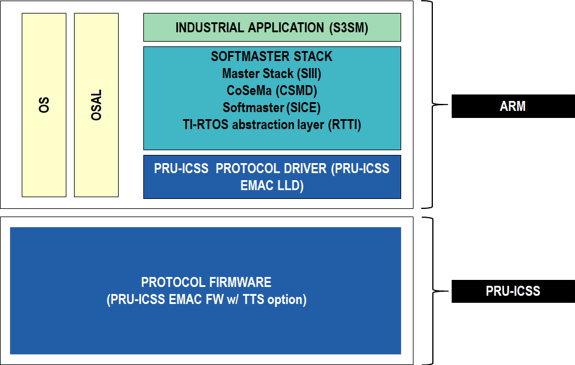9.16.3. MDT/AT Telegrams - TX queue distribution¶
MDT0 packets are mapped to the highest priority TX Queue (Queue1). MDT1 to MDT3 go to Queue 2. AT0 to AT3 packets go to Queue3 and non-real time packets to Queue4.
9.16.4. Directory Structure¶
Sercos III Softmaster demo is located in the Processor SDK RTOS release under the directory path
[SDK Install Path]/processor_sdk_rtos_[soc]_[version]/demos/sercos3-softmaster
Detailed description of the directory structure is given below:
sercos3-softmaster - is the main directory and contains makefile.
bin - directory contains output executables.
Module - directory contains Softmaster stack modules.
Module/RTTI - directory contains mayority of TI modifications to Softmaster stack.
9.16.5. Components Used¶
RTOS Components:
SYSBIOS
XDC
PDK
Processor SDK RTOS Drivers:
EMAC
UART
Board
OSAL
CSL
9.16.6. Building the Demo¶
Note
If building in windows use gmake instead of make.
The demo application is built using makefile.
You must first set up your development environment. Refer to the Processor SDK RTOS Building page for information on setting up your build environment.
The following are steps to clean the demo:
cd [SDK Install Path]/processor_sdk_rtos_[soc]_[version]/demos/sercos3-softmaster
make clean
cd [SDK Install Path]/processor_sdk_rtos_[soc]_[version]/demos/sercos3-softmaster
make all
9.16.7. Enabling Time Triggered Send (TTS)¶
The EMAC Time Triggered Send (TTS) is used to expand classical Ethernet to meet deterministic, time-critical or safety-relevant conditions. TTS reduces helps to reduce transmission jitter from 10us range to 40ns. Refer to http://processors.wiki.ti.com/index.php/ICSS_EMAC_LLD_developers_guide#Time_Triggered_Send for more details.
In RTTI_GLOB.h define RTTI_PRU_TTS_NIC_TIMED macro.
In RTTI_S3SM_USER.h for TTS define RTOS_USE_NIC_TIMED_TX and commented out RTOS_TIMING_REL_NANOSLEEP.
In SICE_USER.h define SICE_USE_NIC_TIMED_TX.
9.16.8. Enabling Redundancy¶
Note
Redundancy only works if TTS is enabled.
In RTTI_GLOB.h define or undefined RTTI_REDUNDANCY macro.
In SICE_USER.h define SICE_REDUNDANCY macro.
9.16.9. Running the Demo¶
You will need the following:
EVM’s supported |
|---|
AM335x ICEv2 |
9.16.9.1. Additional Hardware¶
A Sercos III slave for connecting/testing PRU-ICSS Sercos III Softmaster.
Ethernet LAN Cable.
USB to micro USB cable for JTAG and serial terminal.
9.16.9.2. SD Card Creation¶
Windows instructions: http://software-dl.ti.com/processor-sdk-rtos/esd/docs/latest/rtos/index_overview.html#windows-sd-card-creation-guide.
Linux instrunctions: http://software-dl.ti.com/processor-sdk-rtos/esd/docs/latest/rtos/index_overview.html#tools-create-sd-card-linux-label.
Copy binary /bin/am335x/a8/debug into SD card as “app”
Copy SD card SBL (MLO) into SD card. Prebuilt MLO location: [SDK Install Path]/processor_sdk_rtos_[soc]_[version]prebuilt-sdcardsevmAM335xsd_card_files
9.16.9.3. Set up¶
Connect AM335x ICEv2 Eth0 to Sercos III slave with a LAN cable.
Connect USB cable between a Host PC, and AM335x’s ICEv2 micro USB port.
- Configure and run teraterm.
Speed : 115200
Data : 8
Parity / Flow control : none
Stop bits : 1 bit
After SercosIII Softmaster initialize, Enter “m” for menu (optional step).
Then enter “f”, to Go to CP4 with automatic slave configuration.
After CP4 is reached, enable output with “y”.
9.16.9.4. Supported features¶
Standard timing.
NIC timing via Time Triggered Send.
Redundancy.
Minimum cycle time 1ms.
9.16.9.5. Unsupported features¶
Different cycle time for different Communication Phase (CP).
Hot-plugging (not tested).
NRT communication (no tested).
Communication method 2.
9.16.9.6. Fixed issues¶
PRU-ICSS EMAC TX queuing performance issue. PRSDK-4965.
9.16.9.7. Known issues & limitations¶
PRU-ICSS EMAC + TTS : Corrupted Rx packet at host from Firmware. PRSDK-4548.
Redundancy can be stablished if system starts as line topology and in CP4, second port is connected in ring topology, but sometimes it fails if systems starts in ring topology.
9.17. Interrupt Latency Benchmark¶
9.17.1. Introduction¶
This page describes the interrupt latency benchmark provided in the Processor-SDK for RTOS. This benchmark gives several options for different types of load configurations.
This benchmark runs on:
AM572x (A15)
AM65xx (A53)
The sections below provide details of the application as well as build and run instructions.
9.17.2. Requirements¶
The following materials are required to run this demonstration:
Hardware
TI EVM (see list above)
Micro USB cable (provided in EVM kit)
Software
Processor-SDK RTOS
Code Composer Studio
9.17.3. Software Design¶
The purpose of this benchmark is to measure the worst case interrupt latency under load. This load is achieved by simultaneously running a modified version of the Dhrystone benchmark.
9.17.3.1. Dhrystone¶
The Dhrystone code is modified to run continuously. Instead of testing the host system for DMIPS, Dhrystone threads are created repeatedly until the benchmark completes. Essentially, once a Dhrystone thread finishes, it is created again. Additionally, the user can specify the number of Dhrystone threads to be created.
9.17.3.2. Interrupt Latency Benchmark¶
Several design choices were made when creating the interrupt latency benchmark.
- The benchmark task is set to core 0
Core 0 is the A15_0/A53_0 core, and is the primary core for the benchmark. The benchmark is forced to operate only on this core, no matter the load. This is achieved by setting the affinity of the task parameter to 0
- The benchmark task needs to have a higher priority than the Dhrystone threads
If the Dhrystone threads have a priority level that is greater than or equal to the benchmark task priority, then the scheduler will schedule the two to execute one after another. Thus, the benchmark task will not run while the Dhrystone thread is running, but the timer will continue to fire. As a result, the benchmark task is stalled and returns invalid data when it resumes
- Results are printed to the UART
A UART-based menu has been implemented on the main UART
9.17.4. How to Build the Demo¶
9.17.4.1. Processor-SDK RTOS¶
To build the project, navigate to the benchmark’s directory and run “gmake clean” and then “gmake all” on windows, or “make clean” and “make all” on Linux.
<PROC_SDK_INSTALL_PATH>/benchmarks/interrupt_latency
9.17.5. How to Run the Demo¶
After building the benchmark, locate the binary under the relevant device directory in the interrupt latency benchmark’s bin/ directory. Additionally, power on the board, connect the micro-USB cable to the UART port, and begin a UART console.
<PROC_SDK_INSTALL_PATH>/benchmarks/interrupt_latency/bin/<soc>/
9.17.5.1. CCS¶
To run the benchmark on AM572xx using CCS, use the following steps.
Using CCS, launch the target configuration for the EVM CCS-Target Configurations (http://software-dl.ti.com/ccs/esd/documents/ccs_custom_target_config.html)
In the CCS debug view, create a sync group (http://software-dl.ti.com/ccs/esd/documents/ccs_smp-debug.html) with the A15 cores
For each core, connect to it and load the binary. The A15_0 core should halt at main while the SMP linked cores will begin auto-running upon load
Once all cores have been loaded, run them all
The output will be sent to the UART console in real time
You must manually halt the cores to end the benchmark
Note
If running in non-SMP mode, do not create a sync group. Only load and run the binary on the A15_0 core
To run the benchmark on AM65x using CCS, use the following steps.
If this is the first time running the benchmark, refer to the following link to setup CCS for AM65x (http://software-dl.ti.com/processor-sdk-linux/esd/docs/latest/linux/How_to_Guides_Hardware_Setup_with_CCS.html#advanced-am65x-debug-setup-with-dmsc-firmware-load)
Once setup, click the drop down arrow next to the debug button and select Debug Configurations
Select your corresponding AM65x .ccxml file and click Debug
In the CCS debug view, disconnect the R5_0 core
Create a sync group (http://software-dl.ti.com/ccs/esd/documents/ccs_smp-debug.html) with the A53 cores and connect to them all
Load the binary to all of the cores. The A53_0 core should halt at main while the SMP linked cores will begin auto-running upon load
Once all cores have been loaded, run them all
The output will be sent to the UART console in real time
You must manually halt the cores to end the benchmark
Note
If running in non-SMP mode, do not create a sync group. Only load and run the binary on the A53_0 core
9.17.5.2. Secondary Bootloader (SBL)¶
To run the benchmark on a micro-SD card, follow the corresponding steps for AM57x (http://software-dl.ti.com/processor-sdk-rtos/esd/docs/latest/rtos/index_Foundational_Components.html#am57x) and AM65x (http://software-dl.ti.com/processor-sdk-rtos/esd/docs/latest/rtos/index_Foundational_Components.html#am65x).
Note
The binary is the same format as a .out file
9.17.6. Known Issues and Limitations¶
When running the benchmark, keep in mind the following issues which are still being fixed.
SMP mode for AM65x is not working
Loading through SBL on AM65x has not been verified
The cause for several outliers in the data is being investigated
9.17.7. Results¶
AM572x
SMP Disabled Dhrystone Disabled
SMP Disabled Dhrystone Enabled One Dhry Thread
SMP Disabled Dhrystone Enabled Two Dhry Threads
SMP Enabled Dhrystone Disabled
SMP Enabled Dhrystone Enabled One Dhry Thread
SMP Enabled Dhrystone Enabled Two Dhry Threads
HW Interrupt Latency
Average Max
0.602 us
0.576 us
0.579 us
1.159 us
1.150 us
1.063 us
Average Min
0.572 us
0.572 us
0.572 us
1.121 us
1.102 us
1.040 us
Absolute Max
1.510 us
1.354 us
1.354 us
2.916 us
2.916 us
3.385 us
Absolute Min
0.572 us
0.572 us
0.572 us
1.041 us
0.885 us
0.885 us
Semaphore Wake Latency
Average Max
1.281 us
1.329 us
1.281 us
2.645 us
2.665 us
2.812 us
Average Min
1.249 us
1.250 us
1.250 us
2.581 us
2.551 us
2.657 us
Absolute Max
2.968 us
2.812 us
2.812 us
5.625 us
5.468 us
7.500 us
Absolute Min
1.093 us
1.250 us
1.250 us
2.343 us
2.343 us
2.343 us